15 مدلسازیِ تولیدِ انرژی و تلفات
15.1 نقشهٔ فصل
پس از این فصل، خواننده میتواند:
- معماریِ یک مدلِ تولیدِ انرژی را بسازد و مستند کند: ورودیهای سریِ زمانی و تفکیکشان، مرزهای مدل، زنجیرهٔ مدل، همترازیِ زمانی، تنظیماتِ نسخهدار و آزمونِ یکا و موازنه.
- تبدیلِ تابش به توانِ جریانِ مستقیم و متناوب (دما، زاویه، اینورتر، بُرش) و تبدیلِ باد به توان (منحنیِ توان، چگالی، زمین، دنباله، دسترسپذیری) را برای هر ساعت انجام دهد و همزمانیِ باد و خورشید را بسنجد.
- انرژیِ ناخالص را تا خالص در نقطهٔ اتصال آشتی دهد: هر تلف جدا (بُرش، برقی، دسترسپذیری، گرد و غبار، تخریب، حدِ صادرات، قطعی، ذخیرهسازی، دنباله)، با ترتیبِ درست و بی شمارشِ دوباره؛ و موازنهٔ ماهانه و آبشارِ تلف بسازد.
- شستوشوی ماژول را در مدلِ تولید ارزیابی کند: انرژیِ بازیافته، آب، هزینه، کیفیت و عدمِ قطعیت، در برابرِ بیشستوشو؛ بی آنکه فرض کند شستوشوی بیشتر همیشه بهتر است.
- پیشبینیِ کوتاهمدت را از ارزیابیِ بلندمدت جدا کند، روشهای پایه و هواشناختی را با افق و فناوری مقایسه کند، با معیارهای درست (سوگیری، میانگینِ قدرِ مطلقِ خطا، جذرِ میانگینِ مربعات، مهارت، کمیتها و پوشش، رمپ) اعتبارسنجی کند، از نشتِ داده و رانش بپرهیزد، و توزیعِ پیشبینی را به تصمیمِ عرضه و ذخیره ببرد.
پیشنیازها: زنجیرهٔ خورشیدیِ فصلِ ۱۰ (فصل 10)، توربین و دنبالهٔ فصلِ ۱۱ (فصل 11)، پایههای بلندمدتِ منبع در فصلهای ۱۲ و ۱۳ (D-016، D-017)، چیدمانِ W2bِ فصلِ ۱۴ (D-018)، و آمارِ فصلِ ۳ (فصل 3).
- 20 MW در 5 ساعت چند مگاواتساعت است؟
- دو تلفِ ده درصدی پشتِ هم چند درصد تلفِ کلاند؟
- ضریبِ ظرفیتِ نیروگاهِ 100 MWی با 300 GWh در سال چیست؟
- چرا چگالیِ کمتر توانِ توربین را کم میکند؟
- خطای جذرِ میانگینِ مربعاتِ خطاهای 2 و −2 چیست؟
- اگر دادهٔ یک منبع یک ساعت دیرتر برچسب خورده باشد، کدام نتیجهها عوض میشوند؟
پاسخها: (۱) 100 MWh؛ (۲) 19 %؛ (۳) \(300{,}000/(100 \times 8760) = 0.342\)؛ (۴) توانِ باد با چگالی متناسب است؛ (۵) 2؛ (۶) همهٔ نتیجههای ساعتی (همزمانی، بُرش، ذخیره)، نه جمعِ سالانه. اگر دو پرسش یا بیشتر را نتوانستید، فصل 5 و فصل 10 را مرور کنید.
جایگاهِ این فصل در نیروگاهِ P. فصلهای ۱۰ تا ۱۴ هر کدام تکهای از انرژیِ نیروگاه را ساختند: زنجیرهٔ خورشیدی، توربین و دنباله، منبعِ بلندمدت، جای توربینها. این فصل آنها را در یک مدلِ ساعتیِ نسخهدار (15.1) کنارِ هم میگذارد و از انرژیِ ناخالص تا خالصِ تحویلی در نقطهٔ اتصال آشتی میدهد: بیانیهٔ تولیدِ P50 نیروگاه (D-019). سپس به ساعتهای آینده میرود: پیشبینیِ کوتاهمدت، اعتبارسنجیِ آن و بردنِ عدمِ قطعیتش به تصمیمِ عرضه. عدمِ قطعیتِ خودِ بیانیهٔ تولید و P90 در فصلِ ۱۶ میآید.
عددهای این فصل از دادهٔ ساختگی و پایههای آموزشی ساخته شدهاند (A-267 تا A-276)؛ آرشیوِ پیشبینی ساختگی است و هیچ محصولِ پیشبینیِ واقعی را ارزیابی نمیکند. مدلِ بانکپذیر در نرمافزارِ اعتبارسنجیشده با تنظیماتِ مستند ساخته و مهندسِ مستقل آن را بازبینی میکند (فصلِ ۱۶). یادگیریِ ماشینی در این فصل بزرگنمایی نمیشود: هر روش پیش از هر چیز با خطِ پایه مقایسه میشود.
15.2 الف. معماریِ مدل
15.2.1 مدلِ تولید چیست و چه نیست
ایده. مدلِ تولیدِ انرژی برنامهای است که منبع (تابش و باد در هر ساعت)، تجهیزات (ماژول، اینورتر، توربین، کابل، ترانسفورماتور) و قیدها (حدِ صادرات، دسترسپذیری) را میگیرد و انرژیِ تحویلی را میدهد. دو نوعِ کاملاً متفاوت دارد: ارزیابیِ بلندمدت («یک سالِ میانگینِ نیروگاه چقدر میدهد؟»: پایهٔ تصمیمِ سرمایهگذاری، با عدمِ قطعیتِ چندساله) و پیشبینیِ کوتاهمدت («فردا ساعتِ ده چقدر؟»: پایهٔ عرضه و بهرهبرداری، با خطای ساعتی). هر دو زنجیرهٔ تبدیلِ مشترکی دارند، اما ورودی، خروجی، معیارِ درستی و مصرفکنندهشان فرق دارد. این فصل هر دو را میسازد و از هم جدا نگه میدارد.
| ارزیابیِ بلندمدتِ تولید | پیشبینیِ کوتاهمدت | |
|---|---|---|
| پرسش | میانگینِ سالانه و پراکندگیِ آن | توانِ ساعتهای آینده |
| ورودی | سالِ نماینده یا سریهای بلندمدت | پیشبینیِ هوا، دادهٔ زنده |
| خروجی | P50، P90، موازنهٔ ماهانه | سریِ ساعتی، کمیتها |
| معیارِ درستی | موازنهٔ انرژی، بازبینی، دادهٔ بهرهبرداری | خطا بر حسبِ افق، مهارت، پوشش |
| مصرفکننده | وامدهنده، سرمایهگذار | بهرهبردار، بازار، شبکه |
- ارزیابیِ بلندمدت و پیشبینیِ کوتاهمدت در چه چیزهایی فرق دارند؟
- معیارِ درستیِ هر کدام چیست؟
- چرا این دو را باید جدا نگه داشت؟
15.2.2 ورودیها و تفکیکِ زمانی
ایده. ورودیهای مدلِ نیروگاهِ P: سالِ ساعتیِ بستهٔ داده (تابش، دما، باد، فشار)، پایههای بلندمدت (D-016 برای خورشیدی، D-017 برای باد)، پروندههای تجهیزات (ماژول PVM-550، توربین WT-5.0-150)، چیدمان (D-018) و سناریو (S0 بی ذخیرهساز). هر ورودی منبع و نسخه دارد. تفکیکِ زمانی هم یک انتخاب است: منحنیِ توانِ توربین خمیده است، پس انرژی از تندیِ دهدقیقهای با انرژی از میانگینِ ساعتی کمی فرق دارد؛ بُرش و حدِ صادرات روی قلهها کار میکنند و تفکیکِ درشت آنها را صاف میکند.
time resolution of the inputs (one turbine, pack curve, mast year):
ten-minute speeds 18,166 MWh; hourly means 18,184 MWh (+0.10 %)
the power curve is curved: averaging the speed first changes
the energy a little; clipping and curtailment, which act on
peaks, need the finest resolution the data allow
PV clipping hours in the hourly model: 390 hمثال 15.1 (ده دقیقه یا یک ساعت) پرسش. انرژیِ یک توربین را با تندیهای دهدقیقهایِ سالِ دکل و با میانگینهای ساعتیِ همان داده حساب کنید.
پاسخ. خروجیِ بالا: 18,166 در برابرِ 18,184 MWh (+0.10 %)؛ 390 ساعت بُرشِ خورشیدی در مدلِ ساعتی.
تفسیر. برای انرژیِ سالانهٔ این ساختگاه، تفکیکِ ساعتی کافی است (همان نتیجهٔ فصلِ ۱۳). اما بُرشِ اینورتر و حدِ صادرات در دقیقههایی رخ میدهند که میانگینِ ساعتی پنهان میکند؛ اگر این تلفها بزرگ بودند، تفکیکِ ریزتر یا تصحیحِ آماری لازم بود. قاعده: تفکیک را با حساسیتسنجی انتخاب کنید، نه با عادت. وارسی: \(18{,}184/18{,}166 - 1 = 0.10\ \%\) (درست).
- پنج ورودیِ مدلِ نیروگاهِ P را با منبعشان نام ببرید.
- چرا میانگینگیریِ تندی انرژی را عوض میکند؟
- کدام تلفها به تفکیکِ ریز حساساند؟
15.2.3 مرزهای مدل
ایده. «انرژیِ نیروگاه» بی مرز معنا ندارد. سه مرزِ رایج: پایانهٔ اینورتر و توربین (خروجیِ هر واحد)، باسِ ولتاژِ متوسط (جمعِ واحدها پیش از ترانسفورماتورِ اصلی)، و نقطهٔ اتصال (جایی که انرژی به شبکه تحویل و اندازهگیریِ تجاری میشود). هر تلف به یک مرز تعلق دارد و هر عددِ گزارش باید بگوید در کدام مرز است:
| مرز | آنچه پیش از آن حساب میشود | عددِ نیروگاهِ P (سال) |
|---|---|---|
| خروجیِ واحدها | منبع، تبدیل، دنباله، گرد و غبار، دسترسپذیری | باد 193.1، خورشیدی 108.4 GWh |
| باسِ ولتاژِ متوسط | جمعِ دو فناوری | 301.5 GWh |
| نقطهٔ اتصال | تلفِ ترانسفورماتور و کابل، مصرفِ داخلی، حدِ صادرات، قطعی | 295.1 GWh |
- سه مرزِ مدل را تعریف کنید.
- مصرفِ داخلیِ نیروگاه به کدام مرز تعلق دارد؟
- چرا هر عددِ گزارش باید مرزش را بگوید؟
15.2.4 زنجیرهٔ مدل
ایده. مدل یک زنجیره است: هر گام سریِ ساعتیِ خروجیِ گامِ قبل را میگیرد و سریِ تازهای میدهد (شکل 15.1). ترتیبِ گامها فیزیکی است: گرد و غبار پیش از اینورتر روی نور اثر میکند، دنباله پیش از دسترسپذیری، حدِ صادرات پس از جمعِ دو فناوری. چون هر گام سریِ کامل را نگه میدارد، تلفِ هر گام دقیق است و جمعِ تلفها با اختلافِ ناخالص و خالص برابر است (موازنهٔ انرژی). درصدِ تلفها اما جمع نمیشوند، ضرب میشوند (E02).
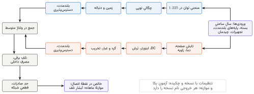
@dataclass
class Waterfall:
"""Ordered loss steps on an hourly energy series. Each step stores the
series after it, so step losses are exact and add up to the total;
percentages are of the energy entering each step."""
name: str
steps: list = field(default_factory=list) # (label, series)
def start(self, label: str, series) -> "Waterfall":
self.steps = [(label, np.asarray(series, float))]
return self
def apply(self, label: str, series_after) -> "Waterfall":
self.steps.append((label, np.asarray(series_after, float)))
return self
def totals(self) -> list[tuple[str, float, float]]:
"""(label, energy after the step, loss % of the energy entering)."""
out, prev = [], None
for label, s in self.steps:
e = float(s.sum())
pct = 0.0 if prev is None else 100 * (1 - e / prev)
out.append((label, e, pct))
prev = e
return out
def check(self, tol: float = 1e-9) -> tuple[float, float]:
"""Total loss two ways: from the first and last energy, and as the
product of the step factors; they must agree (energy balance)."""
t = self.totals()
total = 1 - t[-1][1] / t[0][1]
prod = 1 - np.prod([1 - x[2] / 100 for x in t[1:]])
assert abs(total - prod) < tol, "waterfall does not balance"
return total, sum(x[2] for x in t[1:]) / 100- چرا هر گام سریِ کامل را نگه میدارد و نه فقط یک ضریب؟
- ترتیبِ گرد و غبار و اینورتر چرا فیزیکی است؟
- دو تلفِ 10 % و 20 % با هم چند درصدند (E02)؟
15.2.5 همترازیِ زمانی
ایده. نیروگاهِ هیبریدی دو منبع را ساعت به ساعت جمع میکند. اگر یکی برچسبِ آغازِ بازه و دیگری پایانِ بازه داشته باشد (فصلِ ۵)، یا یکی به وقتِ محلی و دیگری به وقتِ جهانی باشد (فصلِ ۱۲)، جمعِ سالانه درست میماند اما هر نتیجهٔ ساعتی غلط میشود: همزمانی، بُرش، ذخیره، عرضه.
time alignment: PV read one hour late (interval-end labels taken as
interval-start, chapter 5) against the right alignment:
right PV 1 h late
curtailment at MV, MWh 426 411
hours both above half 594 583
correlation wind-PV -0.115 -0.126
the annual energies do not change, but every hourly product
(curtailment, coincidence, storage, dispatch) does: check the
labels of every input before the first runمثال 15.2 (یک ساعت دیرتر) پرسش. اگر خورشیدی یک ساعت دیرتر خوانده شود، بُرش در باسِ ولتاژِ متوسط، شمارِ ساعتهایی که هر دو بالای نصفِ ظرفیتاند و همبستگیِ باد و خورشید چقدر عوض میشوند؟
پاسخ. خروجیِ بالا: بُرش 426 به 411 MWh، ساعتهای همزمان 594 به 583، همبستگی −0.115 به −0.126.
تفسیر. در این نیروگاه تغییرها کوچکاند چون بُرش کم است؛ در نیروگاهی با بُرشِ زیاد یا ذخیرهسازِ پرکار، یک ساعت جابهجایی عددهای تصمیم را عوض میکند. علاجِ آن پیش از اجرای نخست است: برچسبها و منطقهٔ زمانیِ هر ورودی در دفترِ ورودیها، و آزمونِ همترازی (قلهٔ خورشیدی در ظهرِ خورشیدی). وارسی: جمعِ سالانهٔ خورشیدی با جابهجایی تغییر نمیکند (درست).
- دو علتِ ناهمترازیِ زمانی را نام ببرید.
- چرا جمعِ سالانه خطای همترازی را نشان نمیدهد؟
- یک آزمونِ سادهٔ همترازی برای خورشیدی پیشنهاد کنید.
15.2.6 تنظیماتِ نسخهدار و بازتولیدپذیری
ایده. هر عددِ مدل از تنظیماتی میآید: ضریبهای بلندمدت، دسترسپذیریها، گرد و غبار، تخریب، تلفهای برقی، حدِ صادرات. این تنظیمات در یک پیکربندیِ نسخهدار جمع میشوند (در کتابخانهٔ همراه، ModelConfig)؛ هر تغییرِ تنظیم، نسخهٔ تازه است؛ چکیدهای از تنظیمات روی هر خروجی مینشیند تا معلوم باشد کدام گزارش از کدام تنظیمات آمده است. این همان ردیابیپذیریِ فصلِ ۵ است، برای مدل. پیکربندیِ مدلِ 15.1:
@dataclass(frozen=True)
class ModelConfig:
"""Settings of the energy model; change one, change the version."""
lt_wind: float = 191.87 / 186.69 # D-017 long-term energy factor
lt_pv: float = 0.988 # D-016 long-term PV energy factor
av_wind: float = 0.981 # energy-based availability (ch 11)
av_pv: float = 0.990 # (A-275)
soiling: float = 0.0143 # D-014 truck at 4 % trigger
shading: float = 0.0007 # ch 10 row shading
degr_y1: float = 0.005 # first-year PV degradation (A-275)
noload_mw: float = 0.10 # transformers' no-load losses
loadloss: float = 0.015 # load losses at 100 MW, ~P^2
aux_pv: float = 0.003 # PV own use, share of output
aux_wind_mw: float = 12 * 168.2 / 8760 # ch 11, mean own use of 12 WTGs
export_mw: float = 100.0
grid_outage_h: int = 12 # grid-outage hours a year (A-275)
seed: int = 151frozen=True یعنی هیچ برنامهای نمیتواند تنظیمی را در میانهٔ اجرا عوض کند؛ برای تغییر باید پیکربندیِ تازهای ساخت (با replace) که چکیدهٔ تازهای دارد. هر ردیف توضیحی دارد که منبعش را میگوید: تصمیم (D-0xx)، فرض (A-xxx) یا فصل.
unit and energy-balance checks (model 15.1):
settings hash af78d930fe5b (sha-256 of the settings, first 12 characters)
8760 hourly values per series; energy = sum of MW x 1 h
PV below zero: 0 h; net above the 100 MW limit: 0 h
wind capacity factor at MV 0.367; PV (AC) 0.247
plant capacity factor at the POC 0.337
every output file carries the model version and this hash:
the same settings give the same numbers, and a reviewer can
see which settings made which reportمثال 15.3 (چکیدهٔ دوازدهنویسهای) پرسش. آزمونهای یکا و موازنهٔ مدلِ 15.1 را اجرا کنید و چکیدهٔ تنظیمات را بنویسید.
پاسخ. خروجیِ بالا: چکیدهٔ af78d930fe5b؛ هیچ ساعتِ منفیِ خورشیدی و هیچ ساعتِ بالای حدِ صادرات؛ ضریبِ ظرفیتِ باد 0.367، خورشیدی 0.247 و نیروگاه در نقطهٔ اتصال 0.337.
تفسیر. آزمونها خطاهای «احمقانه» را پیش از آنکه به گزارش برسند میگیرند: یکای اشتباه (کیلووات بهجای مگاوات)، علامتِ اشتباه، توانِ بالای ظرفیت. بازبین با همان تنظیمات همان عددها را میسازد؛ اگر نسازد، یکی از دو طرف چیزی را عوض کرده است. وارسی: \(295{,}140/(100 \times 8760) = 0.337\) (E03، درست).
- چرا هر تغییرِ تنظیم نسخهٔ تازه است؟
- چکیدهٔ تنظیمات روی خروجی چه کاری میکند؟
- سه آزمونِ یکا یا موازنه را نام ببرید.
15.3 ب. تبدیلِ خورشیدی و بادی
15.3.1 از تابش تا توانِ متناوب
ایده. زنجیرهٔ خورشیدی همان فصلِ ۱۰ است (فصل 10)، اینجا ساعت به ساعت و تا ولتاژِ متوسط: تابشِ صفحه با بازدهِ نامی (حدِ بالای ممکن)؛ اثرِ زاویهٔ تابش، دما و نورِ کم روی ماژول (مدلِ تکدیودِ فصلِ ۱۰)؛ تلفِ سیمکشی و ناهمسانی در سمتِ جریانِ مستقیم؛ بازدهِ اینورتر که با بار تغییر میکند؛ بُرش وقتی توانِ مستقیم از ظرفیتِ اینورتر بیشتر است؛ سپس گرد و غبار، سایه، تخریب و دسترسپذیری. ترتیبِ دقیق در بخش 15.4.5 بحث میشود.
one clear June day, PV chain, MW (model 15.1):
hour STC DC gross DC inverter clipped at MV
06 10.55 8.25 8.00 7.82 7.82 7.50
08 36.51 33.28 32.28 31.81 31.81 30.50
10 56.21 50.56 49.05 48.23 48.23 46.23
12 61.33 54.08 52.45 51.55 49.00 46.97
14 47.36 41.84 40.59 39.96 39.96 38.31
16 25.44 21.84 21.18 20.88 20.88 20.02
18 2.60 2.00 1.94 1.80 1.80 1.72
day: STC 482, after inverter 406, clipped 5.7, at MV 384 MWh
midday the temperature takes the most; clipping takes the top
of the noon hours onlyمثال 15.4 (یک روزِ صافِ ژوئن) پرسش. زنجیرهٔ خورشیدی را برای ۲۳ ژوئن هر دو ساعت از تابش با بازدهِ نامی تا خروجی در ولتاژِ متوسط دنبال کنید.
پاسخ. خروجیِ بالا: ظهر 61.3 MW با بازدهِ نامی، 54.1 پس از دما و زاویه، 52.5 پس از تلفِ مستقیم، 51.6 پس از اینورتر، 49.0 پس از بُرش و 47.0 MW در ولتاژِ متوسط؛ روز 482 MWh نامی و 384 MWh در ولتاژِ متوسط.
تفسیر. بزرگترین تلفِ نیمروز دماست (سلولِ داغ)، نه اینورتر. بُرش فقط ساعتهای نیمروز را میگیرد و در کلِ روز حدودِ یک درصد است. در ساعتهای صبح و عصر نسبتِ تلفها فرق میکند: زاویهٔ تابش بزرگتر و دما کمتر. وارسی: E06: \(51.55 - 49.0 = 2.55\ \text{MW}\) در ساعتِ دوازده بریده شد.
- هفت گامِ زنجیرهٔ خورشیدی را به ترتیب بنویسید.
- چرا دما در نیمروز بزرگترین تلف است؟
- بُرش چه ساعتهایی را میگیرد؟
15.3.2 از باد تا توان
ایده. زنجیرهٔ بادی: منحنیِ توانِ بسته در چگالیِ مرجعِ 1.225 kg/m³ (ناخالص)؛ چگالیِ توپی (D-017) با روشِ تندیِ همارز؛ زمین (افزایشِ تندیِ آموزشی، D-018)؛ دنباله با مدلِ فصلِ ۱۱ برای چیدمانِ W2b در هر بخشِ دودرجهای و هر بازهٔ تندی؛ تصحیحِ بلندمدت؛ دسترسپذیری. دنباله به جهت بستگی دارد: جدولِ زیر نشان میدهد هر بخش چقدر انرژی دارد و چقدر از آن در دنباله گم میشود.
wake loss of W2b by direction sector (data year):
sector energy share wake loss
0- 30 0.3 % 25.0 %
30- 60 0.9 % 7.7 %
60- 90 4.7 % 5.3 %
90-120 8.2 % 4.2 %
120-150 5.1 % 1.8 %
150-180 0.3 % 4.2 %
180-210 0.5 % 6.3 %
210-240 5.8 % 4.0 %
240-270 18.7 % 4.9 %
270-300 35.9 % 3.8 %
300-330 16.6 % 2.7 %
330-360 3.1 % 5.8 %
the rows stand across the prevailing sectors: small losses
where the energy is; large losses only in rare sectors along
the rows (north and south)مثال 15.5 (بیست و پنج درصد در بخشی که مهم نیست) پرسش. سهمِ انرژی و تلفِ دنبالهٔ هر بخشِ سیدرجهای را برای W2b بنویسید.
پاسخ. خروجیِ بالا: سه بخشِ 240 تا 330° حدودِ 71 % انرژی با تلفِ 2.7 تا 4.9 %؛ بخشِ شمالی (0 تا 30°) تلفِ 25 % اما سهمِ 0.3 %.
تفسیر. چیدمانِ خوب تلف را جایی کم میکند که انرژی هست: ردیفها عمود بر بخشهای غالباند و توربینها فقط وقتی باد در امتدادِ ردیف (شمال و جنوب) میوزد پشتِ هم میافتند. میانگینِ وزندارِ این جدول همان 4.0 %ِ تلفِ دنبالهٔ W2b است. وارسی: جمعِ سهمها 100 % است (درست، گرد شده).
- شش گامِ زنجیرهٔ بادی را به ترتیب بنویسید.
- چرا بخشهای پرتلف در این چیدمان کماهمیتاند؟
- چگالیِ توپی چند درصد انرژی کم میکند (E04)؟
15.3.3 همزمانیِ باد و خورشید
ایده. انرژیِ سالانهٔ هیبرید جمعِ دو انرژی است، اما ارزشِ آن به زمان بستگی دارد: اگر باد و خورشید همزمان قله بگیرند، حدِ صادرات میبُرد و ساعتهای خاموش زیاد است؛ اگر مکمل باشند، مجموع هموارتر است. سه سنجه: همبستگیِ ساعتی، ساعتهای همزمانِ پرتولید، ساعتهای همزمانِ کمتولید؛ و نیمرخِ روزانه و فصلی.
how wind and PV coincide at Plant P (model 15.1):
hourly correlation -0.115
hours with both above half their rating: 594
hours with neither above a tenth: 1504
month wind GWh PV GWh sum
Jan 15.89 6.33 22.23
Feb 18.35 7.28 25.63
Mar 18.00 10.26 28.26
Apr 14.59 10.37 24.96
May 21.22 10.34 31.57
Jun 8.15 11.25 19.41
Jul 15.04 11.55 26.59
Aug 10.23 9.67 19.91
Sep 20.68 9.41 30.09
Oct 13.83 9.44 23.27
Nov 12.06 7.20 19.26
Dec 25.08 5.24 30.32
the negative correlation and the night-heavy wind (chapter 13)
make the sum steadier than either part: few hours exceed the
export limit, and quiet hours are fewer than for each alone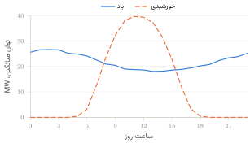
مثال 15.6 (مکملِ ضعیف، اما مکمل) پرسش. همبستگیِ ساعتی، ساعتهای هر دو بالای نصف و هر دو زیرِ یکدهم، و انرژیِ ماهانهٔ دو فناوری را حساب کنید.
پاسخ. خروجیِ بالا و شکل 15.2: همبستگی −0.115؛ 594 ساعت هر دو بالای نصف؛ 1,504 ساعت هر دو زیرِ یکدهم؛ ماهانه: ژوئن بادِ کم و خورشیدِ زیاد، دسامبر برعکس.
تفسیر. همبستگیِ منفیِ ضعیف یعنی مکمل بودن آماری، نه قطعی: هنوز ساعتهایی هست که هر دو زیادند (بُرش) و ساعتهایی که هر دو کماند (نیاز به ذخیره یا خرید). نیمرخِ روزانه بهتر میگوید: بادِ شبانهٔ این ساختگاه (فصلِ ۱۳) درهٔ نیمروزی دارد درست زیرِ قلهٔ خورشید. فصلِ ۱۷ همین را برای اندازهٔ ذخیرهساز به کار میبرد. وارسی: جمعِ ماهانهٔ باد و خورشید برابرِ 301.5 GWhِ ولتاژِ متوسط است (درست).
- سه سنجهٔ همزمانی را نام ببرید.
- چرا همبستگیِ منفیِ ضعیف کافی نیست؟
- نیمرخِ روزانه چه چیزی میگوید که همبستگی نمیگوید؟
15.3.4 یک ساعت با دست
ایده. پیش از اعتماد به ۸۷۶۰ ساعت، یک ساعت را با دست دنبال کنید. اگر عددِ دستی با عددِ برنامه نخواند، یا فهمِ شما ناقص است یا برنامه خطا دارد؛ هر دو را باید دانست. دو ساعت از مدلِ 15.1: نیمروزِ ۲۳ ژوئن برای خورشیدی، و یک ساعتِ زمستانیِ بادی با تندیِ حدودِ 9 m/s از غرب.
one hour by hand, PV (23 June 12:00, model 15.1):
POA 1021 W/m2, after IAM 1011 W/m2, air 36.3 C, wind at 2 m 2.84 m/s
cell temperature (Faiman 25 + 6.84 v) 59.3 C
STC 61.33 | DC gross 54.08 | DC 52.45 | inverter 51.55 MW
clipped 49.00 | soiling+shading 48.27 | long-term 47.69 MW
degradation 47.45 | availability 46.97 MW
one hour by hand, wind (hour 628, day 27, 04:00):
hub speed 9.08 m/s from 278 deg; ground 880.6 hPa, -4.6 C
hub density 1.1308 kg/m3; density-equivalent speed 8.84 m/s
pack curve: 3617 kW at 9.08, 3372 kW at 8.84, 3537 kW at the 9.0 m/s bin
gross (1.225) 43.40 | density 42.44 | terrain 42.27 MW
wakes 42.27 | long-term 43.44 | availability 42.61 MWمثال 15.7 (نیمروزِ ژوئن و سحرِ ژانویه) پرسش. هر گام را با دست حساب و با برنامه مقایسه کنید.
پاسخ (خورشیدی).
توانِ نامی: \(60.06 \times 1{,}021 / 1{,}000 = 61.32\ \text{MW}\) (برنامه 61.33).
دمای سلول (فایمن)، درست:
\[ T_\text{c} = 36.3 + \frac{1{,}021}{25 + 6.84 \times 2.84} = 36.3 + 23.0 = 59.3\ ^\circ\text{C} \]
توانِ مستقیمِ ناخالص: با ضریبِ دماییِ سادهٔ −0.35 %/K:
\[ 60.06 \times 1.011 \times (1 - 0.0035 \times 34.3) = 53.4\ \text{MW} \]
برنامه با مدلِ تکدیود 54.08 میدهد، یعنی 1.2 % بیشتر: ضریبِ دماییِ واقعیِ ماژول در این نقطه کمی کمتر از عددِ ساده است.
تلفِ مستقیم: \(54.08 \times 0.97 = 52.46\ \text{MW}\) (درست).
اینورتر: \(x = 52.45 / 50 = 1.049\) پریونیت؛ با معادلهٔ 15.6 خروجیِ 51.55 MW؛ بُرش به 49.00 MW.
بقیه (گرد و غبار، سایه، بلندمدت، تخریب، دسترسپذیری)، درست:
\[ 49.00 \times 0.9857 \times 0.9993 \times 0.988 \times 0.995 \times 0.990 = 46.97\ \text{MW} \]
پاسخ (بادی).
تندیِ همارز، درست:
\[ 9.08 \times \left(\frac{1.1308}{1.225}\right)^{1/3} = 9.08 \times 0.9737 = 8.84\ \text{m/s} \]
منحنیِ توان: در 8.84 m/s، 3,372 kW؛ دوازده توربین 40.46 MW. اما برنامه 42.44 MW میدهد، یعنی \(12 \times 3{,}537\): مدل تندی را در بازههای 0.5 m/s گرد میکند و 8.84 به بازهٔ 9.0 میرود.
زمین و دنباله: 42.27 MW؛ در این جهت (278°، عمود بر ردیفها) دنبالهای نیست.
بلندمدت و دسترسپذیری: \(42.27 \times 1.0277 \times 0.981 = 42.61\ \text{MW}\) (درست).
تفسیر. دو درس: (۱) گرد کردن به بازهها در یک ساعت تا 5 % خطا میدهد، اما در سال خنثی میشود (گامِ چگالی 200.120 در برابرِ 200.131 GWh با تندیِ دقیق)؛ یعنی جدول برای انرژیِ سالانه مجاز است، اما برای وارسیِ یک ساعت یا برای کنترلِ لحظهای نه. (۲) مدلِ تکدیود و ضریبِ دماییِ ساده 1.2 % فرق دارند: وارسیِ دستی با مدلِ سادهتر، بازهٔ پذیرش میخواهد.
- چرا یک ساعت را پیش از کلِ سال با دست وارسی میکنیم؟
- خطای گرد کردن به بازهها در یک ساعت و در یک سال چه فرقی دارد؟
- در این ساعتِ بادی چرا دنباله صفر است؟
15.3.5 انتخابهای مدلِ خورشیدی و اندازهٔ اثرشان
ایده. هر گامِ زنجیرهٔ خورشیدی چند مدلِ جایگزین دارد و هر مدلساز یکی را برمیگزیند. سه انتخابِ مهم:
- انتقالِ تابش به صفحه (به انگلیسی transposition): مدلِ همسانگرد فرض میکند تابشِ پخشِ آسمان از همه سو یکسان است؛ مدلِ هِی–دیویس بخشی از تابشِ پخش را پیرامونِ خورشید (به انگلیسی circumsolar) میداند که مانندِ تابشِ مستقیم با زاویهٔ خورشید روی صفحه میافتد (فصلهای ۱۰ و ۱۲).
- زاویهٔ تابش: شیشهٔ ماژول در زاویههای بزرگ بیشتر بازمیتاباند؛ ضریبِ اصلاحِ زاویهٔ تابش (به انگلیسی incidence angle modifier) این را میگیرد.
- دمای سلول: مدلِ فایمن دما را از تابش، دمای هوا و تندیِ باد میسازد؛ مدلِ سادهٔ دمای کارِ اسمی فقط از تابش و دمای هوا:
\[ T_\text{c} = T_\text{a} + \frac{T_\text{NOCT} - 20}{800}\, G_\text{POA} \tag{15.1}\]
که در آن \(G_\text{POA}\) بر حسبِ W/m² است. این مدل باد را نمیبیند: در ساختگاهِ بادخیز سلول را داغتر از واقع میپندارد.
برای دیدنِ اندازهٔ هر انتخاب، یک مدلِ سادهٔ توانِ مستقیم با ضریبِ دماییِ آموزشیِ −0.35 %/K به کار رفته است و هر بار فقط یک انتخاب عوض میشود.
PV model choices, one change at a time (relative to the model's
Hay-Davies + IAM + Faiman chain; simple DC model):
plane irradiation: Hay-Davies 2,150, isotropic 2,107 kWh/m2 (-2.0 %)
DC energy with isotropic sky -2.1 %
DC energy without IAM +3.1 %
DC energy, NOCT temperature model -2.1 %
each choice moves the energy by a few per cent: the model
report names every one, and the reviewer checks them against
measured data of similar plants (chapter 16)مثال 15.8 (سه انتخاب، هر کدام دو تا سه درصد) پرسش. اثرِ مدلِ همسانگرد بهجای هِی–دیویس، حذفِ اصلاحِ زاویه، و مدلِ دمای کارِ اسمی بهجای فایمن را روی انرژیِ مستقیمِ سالِ داده بنویسید.
پاسخ. خروجیِ بالا (داده: سالِ ساختگیِ بسته، انتشارِ 1.1.0؛ مدل: 15.1): تابشِ صفحه 2,150 در برابرِ 2,107 kWh/m²، یعنی −2.0 %؛ انرژیِ مستقیم با همسانگرد −2.1 %، بی اصلاحِ زاویه +3.1 %، با دمای کارِ اسمی −2.1 %.
تفسیر. هیچکدام «خطا» نیست؛ هر کدام انتخابی است که در گزارشِ مدل نوشته میشود. نکته در جهتهاست: مدلسازی که تابشِ پیرامونِ خورشید را نادیده بگیرد و اصلاحِ زاویه را هم فراموش کند، دو اثرِ تقریباً هماندازه و ناهمعلامت را با هم دارد و ممکن است «تصادفاً درست» به نظر برسد. بازبین هر انتخاب را جدا با دادهٔ نیروگاههای مشابه میسنجد (فصلِ ۱۶). وارسی: \(2{,}107 / 2{,}150 = 0.980\) (درست).
مدلهای این بخش آموزشیاند. مدلِ بانکپذیر با نرمافزارِ اعتبارسنجیشده و ضریبهای اندازهگیریشدهٔ ماژول (آزمونِ مستقل، بخش 15.12) ساخته میشود و هر انتخاب را با شاهد توجیه میکند.
- مدلِ همسانگرد چه فرضی دربارهٔ آسمان دارد؟
- چرا بی اصلاحِ زاویه انرژی بیشتر میشود؟
- مدلِ دمای کارِ اسمی در ساختگاهِ بادخیز چه خطایی دارد؟
- چرا دو انتخابِ «نادرست» ممکن است با هم پاسخِ درست بدهند و چرا این خوب نیست؟
15.3.6 انتخابهای مدلِ بادی: تلاطم، توقف و ضریبِ دنباله
ایده. منحنیِ توانِ توربین در یک شدتِ تلاطمِ مرجع اندازهگیری شده است (فصلهای ۱۱ و ۱۳). در ده دقیقه تندیِ باد بالا و پایین میرود و چون منحنیِ توان خمیده است، توانِ میانگین با توانِ تندیِ میانگین برابر نیست. هموارسازی منحنی را با توزیعِ تندی درونِ ده دقیقه میانگین میگیرد:
\[ \bar P(\bar v) = \int_0^\infty P(v)\, \phi\!\left(v;\ \bar v,\ \sigma_v = I\,\bar v\right) \mathrm{d}v \tag{15.2}\]
که \(\phi\) توزیعِ نرمال است. اثرش: نزدیکِ زانوی منحنی (پیش از توانِ نامی) توان کم میشود و نزدیکِ تندیِ آغاز کمی زیاد. دو انتخابِ دیگر: توقف در بادِ تند با پسماند (توربین بالای 25 m/s میایستد و تا زیرِ 22 m/s برنمیگردد) و توقف به سببِ یخ (فصلِ ۱۳).
wind model choices (one turbine, hub density, data year):
power curve smoothed for turbulence:
TI 0.08: -0.46 %
TI 0.12: -0.95 %
TI 0.16: -1.54 %
no hour above the 25 m/s cut-out in this year: stop and restart
logic (hysteresis) matters in stormier years and sites
six icing events stop the turbine 53 h: 95.5 MWh (0.57 %)
the measured power curve already holds the site's turbulence;
a curve for different turbulence changes the energy by about
a per cent; icing stops are small here but
belong in the loss register with their own evidenceمثال 15.9 (یک درصد از تلاطم، نیم درصد از یخ) پرسش. اثرِ هموارسازیِ منحنی برای شدتِ تلاطمِ 0.08، 0.12 و 0.16، و انرژیِ گمشده در توقفِ تندباد و یخ را برای یک توربین بنویسید.
پاسخ. خروجیِ بالا: −0.46، −0.95 و −1.54 %؛ در سالِ داده هیچ ساعتی بالای 25 m/s نیست؛ شش رخدادِ یخِ دکلِ فصلِ ۱۳ توربین را 53 ساعت نگه میدارد: 95.5 MWh یا 0.57 %.
تفسیر. منحنیِ بسته (اندازهگیریشده) تلاطمِ آزمون را در خود دارد؛ هموارسازیِ دوباره فقط وقتی درست است که تلاطمِ ساختگاه بیشتر از تلاطمِ آزمون باشد، و آن هم با تفاوتِ دو تلاطم، نه با کلِ آن. توقفِ تندباد در این سال صفر است اما در سالهای طوفانیتر نه: منطقِ توقف و بازگشت در مدل میماند. یخ کوچک است اما در دفترِ تلفها ردیفِ خودش را با شاهدِ خودش دارد (دادهٔ دکل). وارسی: \(95.5 / 16{,}678 = 0.57\ \%\) (انرژیِ یک توربین از مثال 15.11).
ضریبِ افتِ دنباله. مدلِ ینسن (فصلِ ۱۱) یک ضریب دارد: پهن شدنِ دنباله با فاصله. مقدارِ 0.05 (D-015) برای خشکی معمول است، اما شبهای پایدار و کمتلاطم دنباله را دیرتر پر میکنند.
the wake decay constant of the Jensen model (W2b, flat ground):
k wake loss
0.040 4.35 %
0.050 4.00 %
0.075 3.46 %
a lower k (stable, low-turbulence nights) deepens the wakes; the
value comes from validation against operating farms of similar
climate; the model states it with its uncertainty (chapter 16)مثال 15.10 (یک درصد میانِ دو ضریب) پرسش. تلفِ دنبالهٔ W2b را برای ضریبهای 0.04، 0.05 و 0.075 بنویسید.
پاسخ. خروجیِ بالا: 4.35، 4.00 و 3.46 %.
تفسیر. تفاوتِ دو ضریبِ معقول حدودِ 0.9 درصد از انرژیِ پیش از دنباله است، یعنی حدودِ 1.8 GWh در سال: اندازهٔ یک تلفِ کامل. ضریب از اعتبارسنجیِ مدل با مزرعههای در حالِ کارِ اقلیمِ مشابه میآید و با عدمِ قطعیتش گزارش میشود (فصلِ ۱۶). وارسی: \((4.35 - 3.46) \times 199.56 / 100 = 1.78\ \text{GWh}\) (گامِ زمین در مثال 15.34).
- چرا توانِ میانگین با توانِ تندیِ میانگین برابر نیست؟
- هموارسازیِ دوبارهٔ منحنیِ اندازهگیریشده چه خطری دارد؟
- پسماند در توقفِ تندباد یعنی چه؟
- چرا ضریبِ دنبالهٔ کوچکتر تلف را بیشتر میکند؟
15.3.7 انرژی از توزیعِ باد یا از سریِ زمانی
ایده. پیش از مدلهای ساعتی، انرژیِ بادی را از توزیعِ وایبول (فصلِ ۳) و منحنیِ توان حساب میکردند:
\[ f(v) = \frac{k}{c} \left(\frac{v}{c}\right)^{k-1} \exp\!\left[-\left(\frac{v}{c}\right)^k\right], \qquad E = 8760 \int_0^\infty P(v)\, f(v)\, \mathrm{d}v \tag{15.3}\]
دو روشِ برازش: گشتاورها (میانگین و انحرافِ معیار)
\[ k = \left(\frac{\sigma}{\bar v}\right)^{-1.086}, \qquad c = \frac{\bar v}{\Gamma(1 + 1/k)} \tag{15.4}\]
و مکعبِ میانگین که میانگینِ تندی و میانگینِ مکعبِ آن (\(\overline{v^3}\)، که انرژی را میسازد) را نگه میدارد. در دومی، \(k\) با دوبخشی پیدا میشود: برای هر \(k\)، \(c\) از میانگین میآید و \(c^3\,\Gamma(1 + 3/k)\) با \(\overline{v^3}\) مقایسه میشود؛ با \(k\) بزرگتر توزیع باریکتر و مکعبِ میانگین کمتر است.
def weibull_pdf(v, k, c):
return (k / c) * (v / c) ** (k - 1) * np.exp(-(v / c) ** k)
def weibull_energy(k, c, v_max=30.0, n=3001):
"""One turbine, MWh a year, pack curve and a Weibull distribution."""
v = np.linspace(0, v_max, n)
f = weibull_pdf(np.maximum(v, 1e-9), k, c)
return float(np.trapezoid(l11.pack_power(v) * f, v) * 8760 / 1e3)
def moments_fit(v):
"""Weibull k and c from the mean and standard deviation (Justus)."""
m, s = float(np.mean(v)), float(np.std(v))
k = (s / m) ** -1.086
return k, m / math.gamma(1 + 1 / k)
def energy_fit(v):
"""Weibull k and c keeping the mean and the mean cube (energy)."""
m, m3 = float(np.mean(v)), float(np.mean(v ** 3))
lo, hi = 1.0, 4.0
for _ in range(60):
k = 0.5 * (lo + hi)
c = m / math.gamma(1 + 1 / k)
if c ** 3 * math.gamma(1 + 3 / k) > m3:
lo = k
else:
hi = k
return k, cone turbine, hub density, data year: energy from the hourly series
against a fitted Weibull distribution
hourly series 16,678 MWh
Weibull by moments k 2.12 c 7.62 16,603 MWh (-0.4 %)
Weibull, mean cube k 2.11 c 7.62 16,602 MWh (-0.5 %)
12 sector Weibulls by moments 16,578 MWh (-0.6 %)
the same mean speed with another shape factor (energy against k 2.0):
mean 6.74 m/s: k 1.6 -2.0 %, k 2.0 +0.0 %, k 2.4 -0.1 %
mean 5.50 m/s: k 1.6 +4.9 %, k 2.0 +0.0 %, k 2.4 -5.9 %
a distribution keeps the speeds but loses time: it cannot give
clipping, export limits, storage or the hour-by-hour match with
PV; it is a check on the time series and a quick screening tool;
near this site's mean the shape hardly matters above k 2, but at
a low mean a wide distribution (low k) puts more hours on the
steep part of the curve: +5 % at k 1.6, -6 % at k 2.4مثال 15.11 (نیم درصد از سری، اما بی زمان) پرسش. انرژیِ یک توربین را از سریِ ساعتی (تندیِ همارزِ چگالی) و از وایبولِ برازششده به دو روش و برای دوازده بخش حساب کنید؛ سپس اثرِ ضریبِ شکل را با میانگینِ ثابت بسنجید.
پاسخ. خروجیِ بالا: سری 16,678 MWh؛ وایبولِ گشتاورها (\(k = 2.12\)، \(c = 7.62\ \text{m/s}\)) −0.4 %؛ مکعبِ میانگین −0.5 %؛ دوازده بخش −0.6 %. با میانگینِ 6.74 m/s، \(k = 1.6\) انرژی را 2.0 % کم میکند و \(k = 2.4\) تقریباً هیچ؛ با میانگینِ 5.5 m/s، \(k = 1.6\) آن را 4.9 % زیاد و \(k = 2.4\) آن را 5.9 % کم میکند.
تفسیر. توزیع برای وارسیِ سری و برای غربالِ سریع خوب است: نیم درصد اختلاف. اما زمان را گم میکند: بُرش، حدِ صادرات، ذخیره و همزمانی با خورشید فقط در سری دیده میشوند. اثرِ ضریبِ شکل به میانگین بستگی دارد: در میانگینِ کم، توزیعِ پهن (کم\(k\)) ساعتهای بیشتری را روی بخشِ پرشیبِ منحنی میبرد و انرژی را زیاد میکند؛ نزدیکِ میانگینِ این ساختگاه، بخشی از آن ساعتها به بالای توانِ نامی میرود که چیزی نمیافزاید. وارسی: \(c = 6.74/\Gamma(1 + 1/2.12) \approx 6.74/0.886 = 7.61\) (درست، گرد شده).
- دو روشِ برازشِ وایبول را نام ببرید و بگویید هر کدام چه چیزی را نگه میدارد.
- چرا روشِ توزیع نمیتواند بُرشِ حدِ صادرات را بدهد؟
- چرا اثرِ ضریبِ شکل در دو میانگینِ تندی علامتِ مخالف دارد؟
15.3.8 از توانِ مستقیم به متناوب: وارون کردنِ مدلِ اینورتر
ایده. برگهٔ دادهٔ اینورتر بازده را بر حسبِ توانِ خروجی میدهد (فصلهای ۹ و ۱۰)، اما مدلِ ساعتی توانِ ورودیِ مستقیم را میداند. تلف را تابعی از خروجیِ \(y\) (بر حسبِ پریونیتِ توانِ نامیِ متناوب) میگیریم:
\[ L(y) = c_0 + c_1\, y + c_2\, y^2 \tag{15.5}\]
که \(c_0\) تلفِ بیبار، \(c_1 y\) تلفِ خطی (افتِ ولتاژِ کلیدها) و \(c_2 y^2\) تلفِ مقاومتی است. ورودی برابرِ خروجی بهاضافهٔ تلف است، \(x = y + L(y)\)؛ پس
\[ \begin{aligned} c_2\, y^2 + (1 + c_1)\, y + (c_0 - x) &= 0 \\ y &= \frac{-(1 + c_1) + \sqrt{(1 + c_1)^2 - 4\, c_2\, (c_0 - x)}}{2\, c_2} \end{aligned} \tag{15.6}\]
ریشهٔ مثبت را برمیداریم؛ اگر \(x \le c_0\) باشد، اینورتر چیزی نمیدهد. ضریبها با کمترین مربعات از پنج نقطهٔ بازده برازش شدهاند (فصلِ ۱۰).
def ac_from_dc(x, c):
"""AC output y (per unit of rated AC) for the DC input x (per unit)
when the loss is c0 + c1 y + c2 y^2 of the output: x = y + loss, so
c2 y^2 + (1 + c1) y + (c0 - x) = 0; take the positive root. Below
the no-load loss c0 the inverter gives nothing."""
x = np.asarray(x, float)
c0, c1, c2 = c
b = 1.0 + c1
root = np.sqrt(np.maximum(b * b - 4.0 * c2 * (c0 - x), 0.0))
return np.where(x > c0, (-b + root) / (2.0 * c2), 0.0)inverter loss model fitted to five efficiency points (ch 10):
c0 0.00275, c1 0.00298, c2 0.01154 (per unit of rated AC)
DC in (pu) AC out (pu) efficiency
0.004 0.0012 31.25 %
0.020 0.0172 85.99 %
0.100 0.0969 96.86 %
0.250 0.2458 98.33 %
0.500 0.4930 98.60 %
0.750 0.7388 98.50 %
1.000 0.9832 98.32 %
year: DC 115.74 GWh, AC 113.82 GWh, loss 1.66 %
efficiency falls at low load where the no-load loss dominates;
the yearly loss is weighted by the hours the inverter spends at
each load, which is why it is not the peak efficiencyمثال 15.12 (نود و هشت و شش دهم در بیشینه، یک و شصت و شش صدم در سال) پرسش. خروجی و بازده را برای چند ورودی حساب کنید و توضیح دهید چرا تلفِ سالانه 1.66 % است، نه 1.4 %ِ بهترین نقطه.
پاسخ. خروجیِ بالا: \(c_0 = 0.00275\)، \(c_1 = 0.00298\)، \(c_2 = 0.01154\)؛ بازده در 0.02 پریونیت 86.0 %، در 0.10 96.9 %، بیشینه حدودِ 98.6 % در نیمبار، و 98.3 % در بارِ کامل؛ سال: 115.74 به 113.82 GWh، تلفِ 1.66 %.
تفسیر. تلفِ بیبار در ساعتهای صبح و عصر با بارِ کم سهمِ بزرگی دارد و تلفِ مربعی در نیمروزِ پربار؛ تلفِ سالانه میانگینِ وزندارِ هر دو با انرژیِ هر ساعت است. مدلی که فقط «بازدهِ اروپایی» یا بیشینه را بگذارد، این وزن را از دست میدهد. وارسی: برای \(x = 0.5\) (درست):
\[ \begin{aligned} \sqrt{1.00298^2 - 4 \times 0.01154 \times (0.00275 - 0.5)} &= \sqrt{1.02893} = 1.01436 \\ y = (1.01436 - 1.00298) / 0.02308 &= 0.493 \end{aligned} \]
- سه جملهٔ معادلهٔ 15.5 را با منشأِ فیزیکیشان بنویسید.
- چرا معادله برای \(y\) حل میشود نه برای \(x\)؟
- چرا بازده در بارِ خیلی کم تند افت میکند؟
15.3.9 نسبتِ عملکرد ماه به ماه
ایده. نسبتِ عملکرد (فصلِ ۱۰) انرژیِ تولیدی را با انرژیِ «نامی» که تابشِ صفحه میتوانست بدهد مقایسه میکند:
\[ \mathrm{PR} = \frac{Y_\text{f}}{H_\text{POA} / (1\ \text{kW/m}^2)}, \qquad Y_\text{f} = \frac{E}{P_\text{STC}} \tag{15.7}\]
یعنی نسبتِ ساعتهای کارِ معادل به ساعتهای تابشِ معادل. چون دما بخشِ بزرگی از تلف است، یک نسبتِ عملکردِ تصحیحشدهٔ دمایی نیز به کار میرود که هر ماه را بر \(1 + \gamma\,(T_\text{c,w} - 25)\) تقسیم میکند (\(T_\text{c,w}\) دمای سلولِ وزندار با تابش، \(\gamma\) ضریبِ دمایی؛ اینجا یک شکلِ سادهٔ آموزشی). تعریفِ نسبتِ عملکرد برای پایشِ عملکرد در IEC 61724-1:2021 آمده است (بخش 15.13).
PV performance ratio at MV (after availability), model 15.1:
month H_poa kWh/m2 yield kWh/kWp PR T_cell,w PR at 25 C
1 118.9 105.4 0.887 22.8 0.880
2 137.5 121.2 0.882 25.1 0.882
3 198.9 170.9 0.859 30.8 0.877
4 206.2 172.6 0.837 36.4 0.872
5 209.7 172.2 0.821 42.8 0.876
6 231.6 187.4 0.809 50.2 0.887
7 238.3 192.3 0.807 50.7 0.887
8 199.9 161.1 0.806 49.9 0.883
9 188.8 156.7 0.830 40.8 0.878
10 184.5 157.2 0.852 37.0 0.889
11 137.8 119.9 0.870 29.5 0.885
12 98.2 87.2 0.889 20.7 0.875
year 2150.3 1804.2 0.839 38.7 0.881
PR is lowest in the hot months; corrected to 25 C it is nearly
flat: a falling corrected PR is a fault or soiling, a falling
raw PR in July may only be the heat (chapters 50 and 52)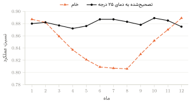
مثال 15.13 (هشت دهم در تابستان، هشت و هشت دهم پس از تصحیح) پرسش. نسبتِ عملکردِ سالانه و ماهانهٔ بلوکِ خورشیدی را در ولتاژِ متوسط (پس از دسترسپذیری) حساب و با نسخهٔ تصحیحشدهٔ دمایی مقایسه کنید.
پاسخ. خروجیِ بالا و شکل 15.3: سال: \(Y_\text{f} = 1{,}804\ \text{kWh/kWp}\)، \(H_\text{POA} = 2{,}150\ \text{kWh/m}^2\)، نسبتِ عملکرد 0.839؛ ماهانه از 0.887 در ژانویه تا 0.806 در اوت؛ تصحیحشده میانِ 0.872 و 0.889.
تفسیر. نسبتِ عملکردِ خام در ماههای گرم افت میکند و این خرابی نیست: دمای سلولِ وزندار در ژوئیه 50.7 °C است. نسخهٔ تصحیحشده تقریباً صاف است؛ پس اگر در بهرهبرداری نسخهٔ تصحیحشده پایین برود، نشانهٔ خرابی یا گرد و غبار است (فصلهای ۵۰ و ۵۲). مقایسه با مدل همیشه ماه به ماه است، نه با یک عددِ سالانه. وارسی: \(1{,}804.2 / 2{,}150.3 = 0.839\) (درست).
- نسبتِ عملکرد را با دو بازده (نهایی و مرجع) تعریف کنید.
- چرا نسبتِ عملکردِ خام در تابستان کمتر است؟
- افتِ نسبتِ عملکردِ تصحیحشده چه معنایی دارد؟
- چرا مدل و اندازهگیری باید در یک مرز (اینجا ولتاژِ متوسط) مقایسه شوند؟
15.4 پ. آشتیِ ناخالص و خالص
15.4.1 دفترِ تلفها
ایده. هر تلف یک ردیف دارد: نام، تعریف، مرز، روشِ محاسبه، منبعِ عدد، و رابطه با تلفهای دیگر. دفترِ تلفها جلوی دو خطای رایج را میگیرد: تلفی که فراموش شده و تلفی که دو بار شمرده شده.
| تلف | تعریف | گام و مرز | منبع در نیروگاهِ P |
|---|---|---|---|
| بُرش | توانِ مستقیمِ بیش از ظرفیتِ اینورتر | خورشیدی، پیش از ولتاژِ متوسط | فصلِ ۱۰، این مدل |
| برقی | تلفِ کابل و ترانسفورماتور | ولتاژِ متوسط تا نقطهٔ اتصال | فصلهای ۵ و ۲۴ |
| دسترسپذیری | ساعتهای از کار افتادنِ واحدها | هر فناوری | فصلِ ۱۱، A-275 |
| محیطی | گرد و غبار، یخ، دما | هر فناوری | D-014، فصلِ ۱۳ |
| دنباله | کمبودِ تندی پشتِ توربین | باد | D-015، D-018 |
| حدِ صادرات | توانِ بیش از 100 MW | نقطهٔ اتصال | فصلِ ۱ |
| قطعیِ شبکه | ساعتهای بی شبکه | نقطهٔ اتصال | A-275 |
| تخریب | کاهشِ توانِ ماژول با سال | خورشیدی | A-275 |
| ذخیرهسازی | تلفِ رفتوبرگشت | سناریوی S1 | A-010 |
| مصرفِ داخلی | توانِ کمکیِ توربینها و اینورترها | نقطهٔ اتصال | فصلِ ۱۱ |
- ستونهای دفترِ تلفها را بنویسید.
- کدام تلفها پس از جمعِ دو فناوری حساب میشوند؟
- دو خطایی که دفترِ تلفها جلویشان را میگیرد کداماند؟
15.4.2 بُرش و نسبتِ جریانِ مستقیم به متناوب
ایده. با نسبتِ مستقیم به متناوبِ 1.2 (D-013)، اینورتر در ساعتهای پرتابش پر میشود و بالاتر از آن را میبُرد. هرچه نسبت بیشتر، ساعتهای پر بیشتر و سهمِ بُرش بزرگتر؛ اما انرژیِ ساعتهای کمتابش هم بیشتر. بهینه اقتصادی است.
clipping against the DC/AC ratio (AC fixed at 50 MW, DC scaled):
DC/AC DC MWp AC energy GWh clipped GWh clipped %
1.1 55.1 104.33 0.03 0.02
1.2 60.1 113.03 0.78 0.69
1.3 65.1 119.93 3.34 2.71
1.4 70.1 125.49 7.20 5.43
more DC per AC fills the inverter in more hours and loses a
growing share at the top; the optimum is an economic one
(chapter 10 c_dcac, chapter 20)مثال 15.14 (از صفر تا پنج درصد) پرسش. انرژی و بُرش را برای نسبتهای 1.1 تا 1.4 با ظرفیتِ متناوبِ ثابتِ 50 MW حساب کنید.
پاسخ. خروجیِ بالا: بُرش 0.02، 0.69، 2.71 و 5.43 %؛ انرژی از 104.3 تا 125.5 GWh.
تفسیر. از 1.2 به 1.4، ماژولِ 17 % بیشتر انرژیِ 11 % بیشتر میدهد؛ مابقی بُرش است. آیا میارزد؟ به قیمتِ ماژول در برابرِ اینورتر و ارزشِ ساعتهای صبح و عصر بستگی دارد (فصلهای ۱۰ و ۲۰). بُرش «بد» نیست؛ نشانهٔ انتخابی اقتصادی است. وارسی: \(125.49/113.03 = 1.11\) (درست).
- چرا بُرش با نسبتِ مستقیم به متناوب غیرخطی رشد میکند؟
- چرا بُرش نشانهٔ طراحیِ بد نیست؟
- بهینهٔ نسبت با چه چیزهایی تعیین میشود؟
15.4.3 تلفِ برقی و مصرفِ داخلی
ایده. تلفِ ترانسفورماتور دو جزء دارد: بیباری (همیشه، حتی شب) و باری (با مربعِ توان). تلفِ کابل هم با مربعِ جریان است. پس تلفِ برقی در ساعتهای پربار نسبتاً بزرگتر و در ساعتهای کمبار کوچکتر است؛ ضریبِ ثابت برای آن کافی نیست. مصرفِ داخلی (گرمایش، تهویه، کنترل، چراغها) در شب و بیباد از شبکه خریده میشود و در ترازِ خرید و فروش (فصلِ ۵ و ۲۸) جدا میآید. وارسی: E07: تلفِ بارِ 1.5 % در 100 MW، در 60 MW برابرِ \(1.5 \times 0.6^2 = 0.54\ \text{MW}\).
- دو جزءِ تلفِ ترانسفورماتور را تعریف کنید.
- چرا تلفِ برقی را با ضریبِ ثابت نمیسازیم؟
- مصرفِ داخلی در شب چگونه تأمین میشود؟
15.4.4 دسترسپذیری: ضریب یا ساعت؟
ایده. دسترسپذیریِ 98.1 % را میتوان ضریبی روی همهٔ ساعتها گرفت، یا ساعتهای خاموشی با همان سهم. انرژیِ سالانه یکی است، اما تلفهایی که روی قله کار میکنند (حدِ صادرات) فرق میکنند: ضریب همهٔ قلهها را کمی پایین میآورد؛ خاموشیِ ساعتی بعضی قلهها را دستنخورده میگذارد.
two assumptions compared (A-276):
(1) wind availability 98.1 %: as a factor or as whole-farm outage hours
curtailment 227 MWh (factor) against 313 MWh (hours)
(2) soiling: constant 1.43 % or the station's daily soiling under
the 4 % trigger (D-014), energy-weighted
loss 1.50 % (constant) against 1.59 % (seasonal); mean daily loss 1.43 %
the factor spreads the outage over every hour and cuts the peaks
that curtailment sees; the seasonal soiling weighs the dusty dry
season where most energy is made: the order and the shape of a
loss can matter as much as its averageمثال 15.15 (دویست و بیست و هفت یا سیصد و سیزده) پرسش. بُرش در حدِ صادرات را با دسترسپذیریِ بادی بهشکلِ ضریب و بهشکلِ ساعتهای خاموشیِ کلِ مزرعه مقایسه کنید.
پاسخ. خروجیِ بالا (بخشِ ۱): 227 MWh با ضریب و 313 MWh با ساعتها.
تفسیر. تفاوت در این نیروگاه کوچک است چون بُرش کوچک است؛ در نیروگاهی با حدِ صادراتِ تنگ، روشِ مدلسازیِ دسترسپذیری بُرش را چند ده درصد عوض میکند. خاموشیِ واقعی نه «همهٔ مزرعه» است نه «همهجا کمی»: توربینها جدا خراب میشوند. مدلِ دقیقتر خاموشیِ هر توربین را جدا شبیهسازی میکند (فصلهای ۱۶ و ۵۲). وارسی: \(313/227 = 1.38\) (درست).
- دو روشِ مدلسازیِ دسترسپذیری را مقایسه کنید.
- چرا روش روی بُرش اثر دارد؟
- مدلِ دقیقترِ دسترسپذیری چه میکند؟
15.4.5 گرد و غبار و ترتیبِ تلفها
ایده. گرد و غبار پیش از اینورتر روی نور اثر میکند. اگر آن را پس از بُرش بهصورتِ ضریب روی انرژیِ متناوب بزنیم، در ساعتهایی که بُرش بود، انرژیای را کم کردهایم که به هر حال بریده میشد: شمارشِ دوباره. همچنین شکلِ فصلیِ گرد و غبار مهم است: فصلِ خشک هم پرغبار است و هم پرآفتاب.
order of two losses: soiling before the inverter (physical) or
after clipping (a factor on AC energy):
soiling on DC, then inverter and clipping 111.66 GWh
clipping first, soiling factor on AC 111.42 GWh
difference +0.25 GWh (+0.22 %)
in clipped hours dirt removes energy that would have been
clipped anyway: soiling on DC loses less; a factor on AC
counts it twice (double counting in a small way)مثال 15.16 (یک چهارم گیگاواتساعت از ترتیب) پرسش. انرژیِ خورشیدی را یک بار با گرد و غبار روی توانِ مستقیم پیش از اینورتر و بُرش، و یک بار با ضریبِ گرد و غبار روی انرژیِ متناوب پس از بُرش حساب کنید. سپس گرد و غبارِ ثابتِ 1.43 % را با گرد و غبارِ روزانهٔ ایستگاه زیرِ سیاستِ آستانه مقایسه کنید.
پاسخ. خروجیهای بالا: 111.66 در برابرِ 111.42 GWh (+0.22 %)؛ گرد و غبارِ فصلیِ وزندار 1.59 % در برابرِ 1.50 %ِ ثابت (با سایه).
تفسیر. دو اثر در جهتِ مخالفاند: ترتیبِ درست تلف را کمی کم میکند، شکلِ فصلی آن را کمی زیاد. هر دو کوچکاند اما نشان میدهند «یک درصدِ گرد و غبار» عددی بیزمینه است: کجا در زنجیره و با چه شکلی؟ مدلِ 15.1 ضریبِ پس از بُرش را نگه داشته (محافظهکار، ساده) و حساسیت را گزارش میکند. وارسی: \(111.66 - 111.42 = 0.24\) (درست، گرد شده).
- چرا ضریبِ گرد و غبار پس از بُرش شمارشِ دوباره است؟
- چرا گرد و غبارِ فصلیِ وزندار بیشتر از میانگینِ ساده است؟
- مدلِ 15.1 کدام را انتخاب کرد و چرا؟
15.4.6 تخریب در طولِ عمر
ایده. توانِ ماژول با سال کم میشود (فصلِ ۱۰). گزارشِ تولید باید بگوید کدام سال را میدهد: سالِ اول، سالِ دهم یا میانگینِ عمر. نرخ از ضمانتِ سازنده و دادههای میدانی میآید و خودش نامطمئن است (فصلِ ۱۶).
PV energy over the life with 0.5 %/yr degradation (A-275):
year energy GWh against year 0
1 108.36 -0.5 %
5 106.18 -2.5 %
10 103.46 -5.0 %
15 100.73 -7.5 %
20 98.01 -10.0 %
25 95.29 -12.5 %
25-year mean 101.82 GWh (-6.5 % against year 0)
a year-1 report and a life-mean report differ by about 6 %:
each states which it is (chapter 16 and the finance model)مثال 15.17 (شش و نیم درصد میانِ سالِ اول و میانگینِ عمر) پرسش. انرژیِ خورشیدی را با تخریبِ 0.5 % در سال برای سالهای ۱ تا ۲۵ و میانگینِ بیستوپنجساله حساب کنید.
پاسخ. خروجیِ بالا: سالِ ۱ 108.4، سالِ ۲۵ 95.3 GWh؛ میانگین 101.8 GWh، 6.5 % کمتر از سالِ صفر.
تفسیر. دو گزارش با عددهای متفاوت هر دو درستاند اگر بگویند کدام سال را میدهند. مدلِ مالی (فصلِ ۲۱) هر سال را جدا میخواهد؛ بیانیهٔ تولیدِ این فصل سالِ اول است. وارسی: E09: ضریبِ میانگینِ \(1 - 0.005 \times 13 = 0.935\) (درست).
- چرا گزارش باید سالِ انرژی را بگوید؟
- میانگینِ عمر با نرخِ 0.5 % چند درصد کمتر از سالِ صفر است؟
- نرخِ تخریب از کجا میآید؟
15.4.7 حدِ صادرات، قطعی و ذخیره
ایده. سه تلفِ آخر در نقطهٔ اتصال رخ میدهند. حدِ صادرات فقط وقتی میبُرد که هر دو فناوری با هم زیادند؛ قطعیِ شبکه همهٔ تولیدِ آن ساعتها را میگیرد و اثرش به زمانِ قطعی بستگی دارد؛ ذخیرهساز (S1) میتواند انرژیِ بریده را بگیرد و بعد بدهد، با تلفِ رفتوبرگشت.
12 grid-outage hours a year: energy lost depends on when they fall
model run (seed 151): 491 MWh
500 random years: mean 401 MWh, 10-90 % 286 .. 516 MWh
outages in storms (windy hours) cost more than the mean: a
grid-availability figure needs its timing as well (chapter 27)the S1 battery on the curtailment (20 MW, 32 MWh usable, 86 %):
curtailed without storage 227 MWh
stored 227 MWh, released 195 MWh (losses 32 MWh)
the curtailment of this plant is small, so a battery sized
for it would sit idle: its value lies elsewhere (shifting,
reserve, firm delivery, chapters 17-19)مثال 15.18 (باتری برای دویست مگاواتساعت؟) پرسش. (الف) دوازده ساعت قطعیِ شبکه در سال چقدر انرژی میبرد و پراکندگیِ آن چیست؟ (ب) باتریِ S1 چقدر از انرژیِ بریده را نجات میدهد؟ (ج) اگر حدِ صادرات 90 MW بود، بُرش چقدر میشد؟
پاسخ. خروجیهای بالا و P45: (الف) میانگینِ 401 MWh با بازهٔ 286 تا 516 MWh؛ (ب) 227 MWh ذخیره و 195 MWh بازگردانده؛ (ج) 1,757 MWh در 225 ساعت.
تفسیر. بُرش در حدِ 100 MW کوچک است؛ با حدِ 90 MW هشت برابر میشود: حدِ صادرات یکی از متغیرهای حساسِ طراحیِ هیبرید است (فصلهای ۱۷ و ۲۸). باتریِ بیست مگاواتی برای این بُرش بیکار میماند؛ ارزشِ آن جای دیگر است (جابهجاییِ زمانی، ذخیره، عرضهٔ مطمئن، فصلهای ۱۷ تا ۱۹). وارسی: \(195/227 = 0.86\)، بازدهِ رفتوبرگشت (درست).
- چرا اثرِ قطعیِ شبکه به زمانِ آن بستگی دارد؟
- چرا باتری برای بُرشِ این نیروگاه بیکار است؟
- کاهشِ حدِ صادرات از 100 به 90 MW چه اثری دارد؟
15.4.8 شکلِ تلفِ برقی و هزینهٔ توانِ واکنشی
ایده. تلفِ برقیِ مدل دو بخش دارد (بخش 15.4.3): بیباری ثابت (هستهٔ ترانسفورماتورها، 0.10 MW) و باری که با مربعِ جریان، یعنی تقریباً با مربعِ توان، بزرگ میشود:
\[ P_\text{loss} = P_0 + \ell\, P_\text{n} \left(\frac{P}{P_\text{n}}\right)^{2} \tag{15.8}\]
با \(\ell = 1.5\ \%\) و \(P_\text{n} = 100\ \text{MW}\) (فرضِ آموزشی). اگر شبکه توانِ واکنشی بخواهد (فصلِ ۲۸)، جریان برای همان توانِ حقیقی \(1/\text{pf}\) برابر میشود و تلفِ بار \(1/\text{pf}^2\) برابر.
انتهای زنجیره (از ولتاژِ متوسط تا نقطهٔ اتصال) در کتابخانهٔ همراه یک تابع است که همهٔ برنامههای این فصل از آن استفاده میکنند؛ پس هر آزمایشِ «اگر» (بلوکِ بزرگتر، سالهای دیگر، حساسیت) همان حسابِ مدل را دارد:
def plant_end(w_mv, pv_mv, cfg, outage):
"""MV to POC: electrical losses (no-load + load ~ P^2), own use,
export limit and grid outages. Returns (poc, net), MW."""
pv_mv = np.asarray(pv_mv, float)
mv = np.asarray(w_mv, float) + pv_mv
load = cfg.loadloss * cfg.export_mw * (mv / cfg.export_mw) ** 2
after_el = mv - (cfg.noload_mw + load)
poc = after_el - (cfg.aux_wind_mw + cfg.aux_pv * pv_mv)
delivered = np.minimum(poc, cfg.export_mw)
net = np.where(outage, np.minimum(delivered, 0.0), delivered)
return poc, netelectrical losses, the model's P^2 form against a constant factor:
model (no-load + load ~ P^2): 3,293 MWh (1.09 % of MV energy)
load loss as a share of the output: 1.50 % at full output,
0.50 % at a third of it (0.17 % of 100 MW); the no-load
0.10 MW weighs most in quiet hours; a constant factor gets
both shapes wrong hour by hour
power factor 1.00 at the POC: load losses x 1/pf^2: +0 MWh
power factor 0.95 at the POC: load losses x 1/pf^2: +261 MWh
power factor 0.90 at the POC: load losses x 1/pf^2: +567 MWh
reactive power asked by the grid (chapter 28) raises currents and
losses: the requirement enters the model as an operating modeمثال 15.19 (پانصد مگاواتساعت برای ضریبِ توانِ ۰٫۹) پرسش. تلفِ برقیِ سالانه را با شکلِ مربعی حساب کنید و بگویید یک ضریبِ ثابت کجا خطا میکند. اگر نیروگاه در همهٔ ساعتها با ضریبِ توانِ 0.95 یا 0.90 کار کند، تلف چقدر بیشتر میشود؟
پاسخ. خروجیِ بالا: 3,293 MWh، یعنی 1.09 % از انرژیِ ولتاژِ متوسط. تلفِ بار در توانِ کامل 1.50 % و در یکسومِ آن 0.50 % از خروجی است؛ ضریبِ توانِ 0.95 و 0.90 بهترتیب 261 و 567 MWh میافزاید.
تفسیر. ضریبِ ثابتِ 1.09 % جمعِ سالانه را درست میدهد (چون از همین مدل گرفته شده) اما ساعتها را نه: در ساعتهای کمباد سهمِ بیباری بزرگ است و در ساعتهای پر سهمِ باری؛ و ساعتهای پر همانهاییاند که حدِ صادرات میبُرد. الزامِ توانِ واکنشی یک حالتِ کار در مدل است، نه یک درصدِ اضافه؛ کشوری است و از قراردادِ اتصال میآید (فصلهای ۲۸ و ۵۵ تا ۵۷). وارسی: \(1.5\ \% \times (1/3)^2 \times 100 = 0.167\ \text{MW}\)، که \(0.167 / 33.3 = 0.50\ \%\) از خروجی است.
- دو بخشِ تلفِ برقی را با رفتارشان نسبت به توان بنویسید.
- چرا ضریبِ ثابت ساعت به ساعت خطا میکند حتی وقتی جمعِ سالانه درست است؟
- چرا ضریبِ توانِ کمتر تلفِ بار را بیشتر میکند؟
15.4.9 بُرشِ دستوریِ شبکه
ایده. گذشته از حدِ صادراتِ ثابت، اپراتورِ شبکه ممکن است در ساعتهایی دستورِ کاهشِ تولید بدهد: برای پرباری خط، مازادِ تولیدِ منطقه یا نگهداریِ شبکه. این تلفِ شبکه است، نه تلفِ نیروگاه: جدا ثبت میشود، ممکن است در قرارداد جبران شود و پیشبینیاش از دادهٔ شبکه میآید (U-057). برای آموزش یک قاعدهٔ ساختگی (A-269): در 20 % روزهای مارس تا مه، از ساعتِ ۱۰ تا ۱۵، سقفِ 70 MW.
a grid operator's spring limit (teaching rule, A-269):
18 days x 5 midday hours at 70 MW: 485 MWh lost (0.16 % of the year)
ordered curtailment is not a plant loss but a grid one: it is
recorded separately (it may be compensated, chapter 28), it
falls on the sunniest hours, and a battery can take part of itمثال 15.20 (بهاری که نیمروزش بریده میشود) پرسش. انرژیِ گمشده در قاعدهٔ A-269 را حساب کنید و بگویید چرا این عدد را نباید در «دسترسپذیری» یا «حدِ صادرات» گذاشت.
پاسخ. خروجیِ بالا: هجده روز، هر روز پنج ساعت: 485 MWh، یعنی 0.16 % از سال.
تفسیر. بُرشِ دستوری روی آفتابیترین ساعتهای بهار میافتد، همانجا که خورشید و بادِ بهاری با هم زیادند؛ پس ذخیرهساز میتواند بخشی از آن را بگیرد (فصلهای ۱۷ و ۱۸). اگر در دسترسپذیری گذاشته شود، کارکردِ تجهیزات بد به نظر میرسد؛ اگر در حدِ صادرات، قرارداد و جبران گم میشود. وارسی: \(18 \times 5 = 90\) ساعت؛ \(485 / 90 = 5.4\ \text{MW}\) میانگینِ بریدهشده در هر ساعت، کمتر از \(100 - 70 = 30\ \text{MW}\) (درست: همهٔ ساعتها بالای 70 MW نیستند).
- بُرشِ دستوری و حدِ صادرات چه فرقی دارند؟
- چرا بُرشِ دستوری در دفترِ تلفها ردیفِ جدا دارد؟
- دادهٔ پیشبینیِ بُرشِ دستوری از کجا میآید؟
15.4.10 برداشت از شبکه و صادراتِ خالص
ایده. در ساعتهایی که خورشید نیست و باد کم است، مصرفِ داخلی و تلفِ بیباری از تولید بیشتر میشوند و نیروگاه از شبکه برق میگیرد. کنتورِ نقطهٔ اتصال صادرات و واردات را جدا میشمارد و قیمتشان ممکن است فرق کند (فصلِ ۲۶)؛ پس بیانیهٔ تولید هر دو را نشان میدهد.
energy taken from the grid when the plant's own use and no-load
losses exceed its output (model 15.1, at the POC):
hours with import 457
energy imported 151 MWh
energy exported 295.29 GWh
net (export - import) 295.14 GWh
import and export are metered apart and may be priced apart:
the yield statement shows both, not only the net (chapter 26)مثال 15.21 (چهارصد و پنجاه و هفت ساعت خریدار) پرسش. ساعتها و انرژیِ برداشت از شبکه و صادراتِ ناخالص و خالص را بنویسید.
پاسخ. خروجیِ بالا: 457 ساعت، 151 MWh برداشت؛ صادرات 295.29 GWh؛ خالص 295.14 GWh.
تفسیر. عددِ برداشت کوچک است، اما اگر قیمتِ خرید سه برابرِ قیمتِ فروش باشد، 151 MWh در حسابِ سود و زیان مانندِ 450 MWh فروش است. فقط 457 ساعت از حدودِ ۴٬۴۰۰ ساعتِ شبِ سال برداشت دارد، چون بادِ شبانه مصرفِ داخلی را میدهد؛ یک نیروگاهِ خورشیدیِ تنها هر شب برداشت میکرد. وارسی: \(295.29 - 0.151 = 295.14\ \text{GWh}\) (درست).
- نیروگاه در چه ساعتهایی از شبکه برق میگیرد؟
- چرا صادرات و واردات جدا شمرده میشوند؟
- چرا یک نیروگاهِ خورشیدیِ تنها هر شب از شبکه برق میگیرد و این هیبرید نه؟
15.4.11 اندازهٔ بلوکِ خورشیدی در برابرِ حدِ صادرات
ایده. اتصالِ مشترک صرفهجوییِ اصلیِ هیبرید است: 110 MW تولید پشتِ 100 MW اتصال. میشود بلوکِ خورشیدی را بزرگتر کرد (به انگلیسی overbuild)؛ بهای آن بُرشِ بیشتر است. پرسشِ طراحی: هر مگاواتِ افزوده چه سهمی از انرژیاش را به شبکه میرساند؟ (شکلِ ساعتیِ خورشیدی ثابت و فقط مقیاسش عوض میشود.)
PV block size at the 100 MW export limit (same hourly shape,
before grid outages):
PV MW AC delivered GWh curtailed GWh curtailed % marginal
50 295.63 0.23 0.08
60 315.63 1.46 0.46 92 %
70 334.74 3.54 1.05 88 %
80 352.81 6.60 1.84 83 %
90 369.92 10.59 2.78 79 %
100 385.61 15.93 3.97 72 %
marginal: share of each added block's energy that reaches the
grid; the shared connection is the hybrid's saving, and its
curtailment is the price; a battery, a contract for curtailed
energy or a larger limit changes the balance (chapters 17-19)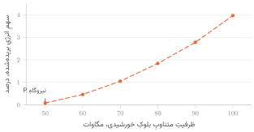
مثال 15.22 (نود و دو درصد، سپس هفتاد و دو) پرسش. بلوکِ خورشیدی را از 50 تا 100 MW بزرگ کنید و انرژیِ تحویلی، بُرش و سهمِ رسیده از هر 10 MW افزوده را بنویسید.
پاسخ. خروجیِ بالا و شکل 15.4: بُرش از 0.08 % در 50 MW به 1.05 % در 70 و 3.97 % در 100 MW میرسد؛ سهمِ رسیده از هر بلوکِ افزوده 92، 88، 83، 79 و 72 %.
تفسیر. بُرش با اندازه تندتر از خطی رشد میکند، چون هر بلوکِ تازه ساعتهای بیشتری را بالای حد میبرد. تصمیم اقتصادی است: هزینهٔ هر بلوک در برابرِ ارزشِ 72 تا 92 % انرژیاش (فصلهای ۲۰ و ۲۱)؛ باتری، قراردادِ خریدِ انرژیِ بریده یا اتصالِ بزرگتر این تراز را عوض میکنند (فصلهای ۱۷ تا ۱۹). اندازهٔ 50 MWِ نیروگاهِ P انتخابِ محتاطانهای است که بُرش را تقریباً صفر نگه میدارد. وارسی: از 90 به 100 MW: \((385.61 - 369.92) / (0.2 \times 108.36) = 0.72\) (درست).
- چرا بُرش تندتر از خطی رشد میکند؟
- «سهمِ رسیده» از بلوکِ افزوده را تعریف کنید.
- سه راه برای کم کردنِ بهای بزرگتر کردنِ بلوکِ خورشیدی نام ببرید.
15.4.12 تغییرِ سال به سال و پوششِ متقابلِ دو منبع
ایده. بیانیهٔ تولید میانگینِ بلندمدت است؛ هر سال با آن فرق دارد (تغییرِ سال به سال، فصلهای ۱۲ و ۱۳). برای هیبرید پرسشِ تازه این است: آیا سالِ کمباد سالِ کمآفتاب هم هست؟ واریانسِ مجموعِ دو منبع:
\[ \sigma_\text{h}^2 = \sigma_\text{w}^2 + \sigma_\text{pv}^2 + 2\, r\, \sigma_\text{w}\, \sigma_\text{pv} \tag{15.9}\]
که \(r\) همبستگیِ انرژیِ سالانهٔ دو منبع است. اگر \(r\) کوچک باشد، نوسانِ مجموع نسبت به میانگین از نوسانِ هر منبع کمتر است. بیست سال ساخته شدهاند: باد از سریِ مرجعِ فصلِ ۱۳ با خطِ D-017 و منحنیِ مزرعهٔ مدل؛ خورشید از تابشِ بیستسالهٔ فصلِ ۱۲ ماه به ماه.
twenty years of energy at MV (wind 2004-2023 reference, PV 20-year GHI):
wind mean 193.1 GWh, year-to-year sd 4.5 %
PV mean 108.4 GWh, year-to-year sd 2.7 %
hybrid mean 301.5 GWh, year-to-year sd 3.2 %
correlation of annual wind and PV +0.12
worst year: wind 174.1, PV 101.7, hybrid 281.8 GWh
the hybrid's variation is less than the wind's: two resources
that do not vary together hedge each other year by year, which
lowers the one-year P90 (chapter 16) and the debt risk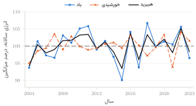
مثال 15.23 (چهار و نیم، دو و هفت، سه و دو دهم) پرسش. انحرافِ معیارِ سال به سالِ باد، خورشید و هیبرید و همبستگیِ آنها را بنویسید و با معادلهٔ 15.9 وارسی کنید.
پاسخ. خروجیِ بالا و شکل 15.5: باد 4.5 % از 193.1 GWh، خورشید 2.7 % از 108.4 GWh، هیبرید 3.2 % از 301.5 GWh؛ همبستگی +0.12؛ بدترین سال: هیبرید 281.8 GWh.
تفسیر. همبستگیِ کوچک یعنی دو منبع با هم بد نمیشوند: سالِ ۲۰۱۵ بادِ 90.1 % و خورشیدِ 99.4 % داشت و هیبرید 93.5 % ماند. این پوشش عدمِ قطعیتِ یکساله و P90ِ یکساله را کم میکند و برای وامدهنده که بازپرداختِ هر سال را میبیند مهم است (فصلهای ۱۶ و ۲۱). اما این همبستگی از دو سریِ ساختگی است؛ برای ساختگاهِ واقعی از دادهٔ بلندمدتِ همزمانِ هر دو منبع برآورد میشود. وارسی (درست، گرد شده)، یعنی 3.15 %:
\[ \sigma_\text{h} = \sqrt{8.69^2 + 2.93^2 + 2 \times 0.12 \times 8.69 \times 2.93} = 9.50\ \text{GWh} \]
- معادلهٔ 15.9 را برای \(r = 0\) و \(r = 1\) بنویسید.
- چرا نوسانِ نسبیِ هیبرید از نوسانِ باد کمتر است؟
- چرا همبستگیِ دو منبع باید از دادهٔ همزمان برآورد شود؟
15.4.13 تلفِ سالِ میانگین یا میانگینِ تلف
ایده. تلفهایی مانندِ بُرش و حدِ صادرات کوژاند: با منبعِ بیشتر، تندتر از خطی بزرگ میشوند. برای چنین تابعی میانگینِ تابع از تابعِ میانگین بزرگتر است (نابرابریِ ینسن، به انگلیسی Jensen’s inequality):
\[ \overline{L(X)} \ \geq\ L(\bar X) \tag{15.10}\]
پس بُرشِ «سالِ میانگین» از میانگینِ بُرشِ سالها کمتر است. برای دیدنِ اندازهٔ آن، شکلِ ساعتیِ سالِ داده برای هر یک از بیست سال با ضریبِ باد و خورشیدِ همان سال مقیاس شده است.
curtailment of the average year against the average curtailment
(hourly shape of the data year, scaled to each of 20 years):
average year (scale 1, 1) 227 MWh
mean over the 20 years 287 MWh
range 0 to 822 MWh
windiest year 2018: 486 MWh
a loss that grows faster than the resource (a limit, clipping)
is larger on average than in the average year: run the model
on many years or correct the loss, do not scale one numberمثال 15.24 (دویست و بیست و هفت یا دویست و هشتاد و هفت) پرسش. بُرشِ حدِ صادرات را در سالِ میانگین و میانگینِ آن را در بیست سال مقایسه کنید.
پاسخ. خروجیِ بالا: سالِ میانگین 227 MWh؛ میانگینِ بیست سال 287 MWh؛ بازه صفر تا 822 MWh؛ پربادترین سال (۲۰۱۸) 486 MWh.
تفسیر. میانگینِ واقعیِ بُرش 26 % بیشتر از عددِ سالِ میانگین است. اینجا مطلق کوچک است، اما در نیروگاهی با بُرشِ چند درصدی (مثال 15.22) همین اثر چند دهم درصد از انرژی میشود. راه: مدل را روی چند سال اجرا کنید یا تلف را برای این اثر اصلاح کنید؛ یک عدد را مقیاس نکنید. پربادترین سال بیشترین بُرش را ندارد: بُرش به باد و خورشیدِ همان سال بستگی دارد. وارسی: \(287 / 227 = 1.26\).
مقیاس کردنِ شکلِ یک سال برای سالهای دیگر خودش یک سادهسازی است: سالِ پربادتر فقط «همان سال، بزرگتر» نیست. مدلِ بانکپذیر چند سالِ ساعتیِ واقعی (یا ساختهشده با روشِ مستند) را اجرا میکند.
- تابعِ کوژ را با یک مثال از تلفهای این فصل توضیح دهید.
- چرا بُرشِ سالِ میانگین از میانگینِ بُرش کمتر است؟
- چرا پربادترین سال بیشترین بُرش را ندارد؟
15.4.14 انرژیِ خالص در طولِ عمر
ایده. بیانیهٔ 295.1 GWh برای سالِ اول است (بخش 15.4.6). مدلِ مالی (فصلهای ۲۰ و ۲۱) سریِ بیستوپنجساله میخواهد. تخریبِ خورشیدی 0.5 % در سال (A-275)؛ برای باد در این مدل تخریبی فرض نشده است (A-274، آموزشی؛ دادهٔ بهرهبرداری داوری میکند، فصلِ ۵۲). انتهای زنجیره (تلفِ برقی، مصرفِ داخلی، حدِ صادرات، قطعی) برای هر سال دوباره اجرا میشود.
net energy at the POC over the life (S0, model 15.1):
year PV at MV GWh net GWh
1 108.36 295.14
5 106.18 293.08
10 103.46 290.48
15 100.73 287.86
20 98.01 285.23
25 95.29 282.57
mean of 25 years 288.89 GWh; year 1 is +2.2 % above it
a statement names its year; the finance model takes the seriesمثال 15.25 (دو درصد میانِ سالِ اول و میانگینِ عمر) پرسش. خالصِ سالهای ۱، ۵، ۱۰، ۱۵، ۲۰ و ۲۵ و میانگینِ بیستوپنج سال را بنویسید.
پاسخ. خروجیِ بالا: از 295.14 در سالِ اول تا 282.57 GWh در سالِ بیستوپنجم؛ میانگین 288.89 GWh؛ سالِ اول 2.2 % بالاتر.
تفسیر. چون فقط خورشیدی تخریب دارد و یکسومِ انرژی است، افتِ هیبرید کمتر از افتِ خورشیدی است (6.5 % در مثال 15.17). اگر وامدهنده عددِ سالِ اول را بهجای سری به کار ببرد، درآمدِ سالهای پایانی را زیاد میبیند. اگر باد هم تخریب داشته باشد، این فاصله بیشتر میشود؛ پس A-274 در دفترِ فرضها با برنامهٔ وارسی ثبت میشود. وارسی: خورشیدی در سالِ بیستوپنجم (درست):
\[ 108.36 \times \frac{1 - 0.005 \times 25}{1 - 0.005} = 95.29\ \text{GWh} \]
- چرا مدلِ مالی سری میخواهد نه یک عدد؟
- چرا افتِ هیبرید در طولِ عمر کمتر از افتِ خورشیدی است؟
- فرضِ «بی تخریب برای باد» چگونه وارسی میشود؟
15.4.15 کاهشِ تولید به سببِ محیطِزیست
ایده. مجوزِ محیطِزیستی (فصلهای ۱۴ و ۳۳) ممکن است توربینها را در شرایطی متوقف یا محدود کند: در فصلِ فعالیتِ خفاشها، شبهای گرم با بادِ کم؛ در شب برای صدا، با حالتِ کمصدا که توان را کم میکند؛ یا برای سایهزنی در دقیقههایی از روز. اینها تلفِ دستوریاند، نه خرابی؛ قاعدهشان را مجوز میگوید و مدل ساعت به ساعت اجرایش میکند. قاعدههای آموزشیِ اینجا (A-272)، که در مدلِ 15.1 نیستند چون شرطِ مجوز هنوز معلوم نیست (U-060):
- خفاش: آوریل تا اکتبر، ساعتِ ۲۰ تا ۶، بادِ توپی زیرِ 6 m/s و هوای بالای 10 °C: همهٔ توربینها میایستند.
- صدا: ساعتِ ۲۲ تا ۶، بادِ توپیِ 6 تا 10 m/s: سه توربینِ نزدیک به گیرندهها با 8 % توانِ کمتر کار میکنند.
def environmental() -> None:
"""Teaching rules (A-272): bats - April to October, from 20:00 to
05:59, hub wind below 6 m/s and air above 10 C: all turbines stop;
night noise - 22:00 to 05:59, hub wind 6 to 10 m/s: three turbines
run a reduced mode at 8 % less power."""
r = src.plant_year()
_, v, _, _, t, month = src.hourly_inputs()
hour = np.arange(8760) % 24
night_b = (hour >= 20) | (hour < 6)
bats = (month >= 3) & (month <= 9) & night_b & (v < 6.0) & (t > 10.0)
night_n = (hour >= 22) | (hour < 6)
noise = night_n & (v >= 6.0) & (v <= 10.0)
lost_b = r["w_av"][bats].sum()
lost_n = (3 / 12 * 0.08 * r["w_av"][noise]).sum()environmental curtailment of the wind farm (teaching rules, A-272):
bats: 750 h stopped, 2,252 MWh (1.17 % of the wind energy)
mean farm power in those hours 3.0 MW against 22.0 MW over the year
night noise: 1082 h in reduced mode, 527 MWh (0.27 %)
bat threshold: 5.5 m/s 1,351, 6.0 m/s 2,252, 6.5 m/s 3,350 MWh
the bat rule takes 8.6 % of the hours but 1.2 % of the energy:
it acts at low wind, where the power curve is low; it is still
the largest environmental loss here; the permit sets the rule
(chapter 33) and the model applies it hour by hourمثال 15.26 (هفتصد و پنجاه ساعت، یک و دو دهم درصد) پرسش. ساعتها و انرژیِ گمشده در دو قاعده را حساب کنید و توضیح دهید چرا نسبتِ ساعت به انرژی در قاعدهٔ خفاش چنین است.
پاسخ. خروجیِ بالا: خفاش 750 ساعت و 2,252 MWh (1.17 % از انرژیِ بادی)، با توانِ میانگینِ 3.0 MW در آن ساعتها در برابرِ 22.0 MW در کلِ سال؛ صدا 1,082 ساعت و 527 MWh (0.27 %).
تفسیر. قاعدهٔ خفاش 8.6 % از ساعتها را میگیرد اما 1.2 % از انرژی را، چون در بادِ کم کار میکند که منحنیِ توان پایین است؛ با این همه بزرگترین تلفِ محیطی اینجاست، حدودِ دو سومِ تلفِ برقیِ کلِ نیروگاه. آستانه بسیار مهم است: 5.5، 6.0 و 6.5 m/s بهترتیب 1,351، 2,252 و 3,350 MWh میگیرند، چون منحنیِ توان در همین بازه تند بالا میرود؛ پس تعریفِ دقیقِ قاعده در مجوز، که کارشناسِ محیطِزیست و مرجعِ مجوز تعیین میکنند، ارزشِ عددیِ بزرگی دارد. وارسی: \(750 \times 3.0 = 2{,}250\ \text{MWh}\) (درست، گرد شده).
قاعدهٔ توقف برای حیاتوحش و حدِ صدا را مرجعِ مجوز با پایشِ کارشناسان تعیین میکند (فصلهای ۱۴ و ۳۳)؛ عددهای اینجا آموزشیاند و پیشنهادِ قاعده نیستند.
- سه نوع کاهشِ تولیدِ محیطی را نام ببرید.
- چرا قاعدهٔ خفاش ساعتهای زیاد و انرژیِ کم میگیرد؟
- چرا این تلفها در مدلِ 15.1 نیستند و کجا ثبت میشوند؟
15.4.16 دسترسپذیریِ زمانی و انرژیمحور
ایده. دو تعریف: زمانی (سهمِ ساعتهایی که توربین آمادهٔ کار است) و انرژیمحور (سهمِ انرژیِ ممکن که واقعاً گرفته شده است). قراردادِ نگهداری اغلب زمان را تضمین میکند؛ مدلِ تولید به انرژی نیاز دارد (0.981 در پیکربندی). اگر خرابیها با بادِ تند بیشتر شوند (بار و تندباد)، ساعتهای از دسترفته پرانرژیترند. برای آموزش (A-272): دوازده توربین، نرخِ خرابیای که حدودِ 98 % دسترسپذیریِ زمانی میدهد، تعمیرِ میانگینِ 40 ساعت؛ خرابیها یک بار یکنواخت در زمان و یک بار با احتمالی متناسب با مربعِ تندی.
time-based against energy-based availability (12 turbines, 40
simulated years each, repairs 40 h on average, A-272):
failures uniform in time time 97.96 %, energy 97.99 %
failures more likely in strong wind time 98.09 %, energy 97.49 %
contracts often guarantee time; the yield model needs energy;
when failures come with strong wind (loads, gusts) the energy
lost is larger than the hours suggest: state which one a
number is, and convert with the plant's own data (chapter 51)مثال 15.27 (نیم درصد میانِ دو تعریف) پرسش. دسترسپذیریِ زمانی و انرژیمحور را برای دو الگوی خرابی مقایسه کنید.
پاسخ. خروجیِ بالا: خرابیِ یکنواخت: زمانی 97.96 %، انرژیمحور 97.99 %؛ خرابی در بادِ تند: زمانی 98.09 %، انرژیمحور 97.49 %.
تفسیر. وقتی خرابیها تصادفیاند، دو عدد برابرند. وقتی با بادِ تند همراهاند، دسترسپذیریِ زمانیِ 98.1 % تنها 97.5 % انرژی میدهد: شش دهم درصد از انرژیِ بادی، یعنی حدودِ 1.2 GWh در سال. پس عددِ ضمانت را مستقیم در مدل نگذارید؛ آن را با دادهٔ خودِ نیروگاه یا نیروگاههای مشابه به انرژیمحور تبدیل کنید (فصلهای ۴۹ و ۵۱). همچنین بپرسید ضمانت کدام ساعتها را بیرون میگذارد (دستورِ شبکه، شرایطِ بیرون از طراحی): تعریف در قرارداد است. وارسی: \((98.09 - 97.49)\ \% \times 193.14 = 1.2\ \text{GWh}\).
- دسترسپذیریِ زمانی و انرژیمحور را تعریف کنید.
- چرا خرابی در بادِ تند دسترسپذیریِ انرژیمحور را کمتر از زمانی میکند؟
- پیش از گذاشتنِ عددِ ضمانت در مدل چه چیزی را از قرارداد میپرسید؟
15.4.17 بُرش میانِ باد و خورشید چگونه تقسیم میشود
ایده. وقتی حدِ صادرات میبُرد، کنترلگرِ نیروگاه (فصلِ ۳۴) باید تصمیم بگیرد کدام بخش کم کند: خورشیدی اول (اینورترها سریع و ساده کم میکنند)، باد اول، یا هر دو به نسبتِ تولیدشان. انرژیِ گمشده در هر سه یکی است؛ اما اگر تعرفه یا مالکِ دو بخش فرق کند، پول فرق میکند. تعرفههای آموزشی (A-272): باد 55 و خورشیدی 45 u/MWh.
sharing the curtailment between wind and PV (teaching tariffs
wind 55, PV 45 u/MWh, A-272):
PV block rule wind cut MWh PV cut MWh lost value k u
50 MW PV first 0 227 10.2
50 MW wind first 227 0 12.5
50 MW pro rata 128 99 11.5
80 MW PV first 0 6,596 296.8
80 MW wind first 6,596 0 362.8
80 MW pro rata 2,896 3,700 325.8
the energy lost is the same; who loses it changes the money when
tariffs or owners differ; the rule belongs in the contracts and
the controller (chapters 19 and 34), and the model must use itمثال 15.28 (شصت و شش هزار واحد از یک قاعده) پرسش. بُرشِ باد و خورشیدی و ارزشِ از دسترفته را برای سه قاعده و دو اندازهٔ بلوکِ خورشیدی بنویسید.
پاسخ. خروجیِ بالا: با 50 MW، 227 MWh بُرش و ارزشِ 10.2 تا 12.5 k u؛ با 80 MW، 6,596 MWh بُرش: خورشیدی اول 296.8، باد اول 362.8، به نسبت 325.8 k u در سال.
تفسیر. در نیروگاهِ P با بلوکِ 50 MW قاعده تقریباً بیاهمیت است؛ با بلوکِ بزرگتر 66 k u در سال به آن بستگی دارد. اگر دو بخش مالکِ جدا داشته باشند (هیبریدِ هممکان با دو قرارداد)، قاعده باید در قراردادِ اتصالِ مشترک نوشته شود، در کنترلگر پیاده شود و مدل همان را به کار ببرد؛ وگرنه مدل درآمدی را نشان میدهد که کنترلگر نمیسازد. وارسی: \(6{,}596 \times (55 - 45) / 1{,}000 = 66.0\ \text{k u}\) (درست).
- سه قاعدهٔ تقسیمِ بُرش را نام ببرید.
- چرا انرژیِ گمشده در هر سه قاعده یکی است اما پول نه؟
- قاعدهٔ تقسیم در کدام سندها نوشته میشود؟
15.4.18 توانِ واکنشی در حدِ اینورتر
ایده. اینورتر حدِ توانِ ظاهری دارد: \(P^2 + Q^2 \le S_\text{max}^2\). اگر شبکه ضریبِ توانی کمتر از یک بخواهد (فصلِ ۲۸)، اینورتری که در نیمروز در حدِ خود است باید از توانِ حقیقی بکاهد تا جا برای توانِ واکنشی باز کند:
\[ P_\text{max} = \sqrt{S_\text{max}^2 - Q^2}, \qquad Q = P_\text{POC}\, \tan\!\bigl(\arccos \text{pf}\bigr) \tag{15.11}\]
فرضِ آموزشی (A-273): ضریبِ توانِ 0.95 در نقطهٔ اتصال در همهٔ ساعتها؛ حدِ 49 MWِ متناوبِ مدل بهعنوانِ حدِ توانِ ظاهریِ 49 MVA خوانده شده است. دو حالت: همهٔ توانِ واکنشی از اینورترهای خورشیدی، یا تقسیم با توربینها به نسبتِ ظرفیت.
active power given up at the PV inverters' apparent-power limit
for a power factor of 0.95 at the POC (teaching, A-273):
PV inverters give all the reactive power 4,107 MWh in 503 more hours
shared with the turbines by rating 523 MWh in 124 more hours
reactive power at full sun takes room from the active power
of an inverter at its limit; sharing it with the turbines and
sizing inverters in MVA (chapter 25) keep the loss small; the
requirement itself is national (chapters 28 and 55-57)مثال 15.29 (چهار گیگاواتساعت یا نیم) پرسش. انرژیِ حقیقیِ از دسترفته را برای دو حالت حساب کنید.
پاسخ. خروجیِ بالا: اگر فقط اینورترهای خورشیدی توانِ واکنشی بدهند 4,107 MWh در 503 ساعتِ بیشتر؛ با تقسیم به نسبتِ ظرفیت 523 MWh در 124 ساعت.
تفسیر. تفاوت هشت برابر است و از طراحی میآید، نه از منبع: تقسیمِ توانِ واکنشی میانِ همهٔ واحدها در کنترلگرِ نیروگاه (فصلِ ۳۴)، اندازهگذاریِ اینورتر بر حسبِ مگاولتآمپر (فصلِ ۲۵)، یا جبرانگرِ جدا. این تلف به مثال 15.19 افزوده میشود که اثرِ همان الزام بر تلفِ کابل و ترانسفورماتور بود. وارسی: \(\tan(\arccos 0.95) = 0.329\)؛ در 100 MW تولید، \(Q = 32.9\ \text{Mvar}\) و \(\sqrt{49^2 - 32.9^2} = 36.3\ \text{MW}\) اگر همه از خورشیدی باشد.
- چرا اینورترِ در حد برای توانِ واکنشی باید توانِ حقیقی را کم کند؟
- دو راهِ طراحی برای کم کردنِ این تلف بنویسید.
- چرا تقسیمِ توانِ واکنشی میانِ همهٔ واحدها تلف را کم میکند؟
15.4.19 حدِ شیبِ تغییرِ توان: دقیقهها، نه ساعتها
ایده. برخی شبکهها شیبِ تغییرِ توان را محدود میکنند (فصلِ ۲۸؛ مقدار کشوری است). شیبِ بالارو را کنترلگر با کاهشِ موقتِ تولید محدود میکند و انرژی از دست میرود؛ شیبِ پایینرو (ابری که میرسد) را فقط ذخیرهساز میتواند کند کند. مدلِ ساعتی این شیبها را نمیبیند. برای آموزش (A-273): روزِ ابریِ پراکندهٔ یکدقیقهایِ فصلِ ۱۲، تبدیل به توانِ خورشیدی با \(P = 60.06 \times 0.84 \times G/1{,}000\) (حداکثر 49 MW)، و حدِ 5 MW در دقیقه.
def ramp_limit() -> None:
"""One-minute PV output on the broken-cloud day of chapter 12
(P = 60.06 MW x 0.84 x GHI / 1000, at most 49 MW: a teaching
conversion, A-273) against a ramp limit of 5 MW per minute (10 % of
50 MW, teaching): up-ramps are cut by the controller, down-ramps
need a battery."""
from companion.ch12 import sources as s12
g = s12.minute_days()["broken"]["true"]
p = np.clip(60.06 * 0.84 * g / 1000, 0, 49.0)
lim = 5.0
dp = np.diff(p)
out = np.empty_like(p)
out[0] = p[0]
for k in range(1, len(p)):
out[k] = min(p[k], out[k - 1] + lim) # up-ramps: curtail
cut = (p - out).sum() / 60
# battery fills down-ramps beyond the limit: output may fall 5 MW/min
soc, need_p, used, served = 0.0, 0.0, 0.0, np.empty_like(p)
served[0] = out[0]
for k in range(1, len(p)):
floor = served[k - 1] - lim
b = max(floor - out[k], 0.0)
served[k] = out[k] + b
need_p = max(need_p, b)
used += b / 60one-minute PV on a broken-cloud day (chapter 12, A-273) against a
ramp limit of 5 MW per minute:
day energy 274.7 MWh; minutes ramping up > 5 MW/min 23, down 23
largest one-minute change 10.9 MW; largest change of hourly means 26.9 MW
up-ramp limit by curtailment: 4.04 MWh lost (1.5 % of the day)
down-ramp limit by a battery: up to 16.6 MW, 3.47 MWh discharged in the day
hourly data cannot see these ramps; a ramp rule is checked on
minute data, and wind in the same minutes may soften or add
to them (the plant-level ramp is what the grid sees)مثال 15.30 (یک و نیم درصد از یک روزِ ابری) پرسش. شمارِ دقیقههای پرشیب، انرژیِ از دسترفته با محدود کردنِ شیبِ بالارو، و توان و انرژیِ باتری برای محدود کردنِ شیبِ پایینرو را بنویسید.
پاسخ. خروجیِ بالا: 23 دقیقه بالارو و 23 دقیقه پایینروِ بیش از حد؛ بزرگترین تغییرِ یکدقیقهای 10.9 MW؛ تلفِ 4.04 MWh (1.5 % از روز)؛ باتری تا 16.6 MW و 3.47 MWh در روز.
تفسیر. تلف در روزهای ابریِ پراکنده متمرکز است و در روزهای صاف و ابریِ کامل نزدیکِ صفر؛ پس سهمِ سالانه کوچکتر از این روز است و باید روی دادهٔ یکدقیقهایِ چند ماه برآورد شود. توانِ لازمِ باتری از بزرگترین تغییرِ یکدقیقهای بیشتر است، چون ابر چند دقیقه پشتِ هم توان را پایین میبرد و باتری کلِ فاصله را پر میکند. در هیبرید، بادِ همان دقیقهها ممکن است شیب را کم یا زیاد کند: شبکه شیبِ نقطهٔ اتصال را میبیند. وارسی: \(4.04 / 274.7 = 1.5\ \%\).
- چرا شیبِ بالارو با کنترلگر و شیبِ پایینرو با باتری محدود میشود؟
- چرا مدلِ ساعتی این تلف را نمیبیند؟
- چرا توانِ لازمِ باتری از بزرگترین تغییرِ یکدقیقهای بیشتر است؟
15.4.20 باتری پشتِ بلوکِ خورشیدیِ بزرگتر
ایده. با بلوکِ خورشیدیِ 80 MW (مثال 15.22) بُرش 6.6 GWh است. باتری میتواند توانِ بالای حد را بگیرد و در ساعتهای زیرِ حد پس بدهد. چهار اندازه با بازدهِ رفتوبرگشتِ 86 % (سناریوی S1 اندازهٔ 20 MW و 40 MWh است)؛ باتری فقط از توانِ بریده پر میشود.
PV 80 MW AC behind 100 MW: a battery that stores what the limit
cuts (round trip 86 %); curtailed without battery 6,596 MWh
battery stored MWh returned MWh share cycles
20 MW 40 MWh 3,179 2,734 41.5 % 68
20 MW 80 MWh 5,009 4,308 65.3 % 54
40 MW 80 MWh 5,146 4,426 67.1 % 55
40 MW 160 MWh 6,562 5,644 85.6 % 35
energy alone rarely pays for a battery: the cycles are few;
its value comes from timing, reserve and shortfalls as well
(chapters 17-19); the model counts each use apartمثال 15.31 (چهل و دو درصد با باتریِ سناریوی S1) پرسش. برای هر اندازه، انرژیِ ذخیره و بازگردانده، سهمِ بازیافته از بُرش و شمارِ چرخههای کاملِ سالانه را بنویسید.
پاسخ. خروجیِ بالا: 20 MW و 40 MWh: 2,734 MWh بازگردانده، 41.5 %، 68 چرخه؛ 20 و 80: 65.3 %؛ 40 و 80: 67.1 %؛ 40 و 160: 85.6 % با 35 چرخه.
تفسیر. انرژی (ساعتها) بیشتر از توان مهم است: دو برابر کردنِ انرژی از 40 به 80 MWh سهم را از 42 به 65 % میبرد، اما دو برابر کردنِ توان با همان انرژی فقط دو واحدِ درصد میافزاید؛ چون بُرش در چند ساعتِ پیوستهٔ نیمروز است. چرخهها کماند (۳۵ تا ۶۸ در سال)؛ پس ارزشِ انرژیِ بازیافته بهتنهایی کمتر از آن است که باتری را توجیه کند و باتری باید کارهای دیگری هم بکند: جابهجاییِ زمانی برای قیمت، ذخیره و جبرانِ انحراف (فصلهای ۱۷ تا ۱۹). مدل هر کاربرد را جدا میشمارد تا یک مگاواتساعت دو بار شمرده نشود. وارسی: \(2{,}734 / 3{,}179 = 0.86\) (بازدهِ رفتوبرگشت؛ باتری در پایانِ سال تقریباً خالی است).
- چرا انرژیِ باتری برای گرفتنِ بُرش مهمتر از توانِ آن است؟
- «چرخهٔ کامل» را تعریف کنید و بگویید چرا اینجا کم است.
- چرا مدل کاربردهای باتری را جدا میشمارد؟
15.4.21 باتری برای جابهجاییِ زمانی: انرژیِ کمتر، پولِ بیشتر
ایده. باتریِ سناریوی S1 (20 MW، 40 MWh، بازهٔ کارِ 4 تا 36 MWh) میتواند انرژیِ نیمروز را که ارزان است بگیرد و در عصر که گران است بفروشد. قیمتهای آموزشی (A-273): 35 u/MWh از ساعتِ ۱۰ تا ۱۵، 75 از ۱۸ تا ۲۲، و 50 در بقیهٔ ساعتها. قاعده: بُرش را در هر ساعت ذخیره کن؛ از ۱۰ تا ۱۵ تا 20 MW از تولید بردار؛ از ۱۸ تا ۲۲ تا 20 MW زیرِ حدِ صادرات تحویل بده.
def shifting() -> None:
"""S1 battery (20 MW, 40 MWh, usable 4-36 MWh, round trip 86 %):
stores curtailed power at any hour; from 10:00 to 15:00 it also
charges from the plant's output up to 20 MW; from 18:00 to 22:00 it
discharges up to 20 MW within the export limit."""
r = src.plant_year()
net0 = r["net"]
poc = r["poc"]
out = r["outage"]
pr = prices()
hour = np.arange(8760) % 24
eta = math.sqrt(0.86)
soc, lo, hi = 4.0, 4.0, 36.0
net1 = net0.copy()
thr = 0.0
for k in range(8760):
cut = max(poc[k] - 100.0, 0.0) if not out[k] else 0.0
ch = min(cut, 20.0, (hi - soc) / eta)
soc += ch * eta
room = 20.0 - ch
if 10 <= hour[k] < 15 and not out[k] and room > 0:
c2 = min(max(net1[k], 0.0), room, (hi - soc) / eta)
soc += c2 * eta
net1[k] -= c2
elif 18 <= hour[k] < 22 and not out[k]:
d = min(20.0, (soc - lo) * eta, max(100.0 - net1[k], 0.0))
soc -= d / eta
net1[k] += d
thr += dbattery of scenario S1 used for price shifting (teaching prices
35 u/MWh 10-15 h, 75 u/MWh 18-22 h, 50 otherwise, A-273):
S0 net 295.14 GWh value 14,042 k u
S1 net 293.50 GWh value 14,417 k u
energy -1,646 MWh, value +375 k u; discharged 10,817 MWh (338 usable cycles)
the battery makes the plant sell less energy for more money:
a yield statement for S1 shows the round-trip loss as a loss,
and the value belongs to the price model (chapters 17-21)مثال 15.32 (هزار و ششصد مگاواتساعت کمتر، سیصد و هفتاد و پنج هزار واحد بیشتر) پرسش. انرژیِ خالص و ارزشِ سالانه را برای S0 و S1 با این قاعده بنویسید.
پاسخ. خروجیِ بالا: S0 295.14 GWh و 14,042 k u؛ S1 293.50 GWh و 14,417 k u؛ یعنی 1,646 MWh کمتر و 375 k u بیشتر؛ 10,817 MWh تخلیه، حدودِ 338 چرخهٔ کامل.
تفسیر. باتری انرژی را کم میکند (تلفِ رفتوبرگشت) و ارزش را زیاد. پس بیانیهٔ تولیدِ S1 تلفِ رفتوبرگشت را مانندِ هر تلفِ دیگری نشان میدهد و ارزش در مدلِ قیمت و مالی میآید (فصلهای ۱۷ تا ۲۱). چرخهها اینجا زیادند (حدودِ یک در روز)، برخلافِ باتریای که فقط بُرش را میگیرد (مثال 15.31)؛ فرسودگیِ باتری به همین چرخهها بستگی دارد (فصلِ ۱۸). وارسی: \(10{,}817 \times (1/0.86 - 1) = 1{,}761\ \text{MWh}\) تلفِ رفتوبرگشت، منهای حدودِ 0.1 GWh بُرشِ گرفتهشده، نزدیکِ 1,646 MWh (درست).
- چرا باتری انرژیِ سالانه را کم و ارزش را زیاد میکند؟
- تلفِ رفتوبرگشت در کدام بخشِ گزارشِ تولید میآید؟
- چرا شمارِ چرخهها در دو کاربردِ باتری اینقدر فرق دارد؟
15.5 ت. آزمایشگاهِ مدلِ بازتولیدپذیر
برنامه:
python -m companion.ch15.lab_d15.5.1 موازنهٔ ماهانه: مثالِ کارشدهٔ فصل
ایده. مثالِ کارشدهٔ فصل: موازنهٔ ماهانهٔ انرژی با هر تلفِ جدا، و آشتیِ ناخالص با خالص. موازنه سه کار میکند: نشان میدهد انرژی کِی تولید میشود (ماههای پرباد و پرآفتاب)، هر تلف را در جای خودش میگذارد، و با جمعِ ستونها نشان میدهد هیچ انرژیای گم یا دو بار شمرده نشده است.
monthly energy balance of Plant P, GWh (model 15.1, long term, S0):
month wind gross wind MV PV gross PV MV elec own curt out net
Jan 17.35 15.89 7.14 6.33 0.24 0.19 0.00 0.00 21.79
Feb 19.97 18.35 8.26 7.28 0.29 0.18 0.03 0.04 25.09
Mar 20.10 18.00 11.94 10.26 0.30 0.20 0.03 0.00 27.73
Apr 16.98 14.59 12.39 10.37 0.27 0.20 0.02 0.04 24.44
May 23.87 21.22 12.59 10.34 0.35 0.20 0.06 0.03 30.93
Jun 10.35 8.15 13.91 11.25 0.19 0.20 0.00 0.09 18.92
Jul 17.56 15.04 14.31 11.55 0.29 0.21 0.03 0.04 26.02
Aug 12.63 10.23 12.00 9.67 0.21 0.20 0.01 0.00 19.49
Sep 23.36 20.68 11.34 9.41 0.34 0.19 0.04 0.17 29.36
Oct 15.77 13.83 11.08 9.44 0.25 0.20 0.01 0.00 22.81
Nov 14.11 12.06 8.28 7.20 0.20 0.19 0.00 0.00 18.87
Dec 26.72 25.08 5.90 5.24 0.34 0.19 0.00 0.08 29.71
year 218.79 193.14 129.15 108.36 3.29 2.34 0.23 0.49 295.14
reconciliation: wind MV + PV MV - electrical - own use
- curtailed - outage = 295.14 GWh against net 295.14 GWh
(difference 0.0 MWh)
wind and PV losses before MV are in the waterfall (d_waterfall)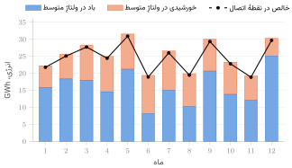
مثال 15.33 (مثالِ کارشده: از ۳۴۷٫۹ تا ۲۹۵٫۱ گیگاواتساعت) پرسش. موازنهٔ ماهانهٔ نیروگاهِ P را با مدلِ 15.1 بسازید: ناخالص و ولتاژِ متوسطِ هر فناوری، تلفِ برقی، مصرفِ داخلی، بُرش، قطعی و خالص؛ و جمعِ سالانه را آشتی دهید.
پاسخ. خروجیِ بالا و شکل 15.6: ناخالصِ باد 218.79 و خورشیدی 129.15 GWh (جمع 347.94)؛ در ولتاژِ متوسط 193.14 و 108.36؛ تلفِ برقی 3.29، مصرفِ داخلی 2.34، بُرش 0.23، قطعی 0.49؛ خالص 295.14 GWh؛ آشتی با اختلافِ صفر.
تفسیر. ماهها فرقِ زیادی دارند: ژوئن 18.9 و مه 30.9 GWh؛ دلیل باد است، نه خورشید (ماههای خورشیدی نزدیکِ هماند). این برای بهرهبردار (برنامهٔ نگهداری در ماههای کمباد، فصلِ ۵۲) و برای جریانِ نقدی (فصلِ ۲۱) مهم است. بزرگترین فاصلهٔ ناخالص و خالص پیش از ولتاژِ متوسط است (چگالی، دما، دنباله)؛ تلفهای نیروگاه کمتر از دو درصد. آشتیِ صفر یعنی زنجیره سالم است؛ اختلافِ غیرِ صفر یعنی یک گام انرژی را گم یا دو بار شمرده است. وارسی: \(193.14 + 108.36 - 3.29 - 2.34 - 0.23 - 0.49 = 295.15\) (درست، گرد شده).
- سه کارِ موازنهٔ ماهانه را بنویسید.
- چرا ماههای این نیروگاه اینقدر فرق دارند؟
- آشتیِ غیرِ صفر چه میگوید؟
15.5.2 آبشارِ تلف
ایده. آبشار همان زنجیره است در یک تصویر: انرژی پس از هر گام. درصدِ هر گام نسبت به انرژیِ ورودی به همان گام است و درصدها ضرب میشوند؛ جمعِ سادهشان کمی بیشتر از تلفِ واقعیِ کل است. یک گام ممکن است افزایش باشد (تصحیحِ بلندمدتِ باد).
loss waterfall (model 15.1), each step as % of the energy entering it:
wind gross, 1.225 kg/m3, free stream 218.79 GWh -0.00 %
wind air density at the hub 200.12 GWh -8.53 %
wind terrain (W2b) 199.56 GWh -0.28 %
wind wakes (W2b) 191.56 GWh -4.01 %
wind long-term correction 196.88 GWh +2.77 %
wind availability 193.14 GWh -1.90 %
total 11.73 % (product of steps); simple sum 11.95 %
pv POA at STC efficiency 129.15 GWh -0.00 %
pv IAM, temperature, low light 119.32 GWh -7.61 %
pv DC wiring and mismatch 115.74 GWh -3.00 %
pv inverter efficiency 113.82 GWh -1.66 %
pv clipping at 49 MW 113.03 GWh -0.69 %
pv soiling and shading 111.34 GWh -1.50 %
pv long-term correction 110.00 GWh -1.20 %
pv degradation, year 1 109.45 GWh -0.50 %
pv availability 108.36 GWh -1.00 %
total 16.10 % (product of steps); simple sum 17.16 %
plant wind + PV at MV 301.49 GWh -0.00 %
plant MV and transformer losses 298.20 GWh -1.09 %
plant own use 295.86 GWh -0.79 %
plant export limit 100 MW 295.63 GWh -0.08 %
plant grid outages 295.14 GWh -0.17 %
total 2.11 % (product of steps); simple sum 2.12 %
a correction can be a gain (long-term wind); percentages of
successive steps multiply and do not add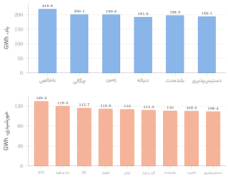
مثال 15.34 (چگالی، دما، دنباله) پرسش. آبشارِ تلفِ باد، خورشیدی و نیروگاه را بسازید و تلفِ کل را به دو روش (حاصلضربِ گامها و جمعِ ساده) مقایسه کنید.
پاسخ. خروجیِ بالا و شکل 15.7: باد: چگالی −8.53، زمین −0.28، دنباله −4.01، بلندمدت +2.77، دسترسپذیری −1.90 %؛ کل 11.73 در برابرِ جمعِ 11.95 %. خورشیدی: کل 16.10 در برابرِ 17.16 %. نیروگاه: 2.11 در برابرِ 2.12 %.
تفسیر. سه گامِ بزرگ همه فیزیکاند، نه مهندسیِ بد: چگالیِ کمِ ارتفاعِ 1200 m، دمای سلول در تابستان، دنبالهٔ توربینها. گامهایی که طراح کنترل میکند (اینورتر، بُرش، تلفِ برقی) هر کدام یک تا دو درصدند. این تقسیم برای گفتوگو با سرمایهگذار مهم است: «چرا 16 % تلف؟» پاسخش در همین جدول است. وارسی: باد: \(1 - 193.14/218.79 = 11.72\ \%\) (درست، گرد شده).
- درصدِ هر گامِ آبشار نسبت به چیست؟
- چرا جمعِ ساده بیشتر از تلفِ واقعی است؟
- سه تلفِ بزرگِ نیروگاهِ P کداماند و از کجا میآیند؟
15.5.3 دو فرض، دو نتیجه
ایده. مدل پر از فرض است. آزمونِ دو فرض یکی از تمرینهای اصلیِ بازبینی است: یک گام را با دو فرضِ معقول بسازید و ببینید نتیجه چقدر تکان میخورد. اینجا دو مورد از بخشِ پ را کنارِ هم میگذاریم: دسترسپذیری (ضریب یا ساعت) و گرد و غبار (ثابت یا فصلی) (مثال 15.15 و مثال 15.16). هر دو در انرژی کوچکاند و در چیزهای ساعتی (بُرش) بزرگتر؛ هر دو در گزارشِ مدل بهعنوانِ حساسیت ثبت میشوند.
- آزمونِ دو فرض چه چیزی را نشان میدهد؟
- دو فرضِ این آزمایشگاه را نام ببرید.
- حساسیتها کجا ثبت میشوند؟
15.5.4 مدل در برابرِ سالِ نخستِ بهرهبرداری
ایده. مدلِ تولید پس از ساخت کنار گذاشته نمیشود: مرجعِ مقایسه میشود. با تابش و بادِ اندازهگیریشدهٔ همان سال، مدل میگوید نیروگاه «باید» چقدر میداد؛ اختلاف با تولیدِ واقعی، خرابیها و فرضهای نادرست را نشان میدهد (فصلهای ۵۰ و ۵۲). شرطِ کار: همان مرز (اینجا ولتاژِ متوسط)، دادهٔ تمیز، و تفکیک بر حسبِ فناوری، ماه و واحد.
برای آموزش، یک سالِ نخستِ ساختگی ساخته شده است (A-271): تولیدِ مدل با نوفهٔ ساعتیِ 2 % در دادهٔ کنترل و پایش، و سه خرابیِ پنهان: توربینِ T07 در همهٔ سال 4 % زیرِ منحنیِ توان؛ یک بلوک از ده بلوکِ خورشیدی بیست روز از سوم مارس خاموش؛ نرخِ گرد و غبار از ژوئن یک و نیم برابرِ مدل.
first operating year against the model (A-271), at MV:
month wind act/model PV act/model plant act/model
1 0.998 1.001 0.999
2 0.997 1.001 0.998
3 0.998 0.940 0.977
4 0.997 1.001 0.999
5 0.995 1.000 0.997
6 0.998 0.995 0.996
7 0.996 0.993 0.995
8 0.997 0.992 0.994
9 0.996 0.991 0.994
10 0.998 0.994 0.996
11 0.995 0.992 0.994
12 0.998 0.991 0.996
year: plant 0.9945 (-0.55 %)
turbine energy against the fleet median: lowest T07 at 0.960,
others 1.000 to 1.001
the plant total hides three faults in a half per cent shortfall;
split by technology, month and unit, each one shows: the March
dip (PV block), the drift from June (soiling), one turbine lowمثال 15.35 (سه خرابی در نیم درصد) پرسش. نسبتِ تولیدِ واقعی به مدل را برای کلِ نیروگاه، برای هر فناوری در هر ماه، و برای هر توربین در برابرِ میانهٔ ناوگان بنویسید و هر خرابی را پیدا کنید.
پاسخ. خروجیِ بالا: کلِ سال 0.9945 (−0.55 %)؛ خورشیدی در مارس 0.940؛ خورشیدی از ژوئن بهتدریج از 0.995 تا 0.991؛ باد هر ماه حدودِ 0.997؛ توربینِ T07 0.960 و بقیه 1.000 تا 1.001.
تفسیر. اختلافِ نیم درصدی در کلِ سال درونِ عدمِ قطعیتِ هر مدلی است و بهتنهایی هیچ چیز نمیگوید. تفکیک همه را آشکار میکند: افتِ یکماههٔ خورشیدی (یک بلوک خاموش)، رانشِ آرامِ خورشیدی از ژوئن (گرد و غبارِ بیشتر از مدل: شستوشو یا فرضِ نرخ را بازبینی کنید، بخش 15.7)، و یک توربینِ پایین که در جمعِ باد فقط 0.3 % است اما در مقایسه با ناوگان 4 %. مقایسه با میانهٔ ناوگان به مدل نیاز ندارد و به خطای منبع حساس نیست. وارسی: \(1 - 0.04/12 = 0.9967\)، همان حدودِ 0.997ِ باد (درست).
اصلاحِ مدل برای «جور شدن» با سالِ نخست، پیش از یافتنِ علتِ اختلاف. اگر مدل را 0.55 % پایین بیاورید، سه خرابی پنهان میمانند و بیانیهٔ سالهای بعد هم نادرست میشود. اول علت، بعد (اگر لازم شد) نسخهٔ تازهٔ مدل با شاهد.
- سه شرطِ مقایسهٔ مدل با تولیدِ واقعی را بنویسید.
- چرا اختلافِ کلِ سال بهتنهایی کمارزش است؟
- مقایسه با میانهٔ ناوگان چه مزیتی بر مقایسه با مدل دارد؟
- رانشِ آرام و افتِ ناگهانی معمولاً نشانهٔ چه خرابیهاییاند؟
15.5.5 حساسیت: کدام ورودی بیشتر مهم است
ایده. آبشار (بخش 15.5.2) میگوید هر تلف چقدر است؛ حساسیت میگوید اگر یک ورودی در بازهٔ معقولش جابهجا شود، خالص چقدر تغییر میکند. هر بار یک ورودی به مقدارِ نامساعد و مساعدِ آموزشیاش (A-272) میرود و بقیه ثابت میمانند؛ نمودارِ گردباد ورودیها را به ترتیبِ اثر میچیند (فصلِ ۳). بازهها: ضریبِ بلندمدتِ بادی ±3 %، ضریبِ افتِ دنباله 0.04 و 0.075 (مثال 15.10)، دسترسپذیریِ بادی 97 و 99 %، ضریبِ بلندمدتِ خورشیدی ±2 %، مدلِ دمای سلول ±2 % (مثال 15.8)، گرد و غبار 2.0 و 1.0 %، دسترسپذیریِ خورشیدی 98 و 99.5 %، تلفِ بار 2.0 و 1.0 %، حدِ صادرات 95 و 105 MW.
net energy 295.14 GWh; change for the low and high value of each
input, one at a time (teaching ranges, A-272):
input low GWh high GWh
wind long-term factor -/+ 3 % -5.58 +5.54
PV long-term factor -/+ 2 % -2.05 +2.05
PV temperature model -/+ 2 % -2.05 +2.05
wind availability 97 / 99 % -2.08 +1.70
wake decay k 0.04 / 0.075 -0.68 +1.04
PV availability 98 / 99.5 % -1.04 +0.52
load losses 2.0 / 1.0 % -0.76 +0.76
export limit 95 / 105 MW -0.72 +0.34
soiling 2.0 / 1.0 % -0.59 +0.45
the wind resource leads by far; the PV resource, the PV
temperature model and wind availability follow at about 4 GWh
each from low to high; every other input moves less than 2 GWh;
the order depends on the ranges, so the ranges are evidence too
(chapter 16); it tells the owner what to measure better first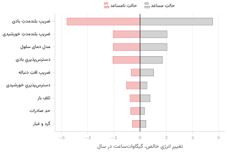
مثال 15.36 (یازده گیگاواتساعت از منبعِ باد) پرسش. تغییرِ خالص را برای نُه ورودی بنویسید، آنها را به ترتیبِ اثر بچینید و بگویید مالک کدام را باید اول بهتر بشناسد.
پاسخ. خروجیِ بالا و شکل 15.8: ضریبِ بلندمدتِ بادی −5.58 تا +5.54 GWh؛ ضریبِ بلندمدتِ خورشیدی و مدلِ دمای سلول هر کدام ±2.05؛ دسترسپذیریِ بادی −2.08 تا +1.70؛ بقیه هر کدام کمتر از 2 GWh از پایین تا بالا.
تفسیر. منبعِ باد با فاصله اول است: یک سالِ دیگر اندازهگیری یا یک مرجعِ بلندمدتِ بهتر (فصلِ ۱۳) بیش از هر بهبودِ دیگری عدمِ قطعیت را کم میکند. حدِ صادرات در این اندازه کماثر است (مثال 15.22) اما در بلوکِ بزرگتر نه. ترتیب به بازهها بستگی دارد؛ پس خودِ بازهها هم شاهد میخواهند و این همان کارِ فصلِ ۱۶ است. نمودارِ گردباد اثرِ همزمانِ چند ورودی را نشان نمیدهد؛ آن هم در فصلِ ۱۶ میآید. وارسی: \(3\ \% \times 193.14 \approx 5.8\ \text{GWh}\) در ولتاژِ متوسط؛ کمی کمتر در نقطهٔ اتصال پس از تلفها و قطعی (درست).
- حساسیت و آبشار چه فرقی دارند؟
- چرا ترتیبِ نمودارِ گردباد به بازهها بستگی دارد؟
- نمودارِ گردباد چه چیزی را نشان نمیدهد؟
- چرا اثرِ حدِ صادرات در این نیروگاه کوچک است؟
15.5.6 پلِ میانِ دو مدل
ایده. بازبین مدلِ خودش را میسازد و عددِ دیگری میگیرد. بهجای بحث بر سرِ دو عدد، یک پل (به انگلیسی bridge) ساخته میشود: از مدلِ A شروع کن، هر انتخابِ مدلِ B را یکی یکی اعمال کن و تغییرِ خالص را بنویس. اینجا مدلِ B (A-273): آسمانِ همسانگرد و مدلِ دمای کارِ اسمی (بهصورتِ ضریبِ 0.979 روی خورشیدی، میانبرِ آموزشی)، گرد و غبارِ 2.0 %، ضریبِ دنبالهٔ 0.075 و دسترسپذیریِ بادیِ 97 %؛ در دو ترتیب.
bridge from model A (295.14 GWh) to the reviewer's model B (289.23 GWh):
step PV first GWh wind first GWh
PV sky model (isotropic) -2.16 -2.12
PV temperature model (NOCT) -2.12 -2.15
PV soiling 2.0 % -0.58 -0.59
wake decay 0.075 +1.05 +1.03
wind availability 97 % -2.11 -2.08
sum -5.91 -5.91
the two orders give the same end and nearly the same steps:
the steps barely interact at this size; with a binding limit
or clipping, order matters and the bridge states the orderمثال 15.37 (شش گیگاواتساعت در پنج گام) پرسش. پل را از 295.14 تا عددِ مدلِ B بسازید و دو ترتیب را مقایسه کنید.
پاسخ. خروجیِ بالا: B برابرِ 289.23 GWh؛ گامها: آسمان −2.16، دما −2.12، گرد و غبار −0.58، دنباله +1.05، دسترسپذیری −2.11 GWh؛ در ترتیبِ وارون اختلافِ هر گام حداکثر 0.04 GWh.
تفسیر. اختلافِ 2 % دو مدل از پنج انتخاب میآید که هر کدام با شاهد قابلِ بحث است؛ یکی (دنباله) حتی در جهتِ مخالف است. گفتوگو حالا بر سرِ هر گام است: کدام مدلِ آسمان برای این اقلیم معتبر است، کدام ضریبِ دنباله با مزرعههای مشابه جور است. در این نیروگاه گامها تقریباً مستقلاند؛ با حدِ صادراتِ فعال یا بُرشِ زیاد ترتیب مهم میشود و پل ترتیب را مینویسد. وارسی: جمعِ گامها −5.91 و \(295.14 - 289.23 = 5.91\) (درست).
- پل میانِ دو مدل چیست و چرا بهتر از مقایسهٔ دو عدد است؟
- چرا ترتیبِ گامها اینجا کماثر است؟
- چه وقت ترتیب مهم میشود؟
15.5.7 خطاهای رایجِ مدلهای تولید
ایده. فهرستِ زیر خطاهایی است که در این فصل دیدیم، با نشانه و وارسیِ هر کدام. پیش از انتشارِ هر نسخهٔ مدل، آن را مرور کنید.
| خطا | نشانه | وارسی | درس |
|---|---|---|---|
| جمع کردنِ درصدها | جمعِ تلفها با تلفِ کل نمیخواند | ضربِ ضریبها | بخش 15.4.1 |
| برچسبِ زمانِ جابهجا | قلهٔ خورشیدی در ساعتِ نادرست | ساعتِ قله، همبستگی | بخش 15.2.5 |
| شمارشِ دوباره | تلف در دو گام | آبشار و موازنه | بخش 15.4.5 |
| دسترسپذیریِ زمانی بهجای انرژیمحور | انرژی بیش از واقع | تعریفِ قرارداد | بخش 15.4.16 |
| مقیاس کردنِ یک سال | بُرش و تلفهای کوژ کم | اجرای چند سال | بخش 15.4.13 |
| توزیع بهجای سری | بی بُرش و همزمانی | سریِ ساعتی | بخش 15.3.7 |
| ضریبِ ثابتِ تلفِ برقی | خطای ساعتهای پر | شکلِ مربعی | بخش 15.4.8 |
| سالِ نامشخص | سالِ اول یا میانگینِ عمر؟ | بیانیه سال را میگوید | بخش 15.4.6 |
| بُرشِ شبکه در دسترسپذیری | تجهیزات بد به نظر میرسند | ردیفِ جدا | بخش 15.4.9 |
| نشتِ داده در پیشبینی | آزمونِ بسیار خوب | تقسیمِ زمانی | بخش 15.6.6 |
| دادهٔ بیبرچسب | سوگیریِ منفی | برچسبِ قطعی | بخش 15.6.15 |
| همادِ کالیبرهنشده | ذخیرهٔ کم | نمودارِ رتبه | بخش 15.6.10 |
- سه خطا را که با آزمونِ موازنه پیدا میشوند نام ببرید.
- کدام خطاها فقط با دادهٔ ساعتی دیده میشوند؟
- برای هر خطای پیشبینی در جدول، یک وارسی بنویسید.
15.5.8 مدلِ ماهانهٔ صفحهگسترده در برابرِ مدلِ ساعتی
ایده. بسیاری از برآوردهای نخستین با صفحهگستردهٔ ماهانه ساخته میشوند: خورشیدی برابرِ تابشِ ماهانهٔ صفحه ضربِ توانِ نامی ضربِ یک نسبتِ عملکردِ سالانه؛ بادی از وایبولِ هر ماه ضربِ یک ضریبِ سالانه برای زمین، دنباله و دسترسپذیری؛ و یک درصد برای تلفِ برقی. سنجشِ آن با مدلِ ساعتی نشان میدهد کجا کار میکند و کجا نه.
a monthly spreadsheet model against the hourly model (GWh):
month PV monthly PV hourly wind monthly wind hourly
1 5.99 6.33 15.48 15.89
2 6.93 7.28 17.23 18.35
3 10.02 10.26 17.52 18.00
4 10.39 10.37 14.41 14.59
5 10.57 10.34 20.63 21.22
6 11.67 11.25 8.52 8.15
7 12.01 11.55 14.11 15.04
8 10.07 9.67 10.50 10.23
9 9.52 9.41 20.04 20.68
10 9.30 9.44 13.65 13.83
11 6.94 7.20 12.36 12.06
12 4.95 5.24 24.79 25.08
wind: monthly 189.25, hourly 193.14 GWh (-2.0 %); PV: equal sums
MV total: monthly 297.60, hourly 301.49 GWh
net: monthly 292.01 GWh (no limit, no import, no outage), hourly 295.14 GWh
with one annual PR the monthly PV runs about 4 % high in summer
and 5 % low in winter while the year agrees by construction;
the wind is low only because of the monthly Weibull fits (the
hourly speeds with the same annual factor give the hourly sum);
and a monthly model cannot see clipping, the limit, import or
storageمثال 15.38 (سالِ درست، ماههای نادرست) پرسش. خورشیدی و بادیِ ماهانه را در دو مدل مقایسه کنید و خالصِ سالانه را بنویسید.
پاسخ. خروجیِ بالا: خورشیدی در ژانویه 5.99 در برابرِ 6.33 و در ژوئیه 12.01 در برابرِ 11.55 GWh، جمعِ سالانه برابر؛ بادِ سالانه 189.25 در برابرِ 193.14 GWh (−2.0 %)؛ خالص 292.01 در برابرِ 295.14 GWh.
تفسیر. نسبتِ عملکردِ سالانه از خودِ مدلِ ساعتی آمده است، پس جمعِ سالانهٔ خورشیدی به حکمِ ساخت درست است، اما تابستان حدودِ 4 % زیاد و زمستان حدودِ 5 % کم است (مثال 15.13). خطای باد فقط از وایبولهای ماهانه است: با تندیهای ساعتی و همان ضریبِ سالانه، جمع درست درمیآید. صفحهگسترده برای غربال و وارسیِ مدلِ اصلی خوب است، اما بُرش، حدِ صادرات، برداشت و ذخیره را نمیبیند و برای بیانیهٔ تولید کافی نیست. وارسی: \(189.25 / 193.14 = 0.980\).
- سه سادهسازیِ مدلِ ماهانه را بنویسید.
- چرا جمعِ سالانهٔ خورشیدی در هر دو مدل برابر است؟
- چهار چیزی را که مدلِ ماهانه نمیبیند نام ببرید.
15.5.9 گزارشِ تولید: ساختار و خواننده
ایده. مدلِ خوب بی گزارشِ خوب به کار نمیآید. خوانندگان: مالک (تصمیمِ سرمایهگذاری)، وامدهنده و مهندسِ مستقلِ او (بازبینی، فصلِ ۱۶)، بهرهبردار (مقایسه با تولیدِ واقعی، بخش 15.5.4)، و طراحانِ فصلهای بعد. هر کدام بخشی را میخوانند؛ گزارش باید هر عدد را به منبع، نسخه و مرز برساند.
| بخش | محتوا | آنچه بازبین میسنجد |
|---|---|---|
| ورودیها | سریهای زمانی، منبع، تفکیک، دورهٔ داده | منبع، کیفیت، همترازیِ زمانی |
| پایههای بلندمدت | روشِ تصحیح (D-016، D-017) | دورهٔ مرجع، همگنی، روش |
| مرزها و زنجیره | سه مرز، گامها به ترتیب | ترتیب، شمارشِ دوباره |
| تجهیزات و چیدمان | ماژول، اینورتر، توربین، چیدمان | برگهٔ داده، منحنیِ توان، نسخهٔ چیدمان |
| تلفها | دفترِ تلفها، آبشار | شاهدِ هر ردیف، روش |
| موازنه | موازنهٔ ماهانه، آشتی | اختلافِ صفر، یکاها |
| حساسیتها | گردباد، دو فرض | بازهها و شاهدشان |
| بیانیه | P50 در نقطهٔ اتصال، سالِ اول و میانگینِ عمر | سال، مرز، سناریو |
| محدودیتها | آنچه مدل نمیبیند، مجهولها | صراحت |
| پیوستها | پیکربندی، چکیده، تغییرنامه | بازتولیدپذیری |
گزارشی که فقط عددِ نهایی و آبشار را دارد. بازبین نمیتواند آن را بازتولید کند، پس به آن اعتماد نمیکند و تلفِ «احتیاطیِ» خودش را میافزاید. پیکربندی، چکیده و نسخه (بخش 15.2.6) ارزانترین راهِ اعتمادند.
- چهار خوانندهٔ گزارشِ تولید را با نیازشان نام ببرید.
- چرا بخشِ «محدودیتها» لازم است؟
- بازبین در بخشِ تلفها چه میسنجد؟
15.6 ث. پیشبینیِ کوتاهمدت و اعتبارسنجی
15.6.1 از ارزیابیِ بلندمدت تا پیشبینیِ فردا
ایده. بیانیهٔ تولید میگوید یک سالِ میانگین چقدر میدهد؛ بهرهبردار باید بداند فردا ساعتبهساعت چقدر. پیشبینیِ کوتاهمدت برای عرضه در بازار یا برنامهٔ شبکه (روزِ بعد)، برای اصلاح در طولِ روز (چند ساعت آینده) و برای کنترلِ لحظهای (دقیقهها) به کار میرود (فصلهای ۱۹ و ۳۴). محصولها: قطعی (یک عدد برای هر ساعت) یا احتمالاتی (توزیع یا کمیتها: P10، P50، P90). افقها: دقیقهای (تصویرِ آسمان، دادهٔ زنده)، چندساعته (تصویرِ ماهوارهای، مدلهای آماری)، روزِ بعد و بیشتر (مدلهای عددیِ هوا).
منبعها و روشها. ماندگاری: فردا همان امروز، یا ساعتِ بعد همان این ساعت. ماندگاریِ هوشمند: ثابت نگه داشتنِ چیزی که پایدارتر است (شاخصِ صافیِ آسمان بهجای توان). مدلهای عددیِ هوا: پیشبینیِ باد و تابش برای ساعتهای آینده که با یک مدلِ نیروگاه به توان تبدیل و اغلب با آمار تصحیح میشوند. تصویرِ آسمان و ماهواره: حرکتِ ابرها برای دقیقهها تا چند ساعت، جایی که در دسترس است. همادِ پیشبینی (چند اجرای مدل با شرایطِ آغازِ کمی متفاوت): پراکندگیِ آنها نشانهٔ عدمِ قطعیت است. یادگیریِ ماشینی یک روش است، نه معجزه: باید از خطِ پایه بهتر باشد و بی نشتِ داده آزموده شود.
- سه افقِ پیشبینی و کاربردشان را بنویسید.
- محصولِ قطعی و احتمالاتی چه فرقی دارند؟
- همادِ پیشبینی چه اطلاعاتی میدهد؟
15.6.2 آرشیوِ پیشبینی و آزمونِ منصفانه
ایده. برای آموختن، یک آرشیوِ ساختگی از پیشبینیهای نیروگاهِ P ساختهایم (A-267): خطای تندیِ باد که با افق بزرگ میشود و در زمستان بیشتر است، خطای زمانبندیِ رمپها، و خطای شاخصِ صافی برای خورشیدی. این آرشیو هیچ محصولِ واقعی را ارزیابی نمیکند. آزمونِ منصفانه یعنی: آموزش (هر تصحیح یا کمیتی که از داده یاد گرفته میشود) فقط روی ژانویه تا اوت، آزمون روی سپتامبر تا دسامبر؛ و هیچ ورودیای که در زمانِ صدور پیشبینی ناشناخته است.
def persistence(obs, horizon: int) -> np.ndarray:
"""Forecast for t + h is the observation at t (NaN where unknown)."""
o = np.asarray(obs, float)
f = np.full_like(o, np.nan)
f[horizon:] = o[:-horizon] if horizon else o
return f
def smart_persistence(obs, clear, horizon: int) -> np.ndarray:
"""Persist the clear-sky index (or capacity factor ratio) instead of
the value: forecast = clear(t + h) x obs(t) / clear(t)."""
o, c = np.asarray(obs, float), np.asarray(clear, float)
k = np.where(c > 1e-6, o / np.maximum(c, 1e-6), 0.0)
f = np.full_like(o, np.nan)
f[horizon:] = c[horizon:] * k[:-horizon]
return f
def scores(fc, obs, mask=None) -> dict:
"""Bias, MAE and RMSE over the finite pairs (and an optional mask)."""
f, o = np.asarray(fc, float), np.asarray(obs, float)
ok = np.isfinite(f) & np.isfinite(o)
if mask is not None:
ok &= np.asarray(mask, bool)
e = f[ok] - o[ok]
return {"bias": float(e.mean()), "mae": float(np.abs(e).mean()),
"rmse": float(np.sqrt(np.mean(e ** 2))), "n": int(ok.sum())}
def skill(score: float, reference: float) -> float:
"""Skill against a reference: 1 - score / reference (1 is perfect,
0 no better than the reference, negative worse)."""
return 1.0 - score / reference
def pinball(q_fc, obs, tau: float) -> float:
"""Mean pinball (quantile) loss of a tau-quantile forecast."""
q, o = np.asarray(q_fc, float), np.asarray(obs, float)
ok = np.isfinite(q) & np.isfinite(o)
d = o[ok] - q[ok]
return float(np.mean(np.maximum(tau * d, (tau - 1) * d)))
def coverage(lo, hi, obs) -> float:
"""Share of observations inside a forecast interval."""
lo, hi, o = (np.asarray(x, float) for x in (lo, hi, obs))
ok = np.isfinite(lo) & np.isfinite(hi) & np.isfinite(o)
return float(np.mean((o[ok] >= lo[ok]) & (o[ok] <= hi[ok])))
def ramps(series, threshold: float, window: int = 1) -> np.ndarray:
"""Ramp events: change over `window` steps larger than threshold
(+1 up, -1 down, 0 none)."""
s = np.asarray(series, float)
d = np.full_like(s, 0.0)
d[window:] = s[window:] - s[:-window]
return np.where(d > threshold, 1, np.where(d < -threshold, -1, 0))
def ramp_table(obs_events, fc_events) -> dict:
"""Hits, misses and false alarms of ramp events (same sign, same step)."""
o, f = np.asarray(obs_events), np.asarray(fc_events)
hits = int(np.sum((o != 0) & (f == o)))
misses = int(np.sum((o != 0) & (f != o)))
false = int(np.sum((o == 0) & (f != 0)))
pod = hits / max(hits + misses, 1)
far = false / max(hits + false, 1)
return {"hits": hits, "misses": misses, "false": false,
"pod": pod, "far": far}- چرا آموزش و آزمون باید از نظرِ زمانی جدا باشند؟
- «زمانِ صدور» چیست و چرا مهم است؟
- آرشیوِ ساختگی برای چه کاری مناسب و برای چه کاری نامناسب است؟
15.6.3 خطا بر حسبِ افق
ایده. هر روش با خطِ پایه مقایسه میشود. معیارها: سوگیری (میانگینِ خطا)، میانگینِ قدرِ مطلقِ خطا، جذرِ میانگینِ مربعات (حساس به خطاهای بزرگ)، همه به درصدِ ظرفیت تا نیروگاهها مقایسهپذیر شوند، و مهارت: \(1 - \text{RMSE}/\text{RMSE}_\text{ref}\).
forecast error of the hybrid output on the test months (Sep-Dec),
RMSE in % of the 110 MW installed:
lead h persistence smart pers. weather-driven skill
1 8.3 7.0 7.1 -0.01
3 16.3 12.2 7.5 +0.38
6 23.8 18.4 7.8 +0.57
12 27.8 23.8 8.3 +0.65
24 23.7 23.7 9.7 +0.59
36 32.5 28.9 12.1 +0.58
persistence is hard to beat for the next hour or two; the
weather-driven forecast wins from a few hours on, because it
knows the weather to come; smart persistence (the clear-sky
index for PV) beats plain persistence once the sun moves;
skill is against the better baseline at each lead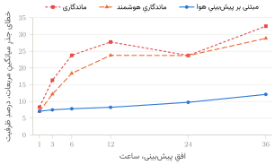
مثال 15.39 (ماندگاری در ساعتِ نخست) پرسش. خطای پیشبینیِ هیبرید را برای افقهای یک تا سیوشش ساعت با سه روش روی ماههای آزمون حساب کنید.
پاسخ. خروجیِ بالا و شکل 15.9: در یک ساعت، ماندگاریِ هوشمند 7.0 % و پیشبینیِ هوا 7.1 % (مهارت تقریباً صفر)؛ از سه ساعت به بعد پیشبینیِ هوا 7.5 تا 12.1 % و مهارتِ 0.4 تا 0.65؛ ماندگاریِ بیستوچهارساعته 23.7 % (همان ساعتِ دیروز) از دوازدهساعته بهتر است.
تفسیر. سه درس: (الف) برای ساعتِ بعد، شکست دادنِ ماندگاری سخت است؛ هر ادعای «پیشبینیِ بهتر» برای افقِ کوتاه باید این را نشان دهد. (ب) ماندگاریِ بیستوچهارساعته چرخهٔ روزانه را دارد و برای همین از دوازدهساعته بهتر است؛ خطِ پایهٔ درست به افق بستگی دارد. (ج) خطای پیشبینیِ هوا با افق آهسته رشد میکند. وارسی: E12: مهارتِ \(1 - 8.3/23.8 = 0.65\) در افقِ دوازده ساعت (درست).
- مهارت را تعریف کنید.
- چرا ماندگاری برای افقِ یک ساعت سخت شکست میخورد؟
- چرا ماندگاریِ بیستوچهارساعته از دوازدهساعته بهتر است؟
15.6.4 خطا بر حسبِ فناوری
ایده. خطای خورشیدی را باید فقط در ساعتهای روشن سنجید؛ صفرهای شب هر پیشبینی را خوب نشان میدهند. خطای هیبرید از جمعِ خطاها کمتر است چون خطاهای دو فناوری کاملاً همبسته نیستند.
day-ahead (lead 24 h) error by technology on the test months:
output bias MW MAE MW RMSE MW RMSE % of rating
wind +0.42 6.70 10.42 17.4
PV, daylight -0.42 3.10 4.29 8.6
hybrid +0.23 7.27 10.72 9.7
PV errors are scored on daylight hours only (night zeros make
any forecast look good); the hybrid error is less than the sum
of its parts because their errors are not fully correlatedمثال 15.40 (هفده درصد باد، نه درصد هیبرید) پرسش. خطای پیشبینیِ روزِ بعد را برای باد، خورشیدی (روز) و هیبرید جدا حساب کنید.
پاسخ. خروجیِ بالا: جذرِ میانگینِ مربعات 17.4 % ظرفیتِ باد، 8.6 % ظرفیتِ خورشیدی، 9.7 % ظرفیتِ هیبرید.
تفسیر. خطای باد بزرگترین است و خطای هیبرید را تعیین میکند. نسبت به ظرفیتِ خودش، هیبرید (9.7 %) بسیار پیشبینیپذیرتر از باد (17.4 %) است، هرچند نه از خورشیدیِ ساعتهای روشن (8.6 %): یکی از سودهای عملیاتیِ نیروگاهِ هیبریدی. وارسی: اگر خطاها کاملاً همبسته بودند، \(10.42 + 4.29 = 14.7\ \text{MW}\) (بیش از 10.72 واقعی، درست).
- چرا خطای خورشیدی در شب سنجیده نمیشود؟
- چرا خطای هیبرید کمتر از جمعِ خطاهاست؟
- کدام فناوری خطای هیبرید را تعیین میکند؟
15.6.5 پیشبینیِ احتمالاتی: کمیتها، پوشش و پینبال
ایده. پیشبینیِ احتمالاتی بازه میدهد: P10 یعنی نُه دهمِ وقتها توان بیشتر از آن است. ارزیابی دو بخش دارد: پوشش (چه سهمی از مشاهدهها درونِ بازهٔ P10 تا P90 افتاد؟ هدف 80 %) و زیانِ پینبال (برای هر کمیت، جریمهای نامتقارن که هر دو تیزی و درستی را میسنجد):
\[ L_\tau(q, y) = \max\{\tau (y - q),\ (\tau - 1)(y - q)\} . \tag{15.12}\]
day-ahead P10-P90 interval of the hybrid output (lead 24 h), test
months Sep-Dec:
quantiles learned from coverage pinball P10 / P90 mean width
train months (fair) 78.7 % 1.93 / 1.87 21.3 MW
the test months (leak) 80.0 % 1.90 / 1.87 22.0 MW
train, by forecast level 79.0 % 1.86 / 1.79 22.5 MW
the target coverage is 80 %; quantiles fitted on the test
months hit it by construction: perfect-looking and meaningless
(leakage); the fair interval from the past covers a little
less; letting the width depend on the forecast level (narrow
in calm hours, wide near mid-power) lowers the pinball loss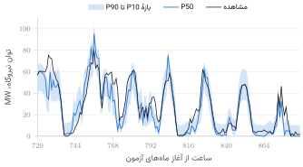
مثال 15.41 (هشتاد درصدی که خیلی خوب است) پرسش. بازهٔ P10 تا P90ِ پیشبینیِ روزِ بعد را سه بار بسازید: کمیتهای خطا از ماههای آموزش، کمیتها از خودِ ماههای آزمون، و کمیتهای آموزش بر حسبِ سطحِ پیشبینی؛ پوشش، پینبال و پهنای میانگین را روی ماههای آزمون حساب کنید.
پاسخ. خروجیِ بالا و شکل 15.10: پوشش 78.7، 80.0 و 79.0 %؛ پینبالِ P90: 1.87، 1.87 و 1.79.
تفسیر. بازهای که روی ماههای آزمون ساخته شده دقیقاً 80 % را میپوشاند: کامل بهنظر میرسد و بیمعناست، چون آزمون را دیده است. بازهٔ منصفانه کمی کمپوشش است؛ بازهای که پهنایش با سطحِ پیشبینی عوض میشود (باریک در ساعتهای آرام، پهن در توانِ میانه) پینبال را کمتر میکند. وارسی: E13: پیشبینیِ 40 و مشاهدهٔ 30 با \(\tau = 0.1\): \(\max(0.1 \times (-10), -0.9 \times (-10)) = 9.0\).
- پوشش و پینبال چه چیزهایی را میسنجند؟
- چرا بازهٔ ساختهشده روی آزمون بیمعناست؟
- چرا پهنای بازه باید با سطحِ پیشبینی تغییر کند؟
15.6.6 نشتِ داده
ایده. نشت یعنی اطلاعاتی که در زمانِ صدورِ پیشبینی در دسترس نیست وارد آموزش یا ارزیابی شود. دو شکلِ رایج: ویژگیِ ناشناخته (مثلاً مشاهدهٔ ساعتِ قبل برای پیشبینیِ روزِ بعد) و تقسیمِ تصادفی (ساعتهای همسایه که بسیار همبستهاند، یکی در آموزش و دیگری در آزمون).
data leakage in a learned correction of the day-ahead forecast:
model RMSE test MW
raw day-ahead forecast 10.72
corrected, trained Jan-Aug, tested Sep-Dec 10.38
+ last hour's observation, random split 7.20
+ last hour's observation, time split 7.59
the last hour's observation is not known a day ahead: any
model that uses it scores well in a test and cannot run in
operation; a random split also lets neighbouring hours leak
into the test; features must exist at the issue timeمثال 15.42 (سی درصد بهبودی که وجود ندارد) پرسش. یک تصحیحِ خطی روی پیشبینیِ روزِ بعد بسازید؛ یک بار فقط با خودِ پیشبینی، یک بار با مشاهدهٔ ساعتِ قبل، با تقسیمِ زمانی و تصادفی.
پاسخ. خروجیِ بالا: خام 10.72، تصحیحشده 10.38 MW؛ با مشاهدهٔ ساعتِ قبل 7.20 (تصادفی) و 7.59 MW (زمانی).
تفسیر. مدلی که مشاهدهٔ ساعتِ قبل را میخواهد سی درصد «بهتر» است، اما در روزِ قبل آن مشاهده وجود ندارد: در بهرهبرداری اجرا نمیشود. تقسیمِ تصادفی کمی بیشتر فریب میدهد. بیشترِ ادعاهای اغراقآمیزِ یادگیریِ ماشینی در پیشبینیِ انرژی از همین دو نشتاند. قاعده: هر ویژگی با برچسبِ زمانِ دسترسی، و آزمون با تقسیمِ زمانی. وارسی: \(1 - 7.20/10.38 = 0.31\) (درست).
- دو شکلِ نشتِ داده را تعریف کنید.
- چرا تقسیمِ تصادفی در سریهای زمانی فریب میدهد؟
- هر ویژگی چه برچسبی باید داشته باشد؟
15.6.7 رمپها
ایده. رمپ تغییرِ بزرگِ توان در زمانِ کوتاه است (اینجا بیش از 15 MW در یک ساعت). برای بهرهبردار، رمپی که پیشبینی نشده از خطای میانگین مهمتر است. سنجهها: احتمالِ کشف (سهمِ رمپهای دیدهشده) و نسبتِ هشدارِ نادرست. پیشبینیای که رمپ را یک ساعت دیر ببیند در خطای میانگین کمی بد است، اما در جدولِ رمپ یک «از دست رفته» و یک «هشدارِ نادرست» میگیرد.
hybrid ramps above 15 MW in one hour on the test months:
observed ramps: 324
forecast hits misses false POD FAR
persistence, 1 h 34 290 258 0.10 0.88
weather-driven, 1 h 131 193 193 0.40 0.60
weather-driven, 24 h 139 185 278 0.43 0.67
persistence only repeats a ramp one hour late, so it catches
few; the weather-driven forecasts see many more, but often an
hour early or late (timing errors) and with false alarms;
ramp skill is scored separately from RMSEمثال 15.43 (زمانبندی، نه بزرگی) پرسش. رمپهای هیبرید در ماههای آزمون را با ماندگاری و پیشبینیِ هوا (یک و بیستوچهار ساعت) مقایسه کنید.
پاسخ. خروجیِ بالا: 324 رمپ؛ ماندگاری احتمالِ کشفِ 0.10؛ پیشبینیِ هوا 0.40 و 0.43 با هشدارِ نادرستِ 0.60 و 0.67.
تفسیر. ماندگاری رمپ را فقط یک ساعت دیر تکرار میکند. پیشبینیِ هوا بیشترِ رمپها را «میبیند» اما با خطای زمانبندی؛ برای همین سنجهٔ رمپ را با بازهٔ زمانیِ مجاز (مثلاً یک ساعت پیش و پس) هم گزارش میکنند. وارسی: \(139/(139 + 185) = 0.43\) (درست).
- احتمالِ کشف و نسبتِ هشدارِ نادرست را تعریف کنید.
- چرا ماندگاری رمپ را دیر میبیند؟
- بازهٔ زمانیِ مجاز در سنجهٔ رمپ چه کاری میکند؟
15.6.8 رانش و بازآموزی
ایده. رابطهٔ پیشبینی و مشاهده با فصل، با تغییرِ مدلِ هوا و با تغییرِ نیروگاه (توربینی که خاموش است، ماژولِ کثیف) عوض میشود. تصحیحی که روی چند ماه یاد گرفته شده در ماههای بعد رانش میکند.
bias of the corrected day-ahead forecast by month (fit Jan-Aug):
month bias MW
Sep -0.69
Oct -0.64
Nov +1.41
Dec -0.39
the bias of a correction learned in one season changes from
month to month in the next (here by about a megawatt, with
changing sign): the validation reports the error by month and
the model is retrained on a rolling windowمثال 15.44 (علامتی که عوض میشود) پرسش. سوگیریِ پیشبینیِ تصحیحشده (آموزش ژانویه تا اوت) را برای هر ماهِ آزمون بنویسید.
پاسخ. خروجیِ بالا: سپتامبر −0.69، اکتبر −0.64، نوامبر +1.41، دسامبر −0.39 MW.
تفسیر. سوگیری کوچک است اما ثابت نیست؛ گزارشِ اعتبارسنجی آن را ماهبهماه میدهد و مدل روی پنجرهٔ غلتان دوباره آموزش میبیند. دادهٔ واقعیِ نیروگاه (دسترسپذیری، بُرشِ دستوری) هم باید از دادهٔ آموزش کنار گذاشته یا مدل شود، وگرنه پیشبینی خاموشیها را «یاد میگیرد». وارسی: میانگینِ چهار ماه نزدیکِ صفر است (درست).
- سه علتِ رانش را نام ببرید.
- پنجرهٔ غلتان چیست؟
- چرا دادهٔ بُرشِ دستوری باید از آموزش کنار گذاشته شود؟
15.6.9 منبعهای پیشبینی بر حسبِ افق
ایده. هیچ منبعی در همهٔ افقها بهترین نیست. هر منبع چیزی را میداند که دیگری نمیداند:
| منبع | آنچه میداند | افقِ سودمند | ضعف |
|---|---|---|---|
| دادهٔ زندهٔ نیروگاه (ماندگاری) | وضعِ همین حالا | دقیقهها تا حدودِ یک ساعت | تغییر را نمیبیند |
| تصویرِ آسمان از زمین | ابرهایی که به خورشید نزدیک میشوند | دقیقهها | فقط خورشیدی، میدانِ دیدِ کوچک |
| تصویرِ ماهوارهای | حرکتِ ابرها در منطقه | دهها دقیقه تا چند ساعت | ابرِ تازهساز را نمیبیند |
| مدلِ عددیِ هوا | فیزیکِ جوّ در منطقه | چند ساعت تا چند روز | خطای زمان و مکان، تفکیکِ درشت |
| همادِ مدلِ عددی | پراکندگیِ آیندهٔ ممکن | چند ساعت تا چند روز | اغلب کمپراکنده، کالیبره کردن لازم |
| تصحیحِ آماری | خطای منظمِ گذشته در این ساختگاه | همهٔ افقها | فقط آنچه در دادهٔ آموزش بوده |
برای افقِ چندساعته، ترکیبِ منبعها معمولاً بهتر از هر یک است (بخش 15.6.13). آرشیوِ این فصل ساعتی است و تصویرِ آسمان و ماهواره را شبیهسازی نمیکند؛ آنها برای کنترلِ لحظهای و ذخیره در فصلِ ۳۴ میآیند.
- برای افقِ ده دقیقه و افقِ روزِ بعد کدام منبعها مناسباند؟
- چرا تصویرِ ماهوارهای ابرِ تازهساز را نمیبیند؟
- تصحیحِ آماری چه محدودیتی دارد؟
15.6.10 همادِ پیشبینی و کالیبره کردنِ آن
ایده. هماد چند اجرای مدلِ هوا با شرایطِ آغازِ کمی متفاوت است؛ هر عضو یک آیندهٔ ممکن. اگر هماد خوب کالیبره باشد، مشاهده مانندِ یک عضوِ دیگر است: رتبهاش میانِ اعضا هر مقداری را با احتمالِ برابر میگیرد. نمودارِ رتبه (به انگلیسی rank histogram) این را میآزماید: با \(M\) عضو، \(M + 1\) رتبه، هر کدام با سهمِ \(1/(M+1)\). شکلِ U یعنی مشاهده بیش از حد بیرون از هماد میافتد (کمپراکنده)؛ شکلِ گنبد یعنی پرپراکنده. آزمونِ دوم پراکندگی–مهارت (به انگلیسی spread–skill) است: آیا پراکندگیِ بیشتر با خطای بزرگتر همراه است؟ اگر هست، پراکندگی اطلاعات دارد.
یک همادِ ساختگیِ بیستعضوی برای پیشبینیِ روزِ بعد ساخته شده است (A-270): اعضا 70 % از واریانسِ خطا را با هم شریکاند و فقط 30 % را جدا دارند؛ پس عمداً کمپراکنده است. کالیبره کردن: پراکندگیِ اعضا گردِ میانگین با یک ضریب بزرگ میشود که روی ماههای آموزش برازش شده است.
a 20-member ensemble of the day-ahead hybrid forecast (A-270):
test months: RMSE of the ensemble mean 8.92 MW; mean spread 4.82 MW
spread inflation fitted on the training months: x 1.51
rank of the observation among the members (21 ranks, flat = 4.8 %):
raw ensemble: lowest 16.4 %, highest 10.1 %, middle 3.4 %
inflated ensemble: lowest 6.1 %, highest 5.1 %, middle 4.3 %
spread-skill (test): spread quartile mean spread RMSE of mean
0.0- 2.1 0.90 3.87
2.1- 4.5 3.32 6.67
4.5- 7.2 5.75 10.09
7.2- 16.3 9.33 12.54
a U-shaped rank histogram means the truth falls outside the
ensemble too often: the members agree more than they should;
inflating the spread on past data flattens it; more spread does
go with larger errors, so the spread carries information
CRPS on the test months: raw 4.55 MW, inflated 4.50 MW;
ensemble mean as a point forecast (MAE) 6.06 MW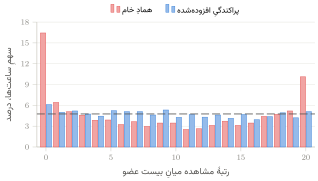
مثال 15.45 (شانزده درصد در پایینترین رتبه) پرسش. نمودارِ رتبهٔ همادِ خام و کالیبره را روی ماههای آزمون بسازید و رابطهٔ پراکندگی و خطا را در چهار چارکِ پراکندگی بنویسید.
پاسخ. خروجیِ بالا و شکل 15.11: میانگینِ هماد خطای 8.92 MW دارد اما پراکندگیِ میانگینش 4.82 MW است؛ ضریبِ افزایشِ برازششده 1.51؛ همادِ خام مشاهده را در 16.4 % ساعتها زیرِ همهٔ اعضا و در 10.1 % بالای همه میبیند (یکنواخت: 4.8 %)؛ پس از کالیبره کردن 6.1 و 5.1 %. خطا از 3.87 در کمپراکندهترین چارک به 12.54 MW در پرپراکندهترین میرسد.
تفسیر. همادِ خام بیش از حد مطمئن است: اعضا بیش از آنچه باید با هم موافقاند. اگر ذخیره را از پراکندگیِ خام بسازید، کم ذخیره میگیرید. ضریبی که فقط روی گذشته برازش شده، نمودار را تقریباً صاف میکند و در ماههای آزمون هم کار میکند. پراکندگی اطلاعات دارد: ساعتهای پرپراکنده بیش از سه برابرِ خطای ساعتهای آرام را دارند؛ ذخیره را میتوان ساعت به ساعت با پراکندگی تنظیم کرد (بخش 15.8.2). وارسی: \(1/21 = 4.8\ \%\)؛ پس از کالیبره کردن دو سرِ نمودار 6.1 و 5.1 % است، هنوز کمی U: ضریبی که از گذشته آمده برای آینده کامل نیست.
امتیازِ احتمالاتی. نمودارِ رتبه شکل را میآزماید و پراکندگی–مهارت اطلاعات را؛ برای یک عدد که هم درستی و هم تیزی را بسنجد، امتیازِ احتمالاتیِ رتبهایِ پیوسته (به انگلیسی continuous ranked probability score، CRPS) به کار میرود. برای هماد:
\[ \text{CRPS} = \frac{1}{M}\sum_{i} \left| x_i - y \right| \; - \; \frac{1}{2M^2} \sum_{i}\sum_{j} \left| x_i - x_j \right| \tag{15.13}\]
که \(x_i\) اعضا و \(y\) مشاهدهاند؛ یکایش یکای توان است و برای پیشبینیِ تکعددی برابرِ میانگینِ قدرِ مطلقِ خطا میشود، پس دو نوع پیشبینی را میشود با هم مقایسه کرد. خروجیِ بالا: 4.55 MW برای همادِ خام، 4.50 MW پس از کالیبره کردن، و 6.06 MW میانگینِ قدرِ مطلقِ خطای میانگینِ هماد. توزیع حدودِ یکچهارم بهتر از یک عدد است؛ کالیبره کردن شکل را بسیار بهتر میکند اما امتیاز را کمی، چون این امتیاز بیشتر به جای توزیع حساس است تا به دمهایش.
- همادِ خوب کالیبره را با زبانِ رتبه تعریف کنید.
- شکلِ U و شکلِ گنبد در نمودارِ رتبه چه میگویند؟
- چرا ضریبِ کالیبره کردن فقط روی ماههای آموزش برازش میشود؟
- آزمونِ پراکندگی–مهارت چه چیزی را نشان میدهد؟
15.6.11 قابلیتِ اعتمادِ کمیتها
ایده. پوشش (بخش 15.6.5) یک بازه را میسنجد؛ قابلیتِ اعتماد (به انگلیسی reliability) هر کمیت را جدا: کمیتِ \(\tau\) باید در سهمِ \(\tau\) از ساعتها بالای مشاهده باشد. جدولِ زیر برای کمیتهای روزِ بعدِ بخش 15.8 (جابهجاییِ ثابتی که روی ژانویه تا اوت برازش شده) سهمِ ساعتهایی را میدهد که مشاهده زیرِ کمیت افتاده است.
reliability of the day-ahead quantiles (share of hours below):
level training months test months
0.10 10.0 % 11.2 %
0.25 24.9 % 24.7 %
0.50 49.5 % 45.5 %
0.75 74.3 % 72.2 %
0.90 89.0 % 88.8 %
on the months they were fitted on the quantiles are reliable by
construction; on the test months every level moves, the median
most (45.5 % instead of 50 %): autumn is not like the training
months; reliability is checked on held-out data, level by levelمثال 15.46 (میانهای که در پاییز چهل و پنج درصد است) پرسش. قابلیتِ اعتمادِ پنج کمیت را روی ماههای آموزش و آزمون مقایسه کنید.
پاسخ. خروجیِ بالا: روی آموزش تقریباً کامل (10.0، 24.9، 49.5، 74.3، 89.0 %)؛ روی آزمون 11.2، 24.7، 45.5، 72.2 و 88.8 %.
تفسیر. قابلیتِ اعتماد روی دادهٔ آموزش به حکمِ ساخت درست است و هیچ نمیگوید. روی آزمون، میانه بیشتر از همه جابهجا شده است: پاییز با ماههای آموزش فرق دارد (رانش، بخش 15.6.8). کمیتهایی که با فصل یا سطحِ پیشبینی تغییر میکنند (مثال 15.41) این را کم میکنند. وارسی: میانه باید 50 % باشد؛ \(50 - 45.5 = 4.5\) واحدِ درصد جابهجایی.
- قابلیتِ اعتمادِ کمیتِ 0.9 را تعریف کنید.
- چرا قابلیتِ اعتماد روی دادهٔ آموزش بیارزش است؟
- قابلیتِ اعتماد و پوشش چه فرقی دارند؟
15.6.12 نقشهٔ خطا: ماه و ساعت
ایده. یک عددِ خطا برای کلِ سال، ساختارِ خطا را پنهان میکند. نقشهٔ خطا جذرِ میانگینِ مربعاتِ خطا را برای هر ماه و هر ساعتِ روز میدهد؛ اگر خطا با فصل یا ساعت عوض شود، کمیتها و ذخیره هم باید عوض شوند (بخش 15.6.11، بخش 15.8.2). اینجا پیشبینیِ خامِ روزِ بعد در کلِ سال، بی هیچ برازشی.
RMSE of the day-ahead hybrid forecast by month and hour (MW):
by month: 14.7 13.0 12.5 10.5 9.8 7.5
7.4 7.4 9.7 9.6 12.0 11.4
by hour: 10.7 10.4 11.1 9.9 10.4 11.2 11.5 11.9 11.0 11.3 12.1 11.2
10.9 10.5 10.3 10.7 10.2 10.3 9.4 10.8 9.7 10.7 9.6 10.3
largest cell 20.7 MW (month 1, hour 05), smallest 3.9 MW
errors follow the season (14.7 MW in January, 7.4 in July)
far more than the hour of day (9.4 to 12.1 MW): the
winter wind is strong and its forecast uncertain; reserve and
quantiles can follow the month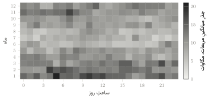
مثال 15.47 (دو برابر در زمستان، تقریباً صاف در طولِ روز) پرسش. خطا را بر حسبِ ماه و ساعت بنویسید و بگویید ذخیره باید با کدام یک تغییر کند.
پاسخ. خروجیِ بالا و شکل 15.12: ژانویه 14.7 و ژوئیه 7.4 MW؛ بر حسبِ ساعت از 9.4 تا 12.1 MW؛ بزرگترین خانه 20.7 MW (ژانویه، ساعتِ ۵).
تفسیر. خطای این آرشیو بیش از همه فصلی است: خطای بادِ زمستان بزرگتر است (A-267)، و خورشیدیِ تابستان با صافیِ آسمان کمخطاست. ذخیرهٔ ثابت در تابستان زیادی و در زمستان کم است؛ ذخیرهٔ ماهانه ارزانتر و امنتر است. خانههای تکی پرنوفهاند (هر خانه حدودِ سی ساعت): برای تصمیم، ماهها یا فصلها را با هم بگیرید. وارسی: \(14.7 / 7.4 = 2.0\).
- نقشهٔ خطا چه چیزی را نشان میدهد که یک عددِ سالانه نمیدهد؟
- چرا خانههای تکیِ نقشه پرنوفهاند؟
- ذخیره در این نیروگاه باید با ماه تغییر کند یا با ساعت؟
15.6.13 آمیختنِ ماندگاری و پیشبینیِ هوا
ایده. برای ساعتِ بعد، دادهٔ زنده بیشتر میداند؛ برای چند ساعتِ بعد، مدلِ هوا. آمیزه وزنی از هر دو است:
\[ \hat P_L = w_L\, \hat P_L^\text{NWP} + (1 - w_L)\, \hat P_L^\text{pers} \tag{15.14}\]
که وزنِ \(w_L\) برای هر افقِ \(L\) روی ماههای آموزش با کمینه کردنِ جذرِ میانگینِ مربعاتِ خطا برازش میشود.
blending persistence and the weather-driven forecast by lead:
lead h weight on NWP RMSE blend RMSE NWP RMSE smart pers.
1 0.50 6.27 7.79 7.70
2 0.70 6.88 7.79 10.59
3 0.80 7.43 8.25 13.40
6 0.90 8.28 8.61 20.25
12 0.95 8.78 9.08 26.15
for the next hour the blend leans on the observation; by a few
hours ahead it leans on the weather forecast: each source wins
where it knows most; the weights are fitted on past months onlyمثال 15.48 (نیم در ساعتِ اول، نود و پنج صدم در دوازده ساعت) پرسش. وزنِ بهینهٔ پیشبینیِ هوا را برای افقهای ۱ تا ۱۲ ساعت برازش کنید و خطای آمیزه را روی آزمون با دو منبع مقایسه کنید.
پاسخ. خروجیِ بالا: وزنها 0.50، 0.70، 0.80، 0.90 و 0.95؛ در ساعتِ اول آمیزه 6.27 MW در برابرِ 7.79 (هوا) و 7.70 (ماندگاری)؛ در شش ساعت 8.28 در برابرِ 8.61 و 20.25 MW.
تفسیر. در ساعتِ اول آمیزه از هر دو منبع حدودِ 19 % بهتر است، چون خطاهای دو منبع تقریباً مستقلاند و در میانگین بخشی از یکدیگر را خنثی میکنند. با افق، وزن به سوی مدلِ هوا میرود و سودِ آمیزه کم میشود. وزنها فقط روی گذشته برازش شدهاند؛ در بهرهبرداری دوره به دوره بازبینی میشوند. وارسی: \(1 - 6.27/7.70 = 0.19\).
- چرا وزنِ پیشبینیِ هوا با افق بزرگ میشود؟
- چرا آمیزه میتواند از هر دو منبع بهتر باشد؟
- وزنها روی کدام داده برازش میشوند؟
15.6.14 اصلاحِ آموخته، با آزمونِ منصفانه
ایده. پیشبینیِ توان را میتوان با یک مدلِ آماری اصلاح کرد: ورودیها پیشبینیِ خام و ویژگیهایی که در زمانِ صدور معلوماند (ساعتِ روز، فصل، سهمِ باد و خورشید). اینجا یک مدلِ خطی با کمترین مربعات روی ژانویه تا اوت آموزش دیده و روی سپتامبر تا دسامبر آزموده شده است. همین آزمون برای هر روشِ پیچیدهتر (درختِ تصمیم، شبکهٔ عصبی) هم لازم است.
learned corrections of the day-ahead forecast, features known at
the issue time only, trained Jan-Aug, tested Sep-Dec:
raw forecast RMSE 10.72 MW
forecast only RMSE 10.38 MW
+ hour of day RMSE 10.31 MW
+ hour and season RMSE 10.43 MW
+ wind and PV parts apart RMSE 10.26 MW
each honest feature buys a few tenths of a megawatt; a season
feature can even hurt when the test months fall outside the
training seasons; the big errors are the weather forecast's own,
which no correction of the plant model removesمثال 15.49 (چند دهم مگاوات، نه نصفِ خطا) پرسش. خطای پیشبینیِ روزِ بعد را با چهار مجموعه ویژگی روی آزمون بنویسید.
پاسخ. خروجیِ بالا: خام 10.72 MW؛ فقط پیشبینی 10.38؛ با ساعتِ روز 10.31؛ با ساعت و فصل 10.43؛ با باد و خورشیدِ جدا 10.26 MW.
تفسیر. بهترین اصلاح 4.3 % خطا را کم میکند. ویژگیِ فصل بدتر کرد: ماههای آزمون بیرون از فصلهای آموزشاند و مدل برای آنها برونیابی میکند. خطای بزرگ از خودِ پیشبینیِ هواست و هیچ اصلاحی در مدلِ نیروگاه آن را برنمیدارد. ادعای «نصف کردنِ خطا» را با مثال 15.42 بسنجید. وارسی: \(1 - 10.26/10.72 = 0.043\).
- ویژگیِ «معلوم در زمانِ صدور» را با دو مثالِ درست و یک مثالِ نادرست توضیح دهید.
- چرا ویژگیِ فصل در این آزمون خطا را بیشتر کرد؟
- سقفِ بهبودِ هر اصلاحِ آماری را چه چیزی تعیین میکند؟
15.6.15 دامِ دادهٔ بهرهبرداری
ایده. پس از راهاندازی، پیشبینی با تولیدِ واقعی آموزش میبیند. اما تولیدِ واقعی قطعی، نگهداری و بُرشِ دستوری را هم در خود دارد. اگر این ساعتها برچسب نخورند، مدل میآموزد که نیروگاه گاهی کمتر میدهد و همهجا کم پیشبینی میکند. برای آموزش (A-270): 3 % ساعتها با یکسومِ تولید و بی برچسب.
training on operational data with unflagged outages (A-270):
all hours, outages unflagged bias -0.83 MW, RMSE 10.41 MW
outage hours flagged and left out bias -0.11 MW, RMSE 10.37 MW
the model learns that the plant sometimes gives a third of its
output and forecasts low in every normal hour; flag outages,
ordered curtailment and maintenance in the training data and
forecast availability separately (chapter 52)مثال 15.50 (سوگیریِ منفی از ساعتهای بیبرچسب) پرسش. یک اصلاحِ خطی را یک بار با همهٔ ساعتها و یک بار بی ساعتهای قطعی آموزش دهید و روی ساعتهای عادیِ آزمون بسنجید.
پاسخ. خروجیِ بالا: با ساعتهای بیبرچسب سوگیری −0.83 MW، بی آنها −0.11 MW.
تفسیر. سوگیری هفت برابر شد، در همهٔ ساعتهای عادی. راه: ساعتهای قطعی، نگهداری و بُرشِ دستوری را در دادهٔ کنترل و پایش برچسب بزنید (فصلِ ۵۲)، مدلِ توان را با ساعتهای عادی بسازید و دسترسپذیری را جدا پیشبینی کنید (برنامهٔ نگهداری را میدانید). وارسی: \(3\ \% \times (2/3) \times\) تولیدِ میانگینِ حدودِ 34 MW برابرِ 0.68 MW است، هماندازهٔ سوگیری.
- چرا ساعتهای قطعیِ بیبرچسب کلِ پیشبینی را کم میکنند؟
- سه نوع ساعت که باید برچسب بخورند نام ببرید.
- چرا دسترسپذیری جدا پیشبینی میشود؟
15.7 ج. آزمایشگاهِ گرد و غبار و شستوشو
فصلِ ۱۰ سیاستِ شستوشو را با انرژیِ روزانهٔ ثابت انتخاب کرد (D-014: کامیون با آستانهٔ 4 %). در مدلِ ساعتی هر روز انرژیِ خودش را دارد: روزهای خشکِ تابستان هم پرغبارند و هم پرآفتاب. این آزمایشگاه همان ایستگاه و همان سیاستها را درونِ مدل میبرد و میپرسد: آیا تصمیم عوض میشود؟ و همیشه در برابرِ بیشستوشو: آیا شستوشو اصلاً میارزد؟
برنامه:
python -m companion.ch15.lab_fdef simulate(meth, every, rate, rain, heavy, removal=None):
"""Daily soiling loss and the number of cleanings of one policy:
accumulation `rate` a day, heavy rain cleans, light rain halves, a
cleaning removes `removal` of the dirt (fixed interval `every` days, or
a trigger on the loss when `every` is negative)."""
x, n, out = 0.0, 0, np.zeros(len(rate))
rem = None if meth is None else (removal or l10.METHODS[meth]["removal"])
for k in range(len(rate)):
x += rate[k]
if heavy[k]:
x = 0.0
elif rain[k]:
x *= 0.5
due = (every < 0 and x > -every) or (every > 0 and k % every == every - 1)
if meth and due:
x *= 1 - rem
n += 1
out[k] = x
return out, n15.7.1 سیاستها در برابرِ بیشستوشو
cleaning policies inside the energy model (daily loss x that day's
PV energy; price 50 u/MWh; chapter 10 station year and costs):
policy loss % recovered MWh cost k u net k u water m3
no cleaning 9.47 0 0 0 0
truck every 30 d 2.83 7,514 197 179 1,310
truck every 14 d 1.37 9,162 426 32 2,839
manual dry every 10 d 1.16 9,402 472 -2 0
robot every 12 d 1.29 9,255 98 364 0
truck at 4 % loss 1.52 8,992 229 220 1,529
net = recovered energy x price - cleaning cost, against no
cleaning (no cleaning loses 9.5 % of the PV energy); a 14-day truck
recovers more than a 30-day one but its extra cleanings cost
more than they recover; the trigger and the robot clean when it
pays; the robot's figure leaves out its capital and upkeep
(chapter 10 break-even), so D-014 keeps the truck trigger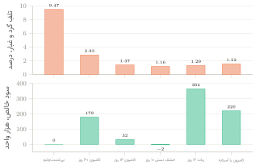
مثال 15.51 (شستوشوی بیشتر، سودِ کمتر) پرسش. شش سیاستِ فصلِ ۱۰ را درونِ مدل اجرا کنید: تلفِ وزندار، انرژیِ بازیافته نسبت به بیشستوشو، هزینه، سودِ خالص با 50 u/MWh و آب.
پاسخ. خروجیِ بالا و شکل 15.13: بیشستوشو 9.47 % تلف؛ کامیونِ سیروزه سودِ 179، چهاردهروزه 32، خشکِ دستیِ دهروزه −2، رباتِ دوازدهروزه 364 و کامیون با آستانه 220 k u در سال؛ آب از صفر تا 2,839 m³.
تفسیر. کامیونِ چهاردهروزه انرژیِ بیشتری از سیروزه بازمیگرداند اما سودِ کمتری دارد: هر شستوشوی اضافه بیش از انرژیِ بازیافتهاش هزینه دارد. خشکِ دستی با پاکیزگیِ کمتر و هزینهٔ بیشتر حتی از بیشستوشو بدتر است. سیاستهایی که فقط وقتی میارزد میشویند (آستانه، ربات با هزینهٔ کمِ هر بار) برندهاند. رقمِ ربات سرمایه و نگهداریِ رباتها را ندارد (فصلِ ۱۰: نقطهٔ سربهسر)، پس D-014 کامیونِ آستانهای را نگه میدارد تا قیمتِ ربات و پذیرشِ آن در ضمانتِ ماژول روشن شود. وارسی: سود \(= 8{,}992 \times 50 - 229{,}320 = 220{,}280\) (درست، گرد شده).
- چرا شستوشوی بیشتر ممکن است سودِ کمتری بدهد؟
- چرا بیشستوشو خطِ پایهٔ درست است؟
- چرا رقمِ ربات برای تصمیم کافی نیست؟
15.7.2 وزندهی با انرژی
the same trigger policy, plain average against energy-weighted:
mean daily loss 1.43 % (chapter 10's figure); energy-weighted 1.52 %
the dry season is both dusty and sunny: weighting by energy
raises the loss; an hourly model takes the weighted valueمثال 15.52 (یکدهم درصد از تقویم) پرسش. تلفِ سیاستِ آستانه را بهصورتِ میانگینِ سادهٔ روزانه و وزندار با انرژیِ روزانه حساب کنید.
پاسخ. خروجیِ بالا: 1.43 % ساده و 1.52 % وزندار.
تفسیر. فرقِ کوچک، اما همیشه یکطرفه است در اقلیمی که فصلِ خشک فصلِ آفتاب است: میانگینِ ساده تلف را کم نشان میدهد. مدلِ ساعتی تلفِ روزانه را روی انرژیِ همان روز میزند. وارسی: وزندار بزرگتر از ساده است چون تلف و انرژی همبستهاند (درست).
- چرا وزندهی با انرژی تلف را بیشتر میکند؟
- در چه اقلیمی اثر برعکس است؟
- مدلِ ساعتی تلفِ روزانه را چگونه به کار میبرد؟
15.7.3 عدمِ قطعیت، کیفیت و آب
ایده. نرخِ گرد و غبار از یک سال ایستگاه آمده و نامطمئن است؛ کیفیتِ شستوشو (چه سهمی از غبار برداشته میشود) به پیمانکار بستگی دارد. تصمیمِ مقاوم تصمیمی است که در بازهٔ معقولِ اینها خوب بماند.
the soiling rate is uncertain (x 0.5, x 1, x 1.5) and the truck
may clean worse (removal 0.80 instead of 0.95): net u a year
policy rate x0.5 x1.0 x1.5 x1.0, truck 0.80
no cleaning 0 0 0 0
truck every 30 d -8,698 179,163 367,025 140,557
truck every 14 d -196,825 32,230 261,285 7,504
manual dry every 10 d -236,689 -1,635 233,420 -1,635
robot every 12 d 133,092 364,464 595,837 364,464
truck at 4 % loss 91,833 220,265 377,758 175,833
best at every rate: robot every 12 d (before its capital)
the top two (robot, trigger) hold over the range: robust; with half
the rate no fixed calendar pays at all, which is why the
station data (and the trigger) come before the contractمثال 15.53 (نصفِ نرخ، و هیچ تقویمی نمیارزد) پرسش. سودِ خالصِ هر سیاست را با نیم، یک و یکونیم برابرِ نرخِ گرد و غبار و با شستوشوی کامیونِ کمکیفیت (برداشتِ 80 % بهجای 95 %) حساب کنید.
پاسخ. خروجیِ بالا: با نیمِ نرخ کامیونِ سیروزه −8.7 k u و کامیونِ آستانهای +91.8؛ با یکونیم برابر همه سودمندند؛ کیفیتِ کم سودِ آستانه را از 220 به 176 k u میآورد؛ دو سیاستِ نخست (ربات و آستانه) در هر سه نرخ همان دو هستند.
تفسیر. با نرخِ کمتر، هیچ تقویمِ ثابتی نمیارزد؛ سیاستِ آستانهای چون فقط وقتی میشوید که لازم است در همهٔ حالتها سودمند میماند: همین مقاومت دلیلِ D-014 است. کیفیتِ شستوشو در قرارداد سنجه میخواهد (فصلِ ۵۱). آب: کامیونِ آستانهای حدودِ 1,500 m³ در سال که از چشمه نمیآید (فصلِ ۱۴، مثال 14.5). وارسی: E15: هر شستوشوی کامل با 0.5 L/m² روی 281,000 m² حدودِ 140 m³ است.
- تصمیمِ مقاوم چیست؟
- چرا با نرخِ کم هیچ تقویمی نمیارزد؟
- کیفیتِ شستوشو در قرارداد چگونه سنجیده میشود؟
15.8 چ. آزمایشگاهِ از پیشبینی تا عرضه
پیشبینیِ احتمالاتی فقط وقتی ارزش دارد که به تصمیم برسد. این آزمایشگاه توزیعِ پیشبینیِ روزِ بعد (بخشِ ث) را به یک تمرینِ عرضهٔ ساده میبرد: نیروگاه هر روز برای فردا برنامه میدهد، سپس آنچه واقعاً تولید شد با برنامه مقایسه و کسری یا مازاد تسویه میشود. قیمتها آموزشیاند (A-268): برنامه 50 u/MWh، کسری 100، مازاد 25 u/MWh. ماههای آزمون همان سپتامبر تا دسامبرند و هیچ دادهای از آنها در ساختِ پیشبینی به کار نرفته است.
برنامه:
python -m companion.ch15.lab_g15.8.1 کدام کمیت را عرضه کنیم
ایده. اگر نیروگاه P50 را عرضه کند، نیمی از ساعتها کم میآورد. اگر کسری گرانتر از مازاد باشد، عرضهٔ کمیتِ پایینتر بهتر است. کمیتِ بهینه از نسبتِ هزینهها میآید (مسئلهٔ «روزنامهفروش»):
\[ \tau^* = \frac{p - p_\text{sur}}{p_\text{short} - p_\text{sur}} . \tag{15.15}\]
تسویهٔ هر ساعت در برنامه: تولید (تا حدِ صادرات) با برنامه مقایسه میشود؛ باتری، اگر باشد، کسری را از شارژِ خود پر میکند و مازاد را تا ظرفیتش میگیرد؛ آنچه میماند با قیمتِ کسری یا مازاد تسویه میشود:
def settle(schedule, actual, battery: bool):
"""Deliver against the schedule hour by hour; the battery (if any)
fills shortfalls and stores surpluses within its power and energy."""
soc, eta = 16.0, 0.86 ** 0.5
short = surplus = 0.0
sold = 0.0
for s, a in zip(schedule, actual):
d = min(a, 100.0) - s
if battery:
if d < 0:
dis = min(-d, 20.0, soc * eta)
soc -= dis / eta
d += dis
elif d > 0:
ch = min(d, 20.0, (32.0 - soc) / eta)
soc += ch * eta
d -= ch
if d < 0:
short -= d
else:
surplus += d
sold += s
revenue = sold * PRICE - short * SHORT + surplus * SURPLUS
return short, surplus, sold, revenueday-ahead schedules on the test months (Sep-Dec), teaching prices:
schedule battery scheduled GWh short MWh surplus MWh revenue k u
P50 no 103.45 10,872 10,245 4,342
P50 yes 103.45 7,600 6,436 4,574
P40 no 100.31 9,500 12,017 4,366
P40 yes 100.31 6,146 8,106 4,604
P30 no 95.25 7,638 15,217 4,379
P30 yes 95.25 4,418 11,456 4,607
a lower quantile sells less day ahead but is short less often;
with a shortfall price twice the day-ahead price the best
quantile is near P33 (a third of the hours may fall short);
the battery absorbs part of the deviation either way, but a
32 MWh battery cannot carry a day of forecast errorمثال 15.54 (یکسوم، نه یکدوم) پرسش. برنامهٔ روزِ بعد را با P50، P40 و P30 بدهید، یک بار بی و یک بار با باتریِ S1 که انحراف را جذب میکند؛ کسری، مازاد و درآمد را حساب کنید.
پاسخ. خروجیِ بالا: درآمدِ چهار ماه 4,342، 4,366 و 4,379 k u بی باتری؛ با باتری 4,574، 4,604 و 4,607 k u؛ کسری از 10,872 به 4,418 MWh.
تفسیر. با این قیمتها \(\tau^* = (50 - 25)/(100 - 25) = 1/3\) (E14)، و درآمد واقعاً از P50 به P30 بالا میرود. باتری درآمد را حدودِ پنج درصد بیشتر میکند اما همهٔ انحراف را نمیگیرد: خطای یک روز (10.7 MW در بیستوچهار ساعت) چند برابرِ ظرفیتِ 32 MWh است (E16). قیمتهای واقعی و قواعدِ بازار کشوریاند (فصلهای ۱۹، ۲۸ و ۵۵). وارسی: \(4{,}607 - 4{,}342 = 265\) (k u در چهار ماه، P43).
- چرا عرضهٔ P50 همیشه بهینه نیست؟
- معادلهٔ 15.15 را برای قیمتِ 40، کسریِ 120 و مازادِ 20 حساب کنید.
- چرا باتریِ S1 همهٔ انحراف را نمیگیرد؟
15.8.2 ذخیرهٔ لازم
ایده. عدمِ قطعیتِ پیشبینی یک ظرفیت میخواهد: اگر توان ممکن است تا P10 پایین بیاید، کسی باید فاصلهٔ P50 تا P10 را آماده نگه دارد: باتری، حاشیه در برنامه، یا ذخیرهٔ خریداریشده.
downward reserve from the forecast interval (P50 - P10), test months:
mean 9.9 MW; 95 % of hours below 12.2 MW
the S1 battery's 20 MW covers it in 100 % of the hours
the forecast's uncertainty becomes a capacity to hold back: a
battery, a margin on the schedule, or bought reserve (chapters
17-19 and 34); a sharper forecast is cheaper reserveمثال 15.55 (ده مگاوات برای هر ساعت) پرسش. ذخیرهٔ پایینرو (P50 منهای P10) را در ماههای آزمون حساب کنید و با ظرفیتِ توانِ باتریِ S1 مقایسه کنید.
پاسخ. خروجیِ بالا: میانگینِ 9.9 MW، نود و پنج درصدِ ساعتها زیرِ 12.2 MW؛ باتریِ 20 MW همهٔ ساعتها را پوشش میدهد.
تفسیر. پیشبینیِ تیزتر یعنی ذخیرهٔ کمتر و ارزانتر؛ این یکی از ارزشهای پولیِ پیشبینیِ خوب است. اما توانِ باتری فقط نیمی از پرسش است؛ انرژیِ آن (چند ساعت؟) و وضعیتِ شارژ در لحظهٔ نیاز نیمِ دیگر است (فصلهای ۱۷ تا ۱۹). در این آموزش، کمیتها مستقل از سطحِ پیشبینیاند و ذخیره تقریباً ثابت است؛ با کمیتهای وابسته به سطح (مثال 15.41) ذخیره ساعتبهساعت تغییر میکند. وارسی: \(12.2 < 20\) (درست).
- ذخیرهٔ پایینرو را تعریف کنید.
- چرا پیشبینیِ تیزتر ذخیره را ارزانتر میکند؟
- چرا توانِ باتری برای ذخیره کافی نیست؟
15.8.3 چرا یکسوم: اشتقاقِ کمیتِ عرضه
ایده. معادلهٔ 15.15 بی اثبات آمد. درآمدِ یک ساعت با برنامهٔ \(q\) و تولیدِ \(y\) (هر دو بر حسبِ مگاواتساعت):
\[ R(q, y) = p\, q - p_\text{short}\, (q - y)^+ + p_\text{sur}\, (y - q)^+ \tag{15.16}\]
که \((z)^+ = \max(z, 0)\). اگر \(F\) توزیعِ تجمعیِ \(y\) باشد، مشتقِ درآمدِ امیدی نسبت به \(q\):
\[ \frac{\mathrm{d}\,\mathrm{E}[R]}{\mathrm{d}q} = p - p_\text{short}\, F(q) - p_\text{sur}\, \bigl(1 - F(q)\bigr) = 0 \quad\Rightarrow\quad F(q^*) = \frac{p - p_\text{sur}}{p_\text{short} - p_\text{sur}} = \tau^* \tag{15.17}\]
و مشتقِ دوم \(-(p_\text{short} - p_\text{sur})\, f(q)\) منفی است، پس بیشینه است. با بازنویسیِ \(p\,q = p\,y + p\,(q - y)^+ - p\,(y - q)^+\):
\[ R(q, y) = p\, y - (p_\text{short} - p_\text{sur})\, L_{\tau^*}(q, y) \tag{15.18}\]
یعنی بیشینه کردنِ درآمد همان کمینه کردنِ زیانِ پینبال در سطحِ \(\tau^*\) است: پیشبینی را باید با همان معیاری سنجید که تصمیم را میسازد. با قیمتهای A-268: \(\tau^* = (50 - 25)/(100 - 25) = 1/3\).
revenue against the offered quantile (no battery, A-268 prices):
quantile training k u (8 months) test k u (4 months)
0.10 8,105 4,223
0.15 8,317 4,316
0.20 8,423 4,360
0.25 8,457 4,374
0.30 8,466 4,379
0.35 8,453 4,375
0.40 8,427 4,366
0.45 8,392 4,353
0.50 8,362 4,342
0.55 8,354 4,338
0.60 8,282 4,308
0.65 8,165 4,256
0.70 7,994 4,178
0.75 7,758 4,068
0.80 7,437 3,913
0.85 6,995 3,699
0.90 6,225 3,321
best quantile: training 0.30, test 0.30; theory 1/3
the curve is flat near its top: a quantile a little off costs
little, a median offer costs more, a high quantile much more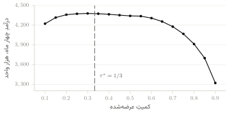
مثال 15.56 (قلهای پهن نزدیکِ یکسوم) پرسش. درآمد را برای کمیتهای 0.10 تا 0.90 روی ماههای آموزش و آزمون حساب کنید و بهترین را با نظریه مقایسه کنید.
پاسخ. خروجیِ بالا و شکل 15.14: بهترین در هر دو 0.30 (نظریه 0.333)؛ آزمون: 4,379 k u در 0.30، 4,342 در 0.50، 3,321 در 0.90.
تفسیر. قله پهن است: 0.25 تا 0.40 حداکثر حدودِ 0.3 % با هم فرق دارند؛ پس دقیق نبودنِ قیمتها یا کمیتها گران نیست. اما سمتِ بالا تند میافتد: عرضهٔ P10ِ انرژی (کمیتِ 0.9) یکچهارم درآمد را میسوزاند. اگر قیمتِ کسری یا مازاد عوض شود، \(\tau^*\) را دوباره حساب کنید. وارسی: \((4{,}379 - 4{,}366)/4{,}379 = 0.3\ \%\) میانِ 0.30 و 0.40.
- معادلهٔ 15.17 را از معادلهٔ 15.16 به دست آورید.
- چرا مشتقِ دوم نشان میدهد نقطه بیشینه است؟
- معادلهٔ 15.18 دربارهٔ انتخابِ معیارِ پیشبینی چه میگوید؟
15.8.4 ارزشِ پیشبینیِ بهتر
ایده. پیش از خریدِ پیشبینیِ گرانتر باید پرسید: هر مگاوات کاهشِ خطا چقدر میارزد؟ برای پاسخ، خطای پیشبینیِ روزِ بعد ده و بیست درصد کوچک شده (ضربِ خطا در 0.9 و 0.8) و یک بار هم پیشبینیِ کامل فرض شده است؛ هر بار کمیتِ P33 روی ماههای آموزش برازش و روی آزمون تسویه شده است.
the value of a better day-ahead forecast (test months, P33 offer,
no battery):
forecast RMSE MW revenue k u
as built 10.72 4,377 ( +0)
errors x 0.9 9.65 4,451 ( +74)
errors x 0.8 8.58 4,526 ( +149)
perfect 0.00 5,141 ( +764)
errors 10 % smaller are worth about 74 k u in these four
months at these prices: a ceiling for what a better forecast
may cost; a perfect one is worth 764 k u, the whole cost of
forecast error in these months: no forecast can earn moreمثال 15.57 (هفتاد و چهار هزار واحد برای ده درصد) پرسش. درآمدِ چهار ماهِ آزمون را برای چهار پیشبینی بنویسید و ارزشِ هر مگاوات کاهشِ خطا را برآورد کنید.
پاسخ. خروجیِ بالا: 10.72 MW و 4,377 k u؛ 9.65 و +74؛ 8.58 و +149؛ کامل +764 k u.
تفسیر. هر مگاوات کاهشِ جذرِ میانگینِ مربعات حدودِ 70 k u در این چهار ماه میارزد، تقریباً خطی. این سقفِ قیمتِ پیشبینیِ بهتر است، با این قیمتها و این ماهها؛ ماههای دیگر و قواعدِ دیگر عدد را عوض میکنند. پیشبینیِ کامل 764 k u میارزد: همهٔ هزینهٔ خطا. باتری (228 k u) و اصلاحِ درونروزی (مثال 15.58) بخشهایی از همین سقف را میگیرند و با هم جمع نمیشوند. وارسی: \(74 / (10.72 - 9.65) = 69\ \text{k u}\) برای هر مگاوات.
- چرا ارزشِ پیشبینیِ کامل سقفِ همهٔ بهبودهاست؟
- چرا سودِ باتری و سودِ پیشبینیِ بهتر جمع نمیشوند؟
- ارزشِ هر مگاوات کاهشِ خطا به چه چیزهایی بستگی دارد؟
15.8.5 بهروزرسانیِ درونروزی
ایده. برنامهٔ روزِ بعد یک بار و با خطای بزرگ ساخته میشود. اگر بازار یا شبکه اجازه دهد، میتوان برنامهٔ هر ساعت را چند ساعت پیش از آن با پیشبینیِ تازهتر اصلاح کرد (به انگلیسی intraday update). اینجا: برنامهٔ P33ِ روزِ بعد، و برنامهٔ اصلاحشده با آمیزهٔ ششساعته (مثال 15.48، وزنِ 0.9) و همان کمیتِ عرضه؛ هزینهٔ اصلاح صفر فرض شده است (آموزشی).
day-ahead P33 against an intraday update 6 hours ahead (test):
schedule short MWh surplus MWh revenue k u
day-ahead only 8,348 13,882 4,377
intraday update 6,371 10,228 4,567
updating the schedule closer to the hour cuts both shortfall and
surplus: the market or grid rules decide whether such updates
are possible and at what cost (chapters 19 and 28)مثال 15.58 (شش ساعت پیش، نه یک روز پیش) پرسش. کسری، مازاد و درآمدِ چهار ماهِ آزمون را برای برنامهٔ روزِ بعد و برنامهٔ اصلاحشدهٔ شش ساعت پیش مقایسه کنید (قیمتهای A-268، بی باتری).
پاسخ. خروجیِ بالا: روزِ بعد: کسری 8,348، مازاد 13,882 MWh، درآمد 4,377 k u؛ درونروزی: 6,371، 10,228 MWh و 4,567 k u.
تفسیر. اصلاحِ درونروزی هر دو انحراف را حدودِ یکچهارم کم و درآمد را 190 k u (حدودِ 4 %) زیاد کرد؛ نزدیک به سودِ باتری در مثال 15.54 (4,607 − 4,379 = 228 k u برای P30)، بی هیچ تجهیزی. اما این سود به قواعد بستگی دارد: آیا بازارِ درونروزی هست، چند ساعت پیش بسته میشود و اصلاح چه هزینهای دارد (فصلهای ۱۹ و ۲۸؛ U-059). پیش از خریدِ باتری برای انحراف، این گزینهٔ ارزان را بسنجید. وارسی: \(1 - 6{,}371/8{,}348 = 0.24\) و \(1 - 10{,}228/13{,}882 = 0.26\).
- چرا برنامهٔ درونروزی هم کسری و هم مازاد را کم میکند؟
- سه قاعدهٔ بازار که سودِ اصلاحِ درونروزی را تعیین میکنند نام ببرید.
- چرا این گزینه پیش از باتری سنجیده میشود؟
15.9 نیروگاهِ P: سه مثالِ یکپارچه
سه مثالِ زیر ابزارِ فصل را جمع میکنند: یک روز در حدِ صادرات، بیانیهٔ تولید، و گزارشِ اعتبارسنجیِ پیشبینی با پیشنهادِ عرضه. همه با مدلِ 15.1، پایههای D-013 تا D-018 و مقدارهای آموزشیِ A-267 تا A-276.
برنامه:
python -m companion.ch15.integratedمثال 15.59 (مقدماتی: روزی که حدِ صادرات بُرید) پرسش. روزی را که بیشترین بُرش را داشت هر دو ساعت دنبال کنید: باد، خورشیدی، جمع در ولتاژِ متوسط، تلفها، نقطهٔ اتصال، تحویل و بُرش.
پاسخ.
the day with the most curtailment, day 121 (model 15.1):
hour wind MW PV MW at MV losses at POC delivered curtailed
06 60.48 7.51 67.99 1.05 66.95 66.95 0.00
08 60.49 34.11 94.61 1.78 92.83 92.83 0.00
10 60.41 46.97 107.38 2.20 105.18 100.00 5.18
12 60.10 46.97 107.07 2.19 104.88 100.00 4.88
14 59.81 40.05 99.85 1.95 97.91 97.91 0.00
16 59.66 19.07 78.73 1.32 77.42 77.42 0.00
18 41.41 0.89 42.31 0.60 41.71 41.71 0.00
day: delivered 1649 MWh, curtailed 21.6 MWh
curtailment needs strong wind and strong sun together: a
few midday hours of a few days; the year's total is smallتفسیر. اول مه: باد تمامروز نزدیکِ ظرفیت و آسمان صاف. در پنج ساعتِ نیمروز (ساعتهای ۹ تا ۱۳؛ جدول هر دو ساعت یکی را نشان میدهد) توانِ نقطهٔ اتصال از 100 MW بالاتر رفت و حدودِ 22 MWh بریده شد، کمتر از یکونیم درصدِ تولیدِ روز. بُرشِ سالانهٔ نیروگاه از چند روزِ اینچنینی ساخته میشود. وارسی: ساعتِ ده: \(105.18 - 100 = 5.18\ \text{MW}\) بریده (درست).
مثال 15.60 (میانی: بیانیهٔ تولیدِ نیروگاه) پرسش. بیانیهٔ تولیدِ P50ِ نیروگاهِ P را با مدلِ 15.1 بنویسید: هر فناوری در ولتاژِ متوسط، تلفهای نیروگاه، خالص در نقطهٔ اتصال، و آنچه در آن نیست.
پاسخ.
energy-yield statement of Plant P, model 15.1 (P50, long term, S0):
wind at MV 193.14 GWh (gross 218.79; density, terrain,
wakes, long term, availability)
PV at MV 108.36 GWh (POA at STC 129.15; year 1)
electrical losses and own use 5.64 GWh
curtailment at 100 MW 0.23 GWh
grid outages (12 h) 0.49 GWh
net at the point of connection 295.14 GWh; capacity factor 0.337
not included: uncertainty and P90 (chapter 16), life-mean
degradation, the S1 battery, price and dispatch effects
basis: model 15.1: lt_wind=1.028, lt_pv=0.988, av_wind=0.981, av_pv ...تفسیر. 295.1 GWh در سالِ اول، با ضریبِ ظرفیتِ 0.337 در نقطهٔ اتصال: پایهٔ D-019. این عدد از فصلِ ۵ (یک ضریبِ تلفِ کلی) و از آزمونِ بخشِ دوم (289.4 GWh، بخش X.2) بیشتر است، چون پایههای بلندمدت، چیدمانِ W2b و چگالیِ توپی را دارد؛ هر تفاوت در موازنه ردیابیپذیر است. عدمِ قطعیت و P90 در فصلِ ۱۶ به همین بیانیه افزوده میشوند. وارسی: \(295.14/876 = 0.337\) (درست).
مثال 15.61 (یکپارچه: گزارشِ اعتبارسنجیِ پیشبینی و پیشنهادِ عرضه) پرسش. گزارشِ اعتبارسنجیِ پیشبینیِ روزِ بعد را با خطا، مهارت، پوشش، رمپ، رانش و شرطِ داده بنویسید و پیشنهادِ عرضه و ذخیره بدهید.
پاسخ.
forecast validation report, day-ahead hybrid forecast (test Sep-Dec):
RMSE 10.7 MW (9.7 % of 110 MW); bias +0.23 MW
skill against 24 h persistence +0.59
P10-P90 coverage 78.7 % (target 80 %, quantiles from the past only)
ramps above 15 MW/h: POD 0.43, FAR 0.67 (timing errors)
bias by month within about 1.5 MW; retrain on a rolling window
data: synthetic archive (A-267), train Jan-Aug, test Sep-Dec,
no feature unknown at the issue time
recommendation: schedule near P33 with these prices; hold
about 10 MW of downward reserve (the S1 battery covers it)تفسیر. گزارش هر ادعا را با شاهدِ آزمونِ منصفانه میدهد: آموزش و آزمونِ جدا، بی ویژگیِ ناشناخته، خطِ پایهٔ درست، و کمیتهایی که فقط از گذشته آموخته شدهاند. پیشنهادِ عرضه از قیمتها میآید، نه از پیشبینی: اگر قیمتِ کسری عوض شود، کمیتِ عرضه هم عوض میشود. وارسی: همهٔ عددها از خروجیهای بخشهای ث و چ آمدهاند (درست).
15.10 گردشِ کارِ مدلِ تولید و پیشبینی
- دفترِ ورودیها: منبع، نسخه، برچسبِ زمان و منطقهٔ زمانیِ هر ورودی (بخش 15.2.2، بخش 15.2.5).
- مرزها و زنجیره: مرزِ هر عدد، ترتیبِ فیزیکیِ گامها (بخش 15.2.3، بخش 15.2.4).
- تبدیل: خورشیدی و باد ساعت به ساعت (بخش 15.3).
- دفترِ تلفها: هر تلف یک ردیف، بی شمارشِ دوباره (بخش 15.4).
- موازنه و آبشار: آشتیِ ناخالص و خالص، آزمونِ یکا، چکیدهٔ تنظیمات (بخش 15.5).
- حساسیتها: آزمونِ دو فرض برای هر گامِ نامطمئن؛ شستوشو در برابرِ بیشستوشو (بخش 15.5.3، بخش 15.7).
- بیانیهٔ تولید: سالِ اول، مرز، آنچه در آن نیست (مثال 15.60).
- پیشبینی: خطِ پایه، آزمونِ منصفانه، معیارها بر حسبِ افق و فناوری، کمیتها، رمپ، نشت، رانش (بخش 15.6).
- تصمیم: از توزیعِ پیشبینی به عرضه و ذخیره (بخش 15.8).
| رابط | مقدار یا پرسش | منبع |
|---|---|---|
| بیانیهٔ تولیدِ P50 | 295.1 GWh در نقطهٔ اتصال، سالِ اول | مثال 15.60 |
| باد و خورشیدی در ولتاژِ متوسط | 193.1 و 108.4 GWh | مثال 15.33 |
| بُرش در 100 MW | 0.23 GWh؛ در 90 MW حدودِ 1.8 GWh | مثال 15.18 |
| خطای روزِ بعد | 9.7 % ظرفیت، پوششِ 78.7 % | مثال 15.61 |
| شستوشو | کامیونِ آستانهای، 1.52 % تلفِ وزندار | مثال 15.51 |
15.11 آزمایشگاههای پایتونِ این فصل
| آزمایشگاه | برنامه | آنچه میسازد |
|---|---|---|
| مدلِ ساعتی | sources | پیکربندیِ نسخهدار، جدولهای بادِ W2b، همهٔ گامهای زنجیره |
| معماری، تبدیل، تلفها | examples_abc | تفکیک، همترازی، روزِ خورشیدی، دنباله بر حسبِ جهت، همزمانی، بُرش، ترتیب، تخریب، ذخیره، قطعی |
| مدلِ بازتولیدپذیر | lab_d | موازنهٔ ماهانه، آبشار، دو فرض، آزمونها |
| پیشبینی | forecast | آرشیوِ ساختگی، خطا بر حسبِ افق و فناوری، کمیتها، نشت، رمپ، رانش |
| انتخابهای مدل و تلفهای بیشتر | examples_h | مدلهای خورشیدی، تلاطم و یخ، ضریبِ دنباله، تلفِ مربعی و توانِ واکنشی، بُرشِ دستوری، بیست سال |
| توزیع، نسبتِ عملکرد، سالِ نخست | examples_k | وایبول، نسبتِ عملکردِ ماهانه، برداشت، اندازهٔ بلوکِ خورشیدی، سالِ میانگین، سالِ نخست |
| باتری، توانِ واکنشی، پل | examples_n | حدِ شیب در دادهٔ یکدقیقهای، جابهجاییِ زمانی، حدِ توانِ ظاهری، پلِ دو مدل |
| محیط، دسترسپذیری، حساسیت | examples_m | خفاش و صدا، دسترسپذیریِ زمانی و انرژیمحور، باتری پشتِ بلوکِ بزرگ، گردباد، مدلِ ماهانه |
| پیشبینیِ ژرفتر | forecast2 | هماد و کالیبره کردن، قابلیتِ اعتماد، آمیزه، اصلاحِ آموخته، دادهٔ بیبرچسب، درونروزی |
| گرد و غبار و شستوشو | lab_f | سیاستها، وزندهی، عدمِ قطعیت |
| از پیشبینی تا عرضه | lab_g | کمیتِ عرضه، باتری، ذخیره |
| نیروگاهِ P | integrated | یک روز، بیانیهٔ تولید، گزارشِ اعتبارسنجی |
| مثالها و پاسخها | worked | سطرهای E01 و P01 به بعد |
کتابخانهٔ همراه ماژولِ yieldmodel را میافزاید: آبشارِ تلف با آزمونِ موازنه، جمعِ ماهانه، حدِ صادرات، گرد و غبار با شستوشو، ماندگاری و ماندگاریِ هوشمند، معیارهای خطا و مهارت، پینبال و پوشش، رمپ و جدولِ کشف؛ با آزمونهایی که پاسخِ دستی دارند. تمرینِ پیشنهادی: در sources حدِ صادرات را 80 MW کنید و موازنه و بُرش را دوباره بسازید.
کارهای آزمایشگاهی برای خواننده (هر کدام با وارسیِ پذیرش):
- با
replaceیک پیکربندیِ تازه با گرد و غبارِ 2 % بسازید؛ چکیدهٔ تازه باید با af78d930fe5b فرق کند و خالص حدودِ 0.6 GWh کم شود (مثال 15.36). plant_endرا با بلوکِ خورشیدیِ 60 MW اجرا کنید؛ بُرش باید حدودِ 1.46 GWh شود (مثال 15.22).- در
examples_k.one_hourساعتِ دیگری را برگزینید و هر گام را با دست وارسی کنید؛ اختلافِ هر گامِ ضربی باید زیرِ 0.1 % باشد. - در
forecast2.newsvendorقیمتِ کسری را 150 کنید؛ بهترین کمیت باید نزدیکِ \(25/125 = 0.20\) برود. - در
forecast2.calibrationشمارِ اعضا را 50 کنید؛ سهمِ یکنواختِ هر رتبه 1.96 % است و شکلِ U باید بماند. - در
examples_m.environmentalآستانهٔ خفاش را 7 m/s کنید و رشدِ تلف را با مثال 15.26 مقایسه کنید.
15.12 ساخت و تولیدِ صنعتی در این فصل
کاربرد ندارد برای ساخت. آنچه از کارخانه به مدل میآید ورودیهای تجهیزات است: رواداریِ توانِ ماژول (توانِ برچسب در برابرِ آزمونِ نمونهها، فصلِ ۴۱)، ضریبهای دمایی و رفتار در نورِ کم از برگهٔ داده و آزمونِ مستقل، منحنیِ بازدهِ اینورتر، منحنیِ توانِ تضمینشدهٔ توربین، نرخِ تخریبِ ضمانتشده، و دسترسپذیریِ تضمینشده در قراردادِ نگهداری. هر کدام عددی در پیکربندیِ مدل است و منبعش در دفترِ ورودیها ثبت میشود؛ عدمِ قطعیتِ آنها در فصلِ ۱۶.
15.13 جعبهٔ استاندارد و انطباق
مرجعهای زیر فقط با عنوان و ویرایشِ وارسیشده آمدهاند (دفترِ استانداردها) و هیچ بند یا مقداری از آنها نقل نشده است. پذیرشِ ملیِ هیچکدام در ایران، افغانستان و تاجیکستان وارسی نشده است (فصلهای ۵۵ تا ۵۷).
- پایشِ عملکردِ سامانهٔ خورشیدی (مقایسهٔ مدل و اندازهگیری پس از ساخت): IEC 61724-1:2021.
- آزمونِ عملکرد و رتبهبندیِ انرژیِ ماژول (ورودیهای دما و تابش): IEC 61853-1:2011.
- اندازهگیریِ منحنیِ توانِ توربین: IEC 61400-12-1:2022 (فصلهای ۱۱ و ۱۳).
- مرز: روشِ گزارشِ تولیدِ بانکپذیر و بازبینیِ مستقل (فصلِ ۱۶)؛ قواعدِ بازار، قیمتهای انحراف و الزامِ پیشبینی برای شبکه کشوریاند (فصلهای ۲۸ و ۵۵ تا ۵۷).
15.14 تحویلدادنیِ نیروگاهِ P
این فصل اینها را به پروندهٔ نیروگاهِ P میافزاید:
- PLP-GEN-CAL-0006، بازنگریِ A: مدلِ تولیدِ 15.1 با پیکربندی، چکیدهٔ تنظیمات و آزمونها (بخش 15.2، بخش 15.5).
- PLP-GEN-REP-0007، بازنگریِ A: گزارشِ تولید و تلف: موازنهٔ ماهانه، آبشار، دفترِ تلفها، حساسیتها و بیانیهٔ P50 (مثال 15.33، مثال 15.60).
- PLP-GEN-REP-0008، بازنگریِ A: گزارشِ اعتبارسنجیِ پیشبینی و پیشنهادِ عرضه (مثال 15.61).
- کتابخانهٔ همراه: ماژولِ
yieldmodelبا آزمونها و برنامههایcompanion/ch15. - فرضها: A-275 دسترسپذیریِ خورشیدی، تخریبِ سالِ اول، ساعتهای قطعیِ شبکه؛ A-276 دو فرضِ آزمونِ حساسیت؛ A-267 آرشیوِ ساختگیِ پیشبینی (خطای باد و صافی با افق و فصل، خطای زمانبندی)؛ A-268 قیمتهای آموزشیِ عرضه، کسری و مازاد؛ A-269 قاعدهٔ ساختگیِ بُرشِ دستوریِ بهاری و ضریبِ دماییِ آموزشیِ مقایسهٔ مدلها؛ A-270 همادِ ساختگیِ بیستعضوی و ساعتهای قطعیِ بیبرچسب؛ A-271 سالِ نخستِ ساختگی با سه خرابی؛ A-272 قاعدههای آموزشیِ خفاش و صدا، الگوهای خرابی، تعرفههای تقسیمِ بُرش و بازههای حساسیت؛ A-273 قیمتهای ساعتیِ آموزشی، الزامِ ضریبِ توانِ 0.95، حدِ شیبِ 5 MW در دقیقه با تبدیلِ ساده و مدلِ بازبین؛ A-274 بی تخریب برای باد در سریِ طولِ عمر. همه فرضی یا ساختگی؛ در انتشارِ بعدیِ بستهٔ داده به دفترِ فرضها افزوده میشوند.
- مجهولها: U-056 دادهٔ پیشبینیِ واقعی و تأمینکنندهٔ آن؛ U-057 آمارِ قطعی و محدودیتِ شبکه در نقطهٔ اتصال؛ U-058 دسترسپذیریِ تضمینشده در قراردادِ نگهداری؛ U-059 قواعدِ بازار و قیمتهای انحراف؛ U-060 شرطهای مجوزِ محیطِزیستی برای توقفِ توربینها (خفاش، صدا، سایهزنی).
- تصمیم D-019: پایهٔ تولیدِ نیروگاهِ P مدلِ ساعتیِ 15.1 است با پیکربندیِ ثبتشده؛ بیانیهٔ P50ِ سالِ اول 295.1 GWh در نقطهٔ اتصال (سناریوی S0)؛ هر تغییرِ پایه نسخهٔ تازه با موازنهٔ تازه؛ پیشبینی فقط با آزمونِ منصفانه و خطِ پایه پذیرفته میشود.
- دفترِ سندها (جدول 2.18): سه ردیفِ بالا با وضعیتِ «پیشنویس، آموزشی».
15.15 جمعبندی
- دو مدل با یک زنجیره: ارزیابیِ بلندمدت (میانگین و پراکندگیِ سالانه) و پیشبینیِ کوتاهمدت (ساعتهای آینده) ورودی، خروجی و معیارِ درستیِ متفاوت دارند (بخش 15.2.1).
- معماری: دفترِ ورودیها با منبع و برچسبِ زمان، مرزهای مدل، زنجیرهٔ فیزیکی، تنظیماتِ نسخهدار با چکیده و آزمونهای یکا و موازنه (بخش 15.2).
- تبدیل: بزرگترین تلفها فیزیکاند: چگالیِ ارتفاع (−8.5 % باد)، دمای سلول (−7.6 % خورشیدی با زاویه و نورِ کم)، دنباله (−4.0 %)؛ تلفهای تحتِ کنترلِ طراح هر کدام یک تا دو درصد (مثال 15.34).
- آشتی: موازنهٔ ماهانه از 347.9 GWh ناخالص به 295.1 GWh خالص با اختلافِ صفر؛ درصدها ضرب میشوند نه جمع؛ ترتیب و شکلِ هر تلف مهم است (مثال 15.33).
- شستوشو: شستوشوی بیشتر همیشه بهتر نیست؛ سیاستِ آستانهای در بازهٔ نرخها مقاوم است؛ تلفِ وزندار با انرژی از میانگینِ ساده بیشتر است (بخش 15.7).
- پیشبینی: ماندگاری در ساعتِ نخست سخت شکست میخورد؛ پیشبینیِ هوا از چند ساعت به بعد مهارتِ 0.4 تا 0.65 دارد؛ خطای هیبرید کمتر از جمعِ خطاهاست (بخش 15.6).
- آزمونِ منصفانه: تقسیمِ زمانی، بی ویژگیِ ناشناخته در زمانِ صدور؛ بازهٔ ساختهشده روی آزمون «کامل» و بیمعناست؛ رمپ و رانش جدا گزارش میشوند (بخش 15.6.6).
- تصمیم: کمیتِ عرضه از قیمتها میآید (اینجا حدودِ P33)؛ عدمِ قطعیت ذخیره میخواهد (بخش 15.8).
15.15.1 واژگانِ فصلِ ۱۵
| فارسی | انگلیسی | یادداشت |
|---|---|---|
| مدلِ تولیدِ انرژی | energy-yield model | |
| زنجیرهٔ مدل | model chain | |
| مرزِ مدل | model boundary | |
| تفکیکِ زمانی | time resolution | |
| همترازیِ زمانی | time alignment | |
| پیکربندیِ نسخهدار | versioned configuration | |
| بازتولیدپذیری | reproducibility | |
| ناخالص، خالص | gross, net | |
| آشتیِ ناخالص و خالص | gross-to-net reconciliation | |
| آبشارِ تلف | loss waterfall | |
| موازنهٔ ماهانه | monthly energy balance | |
| دفترِ تلفها | loss register | |
| بُرش (اینورتر) | clipping | |
| نسبتِ جریانِ مستقیم به متناوب | DC/AC ratio | |
| تلفِ بیباری و باری | no-load and load losses | |
| مصرفِ داخلی | auxiliary consumption | |
| دسترسپذیری | availability | |
| تخریب | degradation | |
| حدِ صادرات، بُرش در نقطهٔ اتصال | export limit, curtailment | |
| شمارشِ دوباره | double counting | |
| همزمانی، مکمل بودن | coincidence, complementarity | |
| پیشبینیِ کوتاهمدت | short-term forecast | |
| افقِ پیشبینی، زمانِ صدور | forecast horizon, issue time | |
| ماندگاری، ماندگاریِ هوشمند | persistence, smart persistence | |
| پیشبینیِ عددیِ هوا | numerical weather prediction | NWP |
| همادِ پیشبینی | forecast ensemble | |
| پیشبینیِ قطعی و احتمالاتی | deterministic and probabilistic forecast | |
| سوگیری | bias | |
| میانگینِ قدرِ مطلقِ خطا | mean absolute error | MAE |
| جذرِ میانگینِ مربعاتِ خطا | root-mean-square error | RMSE |
| مهارت | skill score | |
| کمیت، زیانِ پینبال | quantile, pinball loss | |
| پوشش | coverage | |
| رمپ، احتمالِ کشف، هشدارِ نادرست | ramp, probability of detection, false-alarm ratio | POD, FAR |
| نشتِ داده | data leakage | |
| رانش، بازآموزی | drift, retraining | |
| تقسیمِ زمانی | time-based split | |
| کمیتِ عرضه | offered quantile | |
| ذخیرهٔ پایینرو | downward reserve | |
| انحراف، کسری، مازاد | imbalance, shortfall, surplus |
15.16 ارزیابیِ پلکانی
معیارِ تسلطِ این فصل: خواننده میتواند مدلِ تولیدِ ساعتیِ نسخهدار با مرز و زنجیرهٔ درست بسازد، ناخالص را با هر تلفِ جدا تا خالص آشتی دهد، شستوشو را درونِ مدل در برابرِ بیشستوشو ارزیابی کند، پیشبینیِ کوتاهمدت را با خطِ پایه و آزمونِ منصفانه بر حسبِ افق و فناوری اعتبارسنجی کند و توزیعِ آن را به تصمیمِ عرضه و ذخیره ببرد. پاسخها در بخش 15.17 آمدهاند.
15.16.1 پلهٔ ۱: مبانی
تمرین 15.1 25 MW در 4 ساعت و 40 MW در 3 ساعت چند مگاواتساعت است؟
تمرین 15.2 تلفهای 2، 3 و 5 % پشتِ هم چند درصدند؟
تمرین 15.3 ضریبِ ظرفیتِ 196.9 GWh در 60 MW چیست؟
تمرین 15.4 ضریبِ ظرفیتِ 108.36 GWh در 50 MW متناوب چیست؟
تمرین 15.5 چگالیِ 1.10 در برابرِ 1.225 kg/m³ چه اثری در ناحیهٔ دو دارد؟
تمرین 15.6 تلفِ بارِ 1.5 % در 100 MW در 80 MW چند مگاوات است؟
تمرین 15.7 تخریبِ 0.6 % در سال، ضریبِ سالِ بیستم چیست؟
تمرین 15.8 ضریبِ میانگینِ بیستوپنجساله با 0.6 % در سال چیست؟
تمرین 15.9 جذرِ میانگینِ مربعاتِ خطاهای 2، −2، 6 و −6 MW چیست؟
تمرین 15.10 میانگینِ قدرِ مطلقِ همان خطاها چیست؟
تمرین 15.11 مهارتِ 9.7 % در برابرِ 23.7 % چیست؟
تمرین 15.12 زیانِ پینبالِ \(\tau = 0.9\) برای پیشبینیِ 50 و مشاهدهٔ 60 چیست؟
تمرین 15.13 کمیتِ عرضه با قیمتِ 40، کسریِ 120 و مازادِ 20 چیست؟
تمرین 15.14 پوششِ شانزده مشاهده از بیست چیست؟
تمرین 15.15 آبِ یک شستوشوی کامیون با یک لیتر برای هر ماژول و ۱۰۹٬۲۰۰ ماژول چیست؟
تمرین 15.16 بازدهِ یکسویهٔ رفتوبرگشتِ 86 % چیست؟
تمرین 15.17 دوازده ساعت قطعی با توانِ میانگینِ 34 MW چه انرژیای میبرد؟
تمرین 15.18 ارزشِ 0.25 GWh با 50 u/MWh چیست؟
تمرین 15.19 تلفِ اینورترِ 1.66 % روی 115.74 GWh چند گیگاواتساعت است؟
تمرین 15.20 ارزیابیِ بلندمدت و پیشبینیِ کوتاهمدت را در سه ویژگی مقایسه کنید.
تمرین 15.21 سه مرزِ مدل را تعریف کنید.
تمرین 15.22 چرا درصدهای تلف جمع نمیشوند؟
تمرین 15.23 ماندگاری و ماندگاریِ هوشمند را تعریف کنید.
تمرین 15.24 نشتِ داده را تعریف کنید.
تمرین 15.25 رمپ را تعریف کنید.
تمرین 15.26 ضریبِ شکلِ وایبول را با روشِ گشتاورها برای میانگینِ 6.74 و انحرافِ معیارِ 3.36 m/s حساب کنید.
تمرین 15.27 ضریبِ مقیاسِ همان توزیع چیست؟
تمرین 15.28 نسبتِ عملکردِ 1,804.2 kWh/kWp با تابشِ صفحهٔ 2,150.3 kWh/m² چیست؟
تمرین 15.29 دمای سلول با مدلِ دمای کارِ اسمیِ 45 °C، هوای 35 °C و 1,000 W/m² چیست؟
تمرین 15.30 تلفِ برقیِ معادلهٔ 15.8 در 60 MW چند مگاوات است؟
تمرین 15.31 ضریبِ توانِ 0.90 تلفِ بار را چند برابر میکند؟
تمرین 15.32 سهمِ هر رتبه در نمودارِ رتبهٔ یکنواخت با بیست و با پنجاه عضو چیست؟
تمرین 15.33 آمیزه با وزنِ 0.5، پیشبینیِ هوای 40 MW و ماندگاریِ 50 MW چیست؟
تمرین 15.34 یک توربین از دوازده 4 % پایین است. تولیدِ مزرعه چند درصد کم است؟
تمرین 15.35 485 MWh در 90 ساعت چه توانِ میانگینی است؟
تمرین 15.36 95.5 MWh از 16,678 MWh چند درصد است؟
تمرین 15.37 نسبتِ تابشِ صفحهٔ همسانگرد به هِی–دیویس با 2,107 و 2,150 kWh/m² چیست؟
تمرین 15.38 نمودارِ رتبه را تعریف کنید.
تمرین 15.39 قابلیتِ اعتمادِ یک کمیت را تعریف کنید.
تمرین 15.40 بزرگتر کردنِ بلوکِ خورشیدی پشتِ حدِ صادرات چه بهایی دارد؟
تمرین 15.41 نابرابریِ ینسن را برای تلفِ کوژ بنویسید.
تمرین 15.42 چرا کنتورِ نقطهٔ اتصال صادرات و واردات را جدا میشمارد؟
تمرین 15.43 750 ساعت توقف با توانِ میانگینِ 3.0 MW چه انرژیای است؟
تمرین 15.44 باتریِ 40 MWh که 2,734 MWh بازمیگرداند چند چرخهٔ کامل دارد؟
تمرین 15.45 سه درصد از 193.14 GWh چند گیگاواتساعت است؟
تمرین 15.46 حالتِ کمصدای سه توربین از دوازده با 8 % توانِ کمتر چند درصد از توانِ مزرعه را در آن ساعتها میگیرد؟
تمرین 15.47 دسترسپذیریِ زمانی و انرژیمحور را تعریف کنید.
تمرین 15.48 امتیازِ احتمالاتیِ رتبهایِ پیوسته برای پیشبینیِ تکعددی برابرِ چیست؟
تمرین 15.49 نمودارِ گردباد چه چیزی را نشان میدهد؟
تمرین 15.50 با ضریبهای مثال 15.12، خروجیِ اینورتر برای ورودیِ 0.5 پریونیت چیست؟
تمرین 15.51 بازدهِ همان اینورتر در ورودیِ 0.02 پریونیت چیست؟
تمرین 15.52 کمیتِ عرضه با قیمتهای 60، 120 و 20 چیست؟
تمرین 15.53 توانِ واکنشیِ لازم برای ضریبِ توانِ 0.95 در 100 MW چیست؟
تمرین 15.54 تلفِ رفتوبرگشتِ 10,817 MWh تخلیه با بازدهِ 86 % چیست؟
تمرین 15.55 پلِ میانِ دو مدل را تعریف کنید.
تمرین 15.56 دمای سلول با فایمن برای هوای 36.3 °C، 1,021 W/m² و بادِ 2.84 m/s چیست؟
تمرین 15.57 تندیِ همارزِ 9.08 m/s در چگالیِ 1.1308 kg/m³ چیست؟
15.16.2 پلهٔ ۲: تحلیل
تمرین 15.58 خالصِ ماهانهٔ مه و ژوئن را بنویسید و تفاوت را توضیح دهید.
تمرین 15.59 سه گامِ بزرگِ آبشارِ باد را بنویسید.
تمرین 15.60 سه گامِ بزرگِ آبشارِ خورشیدی را بنویسید.
تمرین 15.61 تلفهای نیروگاه از ولتاژِ متوسط تا نقطهٔ اتصال را بنویسید.
تمرین 15.62 تلفِ کل و جمعِ سادهٔ آبشارها را مقایسه کنید.
تمرین 15.63 دسترسپذیری بهشکلِ ساعت بُرش را چقدر عوض کرد؟
تمرین 15.64 گرد و غبارِ فصلی و ثابت را مقایسه کنید.
تمرین 15.65 اثرِ تفکیکِ دهدقیقهای و ساعتی را بنویسید.
تمرین 15.66 اثرِ جابهجاییِ یکساعتهٔ خورشیدی را بنویسید.
تمرین 15.67 بُرش را برای نسبتهای 1.1 تا 1.4 بنویسید.
تمرین 15.68 اثرِ ترتیبِ گرد و غبار و بُرش چیست؟
تمرین 15.69 میانگینِ بیستوپنجسالهٔ خورشیدی را بنویسید.
تمرین 15.70 باتریِ S1 از بُرش چقدر نجات داد؟
تمرین 15.71 پراکندگیِ انرژیِ قطعی را بنویسید.
تمرین 15.72 خطای پیشبینیِ هوا بر حسبِ افق را بنویسید.
تمرین 15.73 خطای روزِ بعد بر حسبِ فناوری را بنویسید.
تمرین 15.74 پوششِ سه بازه را بنویسید و تفسیر کنید.
تمرین 15.75 اثرِ ویژگیِ نشتکرده را بنویسید.
تمرین 15.76 سنجههای رمپ را بنویسید.
تمرین 15.77 تلفِ سه سیاستِ شستوشو را بنویسید.
تمرین 15.78 تلفِ ساده و وزندارِ سیاستِ آستانه را بنویسید.
تمرین 15.79 کسریِ دو سیاستِ عرضه را بنویسید.
تمرین 15.80 چرا ماندگاریِ بیستوچهارساعته از دوازدهساعته بهتر است؟
تمرین 15.81 چرا خطای خورشیدی فقط در روز سنجیده میشود؟
تمرین 15.82 چرا شستوشوی چهاردهروزه سودِ کمتری از سیروزه دارد؟
تمرین 15.83 اثرِ سه انتخابِ مدلِ خورشیدی را بنویسید.
تمرین 15.84 اثرِ هموارسازیِ منحنیِ توان را برای سه شدتِ تلاطم بنویسید.
تمرین 15.85 تلفِ دنباله را برای سه ضریبِ افت بنویسید و تفاوتِ انرژی را حساب کنید.
تمرین 15.86 انرژیِ یک توربین از سری و از وایبول را مقایسه کنید.
تمرین 15.87 اثرِ ضریبِ شکل را در دو میانگینِ تندی بنویسید و علامتها را توضیح دهید.
تمرین 15.88 نسبتِ عملکردِ ژانویه و ژوئیه را خام و تصحیحشده بنویسید.
تمرین 15.89 نسبتِ عملکردِ ژوئیه را با دمای وزندارِ 50.7 °C به 25 °C تصحیح کنید.
تمرین 15.90 تلفِ برقیِ سالانه و افزایشِ آن با ضریبِ توانِ 0.95 را بنویسید.
تمرین 15.91 هزینهٔ برداشت از شبکه با قیمتِ سه برابرِ 50 u/MWh چیست؟
تمرین 15.92 سهمِ رسیده از بلوکِ 50 تا 60 MW را حساب کنید.
تمرین 15.93 انحرافِ معیارِ هیبرید را برای \(r = 0\)، 0.12 و 1 بنویسید.
تمرین 15.94 بُرشِ سالِ میانگین و میانگینِ بُرش را مقایسه کنید.
تمرین 15.95 سه خرابیِ سالِ نخست را با عدد بنویسید.
تمرین 15.96 افتِ مارسِ خورشیدی را با دست برآورد کنید.
تمرین 15.97 دو سرِ نمودارِ رتبه را پیش و پس از کالیبره کردن بنویسید.
تمرین 15.98 رابطهٔ پراکندگی و خطا را بنویسید.
تمرین 15.99 قابلیتِ اعتمادِ میانه را روی آموزش و آزمون بنویسید.
تمرین 15.100 وزنهای آمیزه را بر حسبِ افق بنویسید.
تمرین 15.101 بهترین اصلاحِ آموخته خطا را چقدر کم کرد؟
تمرین 15.102 سوگیری از ساعتهای قطعیِ بیبرچسب را با دست برآورد کنید.
تمرین 15.103 اثرِ اصلاحِ درونروزی را بر کسری و مازاد بنویسید.
تمرین 15.104 انرژیِ گمشده در قاعدههای خفاش و صدا را بنویسید.
تمرین 15.105 اثرِ آستانهٔ تندی در قاعدهٔ خفاش را بنویسید.
تمرین 15.106 دسترسپذیریِ زمانی و انرژیمحور را در دو الگوی خرابی بنویسید.
تمرین 15.107 تفاوتِ دو تعریف را به انرژی برگردانید.
تمرین 15.108 سهمِ بازیافته از بُرش را برای چهار باتری بنویسید.
تمرین 15.109 چهار ورودیِ اولِ نمودارِ گردباد را با بازهشان بنویسید.
تمرین 15.110 بادِ ماهانه و ساعتی را مقایسه کنید.
تمرین 15.111 خورشیدیِ ژانویه و ژوئیه را در دو مدل مقایسه کنید.
تمرین 15.112 امتیازِ احتمالاتیِ هماد را با خطای میانگینش مقایسه کنید.
تمرین 15.113 تلفِ سالانهٔ اینورتر را با بازدهِ بیشینه مقایسه کنید.
تمرین 15.114 ارزشِ از دسترفتهٔ بُرش را با سه قاعده برای بلوکِ 80 MW بنویسید.
تمرین 15.115 درآمدِ آزمون را برای کمیتهای 0.30، 0.50 و 0.90 بنویسید.
تمرین 15.116 ارزشِ هر مگاوات کاهشِ خطای پیشبینی را برآورد کنید.
تمرین 15.117 ارزشِ پیشبینیِ کامل را بنویسید و معنایش را بگویید.
تمرین 15.118 انرژیِ حقیقیِ از دسترفته برای توانِ واکنشی را در دو حالت بنویسید.
تمرین 15.119 حدِ توانِ حقیقیِ اینورترهای 49 MVA را وقتی همهٔ توانِ واکنشیِ 100 MW را میدهند حساب کنید.
تمرین 15.120 انرژی و ارزشِ S0 و S1 را با جابهجاییِ زمانی بنویسید.
تمرین 15.121 ارزشِ هر مگاواتساعتِ از دسترفته در جابهجاییِ زمانی چیست؟
تمرین 15.122 گامهای پل از مدلِ A به B را بنویسید.
تمرین 15.123 چرا تولیدِ بادیِ ساعتِ مثال 15.7 با دست 40.46 و در برنامه 42.44 MW است؟
تمرین 15.124 خالصِ سالهای ۱ و ۲۵ و میانگینِ عمر را بنویسید.
تمرین 15.125 خطای پیشبینی را در ژانویه و ژوئیه و بازهٔ ساعتیاش بنویسید.
تمرین 15.126 تلف و باتریِ لازم برای حدِ شیبِ 5 MW در دقیقه را در روزِ ابریِ پراکنده بنویسید.
15.16.3 پلهٔ ۳: کاربرد
تمرین 15.127 حدِ صادرات 90 MW شود. بُرش چقدر است و چه میکنید؟
تمرین 15.128 دسترسپذیریِ باد یک درصد بیشتر شود. خالص چقدر بیشتر است؟
تمرین 15.129 هزینهٔ هر مگاواتساعتِ بازیافته با سیاستِ آستانه چیست؟
تمرین 15.130 درآمدِ P30 با باتری و P50 را مقایسه کنید.
تمرین 15.131 سرمایهگذار میپرسد «چرا شانزده درصد تلفِ خورشیدی؟». پاسخ دهید.
تمرین 15.132 تأمینکنندهٔ پیشبینی جذرِ میانگینِ مربعاتِ 4 % برای روزِ بعد ادعا میکند. چه میپرسید؟
تمرین 15.133 یک مدلساز گرد و غبار را پس از بُرش با ضریب زده است. اثر و اصلاح؟
تمرین 15.134 گزارشِ تولید سال را نمیگوید. چه چیزی کم است؟
تمرین 15.135 برای بهرهبردار، ماههای برنامهٔ نگهداریِ بزرگ را پیشنهاد کنید.
تمرین 15.136 قیمتِ کسری سه برابرِ برنامه شود. کمیتِ عرضه چه میشود؟
تمرین 15.137 ماژولها 2 % زیرِ توانِ برچسب آزموده شدند. مدل چه تغییری میکند؟
تمرین 15.138 دادهٔ واقعیِ نیروگاه پس از سالِ اول 3 % کمتر از مدل است. گامهای بررسی؟
تمرین 15.139 برای یک روزِ ابریِ ناگهانی، کدام پیشبینی را به کار میبرید؟
تمرین 15.140 شبکه پیشبینیِ پانزدهدقیقهای میخواهد. چه تغییری لازم است؟
تمرین 15.141 مدیر میخواهد شستوشو هر هفته باشد «تا خیالمان راحت باشد». پاسخ دهید.
تمرین 15.142 آبِ شستوشو از کجا میآید؟
تمرین 15.143 تخریبِ واقعیِ ماژول دو برابرِ فرض است. اثر بر سالِ دهم؟
تمرین 15.144 انحرافِ پیشبینی را برای اپراتورِ شبکه گزارش کنید.
تمرین 15.145 در گزارشِ تولید، بُرشِ حدِ صادرات در کدام مرز میآید؟
تمرین 15.146 برای وامدهنده توضیح دهید چرا بیانیهٔ تولید P90 ندارد.
تمرین 15.147 وامدهنده میپرسد چرا هیبرید از مزرعهٔ بادیِ تنها برای بدهی کمریسکتر است. پاسخ دهید.
تمرین 15.148 سرمایهگذار 80 MW خورشیدی پشتِ همان اتصال پیشنهاد میکند. چه چیزی را حساب میکنید؟
تمرین 15.149 یک مدلساز بُرشِ حدِ صادرات را از توزیعِ وایبول حساب کرده است. ایراد؟
تمرین 15.150 نسبتِ عملکردِ ژوئیه 0.807 است و پیمانکارِ نگهداری را مقصر میدانند. پاسخ دهید.
تمرین 15.151 شبکه سقفِ بهاری اعلام کرده است. چگونه ثبت و از چه کسی پیگیری میکنید؟
تمرین 15.152 نمودارِ رتبهٔ همادِ تأمینکننده شکلِ U دارد. پیش از ساختنِ ذخیره چه میکنید؟
تمرین 15.153 تأمینکننده «روزِ سال» را با هشت ماه داده به مدل داده است. خطر؟
تمرین 15.154 مالک میخواهد مدل را 0.55 % پایین بیاورد تا با سالِ نخست جور شود. پاسخ دهید.
تمرین 15.155 گزارشِ تولید فقط صادراتِ خالص را آورده است. چه چیزی کم است؟
تمرین 15.156 بازار اصلاحِ درونروزی را با هزینه میپذیرد. چه وقت ارزش دارد؟
تمرین 15.157 مرجعِ مجوز آستانهٔ 6.5 m/s را پیشنهاد میکند. اثر را بگویید و گامهای بعد را بنویسید.
تمرین 15.158 قرارداد 97 % دسترسپذیریِ زمانی تضمین میکند. در مدل چه میگذارید؟
تمرین 15.159 پیشنهاد میشود باتریِ 40 MW و 160 MWh فقط برای گرفتنِ بُرشِ بلوکِ 80 MW خریده شود. ارزیابی کنید.
تمرین 15.160 سرمایهگذار صفحهگستردهٔ ماهانه برای وام آورده است. پاسخ دهید.
تمرین 15.161 مالک میپرسد بودجهٔ اندازهگیریِ بیشتر را کجا خرج کند.
تمرین 15.162 یک فروشنده پیشبینیای با 20 % خطای کمتر به قیمتِ 200 k u در سال میفروشد. ارزیابی کنید.
تمرین 15.163 دو مالکِ هیبریدِ هممکان بر سرِ قاعدهٔ بُرش اختلاف دارند. چه پیشنهاد میکنید؟
تمرین 15.164 اپراتورِ شبکه ضریبِ توانِ 0.95 میخواهد و طراح میخواهد همه را از اینورترهای خورشیدی بدهد. پاسخ دهید.
تمرین 15.165 وامدهنده میپرسد چرا بیانیهٔ S1 انرژیِ کمتری از S0 دارد. پاسخ دهید.
تمرین 15.166 بازبین 2 % کمتر از شما برآورد کرده است. گامهای کارتان را بنویسید.
تمرین 15.167 وامدهنده عددِ سالِ اول را برای همهٔ سالهای وام به کار برده است. اثر و اصلاح؟
تمرین 15.168 بهرهبردار ذخیرهٔ ثابتِ سالانه میخواهد. با نقشهٔ خطا پاسخ دهید.
تمرین 15.169 شبکه حدِ شیب اعلام کرده است و مالک میپرسد چقدر انرژی از دست میرود. چه دادهای لازم است؟
15.16.4 پلهٔ ۴: طراحی و راستیآزمایی
تمرین 15.170 دفترِ ورودیهای مدل را با ستونها و ردیفهای نیروگاهِ P طراحی کنید.
تمرین 15.171 آزمونهای خودکارِ مدل را طراحی کنید.
تمرین 15.172 روشِ شبیهسازیِ دسترسپذیریِ هر توربین را طراحی کنید.
تمرین 15.173 گزارشِ تولید را سرفصلبندی کنید.
تمرین 15.174 آزمونِ منصفانهٔ پیشبینی را با پنجرهٔ غلتان طراحی کنید.
تمرین 15.175 گزارشِ اعتبارسنجیِ پیشبینی را با جدولها طراحی کنید.
تمرین 15.176 کمیتهای وابسته به سطحِ پیشبینی را طراحی کنید.
تمرین 15.177 سیاستِ شستوشو با آستانهٔ تطبیقی (بر حسبِ قیمت و فصل) طراحی کنید.
تمرین 15.178 برنامهٔ مقایسهٔ مدل با دادهٔ بهرهبرداری را طراحی کنید.
تمرین 15.179 تمرینِ عرضه با باتری را به یک قاعدهٔ کنترل تبدیل کنید.
تمرین 15.180 آزمونی برای Waterfall.check بنویسید که شمارشِ دوباره را بگیرد.
تمرین 15.181 تفکیکِ زمانیِ لازم را برای نیروگاهی با بُرشِ زیاد طراحی کنید.
تمرین 15.182 روشِ نگهداریِ نسخههای مدل و گزارشها را بنویسید.
تمرین 15.183 طرحی برای استفاده از همادِ پیشبینی در ذخیره بنویسید.
تمرین 15.184 رابطِ این فصل با فصلِ ۱۶ را تعریف کنید.
تمرین 15.185 گزارشِ مقایسهٔ سالِ نخست را با جدولهایش طراحی کنید.
تمرین 15.186 مطالعهٔ اندازهٔ بلوکِ خورشیدی با گزینهٔ باتری را طراحی کنید.
تمرین 15.187 روشی برای اجرای مدل روی چند سال طراحی کنید که دامِ ینسن را ندارد.
تمرین 15.188 روشِ کالیبره کردن و وارسیِ هماد را طراحی کنید.
تمرین 15.189 طرحِ برچسبگذاریِ دادهٔ کنترل و پایش برای آموزشِ پیشبینی را بنویسید.
تمرین 15.190 آمیزه با وزنِ هر افق و برنامهٔ بازبرازش طراحی کنید.
تمرین 15.191 ماژولِ کاهشِ تولیدِ محیطی را برای مدل طراحی کنید.
تمرین 15.192 مطالعهٔ حساسیت با بازههای مستند طراحی کنید.
تمرین 15.193 الگوی گزارشِ تولید را بنویسید.
تمرین 15.194 آزمونی برای ac_from_dc بنویسید که وارون بودن را بسنجد.
تمرین 15.195 فهرستِ وارسیِ پیش از انتشارِ مدل را از جدول 15.4 بسازید.
15.16.5 پلهٔ ۵: تسلط
تمرین 15.196 D-019 را در برابرِ «همان عددِ فصلِ ۵» دفاع کنید.
تمرین 15.197 ادعای «یادگیریِ ماشینیِ ما خطا را نصف کرد» را ارزیابی کنید.
تمرین 15.198 مدلِ شما و مدلِ بازبین 2 % فرق دارند. روشِ آشتی را بنویسید.
تمرین 15.199 برای یک غیرمهندس توضیح دهید چرا شستوشوی بیشتر همیشه بهتر نیست.
تمرین 15.200 پنج درسِ این فصل را که بیشترین اثر را بر درآمد دارند مرتب کنید.
تمرین 15.201 سناریوی S1 را به مدل بیفزایید و بگویید چه چیزی عوض میشود.
تمرین 15.202 خلاصهٔ دفاعِ فصلِ ۱۵ را برای پروژهٔ پایانی آماده کنید: سه تصمیم، سه شاهد، سه ریسکِ باز.
تمرین 15.203 نشان دهید مدلِ بانکپذیر چه چیزی بیش از مدلِ این فصل دارد.
تمرین 15.204 اگر دادهٔ پیشبینیِ واقعی نیاید، نیروگاه چگونه کار میکند؟
تمرین 15.205 یک گامِ تلف را پیدا کنید که در این مدل نیست و ردیفش را در دفترِ تلفها بنویسید.
تمرین 15.206 انتخابِ 50 MW خورشیدی را در برابرِ پیشنهادِ 80 MW با عدد دفاع کنید.
تمرین 15.207 ادعای «نسبتِ عملکردِ 0.839 یعنی نیروگاه ضعیف است» را بسنجید.
تمرین 15.208 تغییرِ سال به سال و P90ِ یکساله را برای بدهی به هم ربط دهید.
تمرین 15.209 انتخابهای مدلِ این فصل را بر حسبِ اثر مرتب و بگویید کدام را اول اعتبارسنجی میکنید.
تمرین 15.210 نشان دهید بیشینه کردنِ درآمد همان کمینه کردنِ زیانِ پینبال است و نتیجهاش را برای خریدِ پیشبینی بگویید.
تمرین 15.211 ساختارِ بیانیهٔ تولیدِ این فصل را برای مهندسِ مستقلِ وامدهنده دفاع کنید.
15.17 پاسخنامه و راهحلها
پاسخهای عددی را برنامهٔ worked میسازد (سطرهای P01 به بعد در بخش 15.17.1). برای مسئلههای طراحی و تسلط، معیارهای پاسخ آمدهاند.
حل. تمرین 15.1. 220 MWh (P01).
حل. تمرین 15.2. 9.69 %، نه 10 (P02).
حل. تمرین 15.3. 0.375 (P03).
حل. تمرین 15.4. 0.247 (P04).
حل. تمرین 15.5. −10.2 % (P05).
حل. تمرین 15.6. 0.96 MW (P07).
حل. تمرین 15.7. 0.88 (P08).
حل. تمرین 15.8. 0.922 (P09).
حل. تمرین 15.9. 4.47 MW (P10).
حل. تمرین 15.10. 4.0 MW (P11).
حل. تمرین 15.11. 0.59 (P12).
حل. تمرین 15.12. 9.0 (P13).
حل. تمرین 15.13. 0.20 (P14).
حل. تمرین 15.14. 0.80 (P15).
حل. تمرین 15.15. 109.2 m³ (P16).
حل. تمرین 15.16. 0.927 (P17).
حل. تمرین 15.17. 408 MWh (P18).
حل. تمرین 15.18. 12,500 u در سال (P41).
حل. تمرین 15.19. 1.92 GWh (P42).
حل. تمرین 15.20. معیار: پرسش، ورودی، معیارِ درستی (جدول 15.1).
حل. تمرین 15.21. پایانهٔ واحد، باسِ ولتاژِ متوسط، نقطهٔ اتصال (جدول 15.2).
حل. تمرین 15.22. هر درصد نسبت به انرژیِ ورودی به همان گام است؛ ضرب میشوند (E02).
حل. تمرین 15.23. تکرارِ مقدار، یا تکرارِ شاخصِ صافی (بخش 15.6.1).
حل. تمرین 15.24. اطلاعاتِ ناشناخته در زمانِ صدور در آموزش یا ارزیابی (بخش 15.6.6).
حل. تمرین 15.25. تغییرِ بزرگِ توان در زمانِ کوتاه (بخش 15.6.7).
حل. تمرین 15.26. \(k = 2.13\) (P47).
حل. تمرین 15.27. 7.61 m/s (P48).
حل. تمرین 15.28. 0.839 (P49).
حل. تمرین 15.29. 66.2 °C (P51).
حل. تمرین 15.30. 0.64 MW (P52).
حل. تمرین 15.31. 1.235، یعنی +23.5 % (P53).
حل. تمرین 15.32. 4.76 و 1.96 % (P57).
حل. تمرین 15.33. 45 MW (P58).
حل. تمرین 15.34. 0.33 % (P60).
حل. تمرین 15.35. 5.4 MW (P62).
حل. تمرین 15.36. 0.57 % (P63).
حل. تمرین 15.37. 0.980 (P68).
حل. تمرین 15.38. سهمِ هر رتبهٔ مشاهده میانِ اعضای هماد (بخش 15.6.10).
حل. تمرین 15.39. سهمِ ساعتهایی که مشاهده زیرِ کمیت است، برابرِ سطحِ آن (بخش 15.6.11).
حل. تمرین 15.40. بُرشِ بیشتر (بخش 15.4.11).
حل. تمرین 15.41. معادلهٔ 15.10.
حل. تمرین 15.42. قیمتهای جدا و حسابِ جدا (بخش 15.4.10).
حل. تمرین 15.43. 2,250 MWh (P69).
حل. تمرین 15.44. 68 (P71).
حل. تمرین 15.45. 5.79 GWh (P73).
حل. تمرین 15.46. 2.0 % (P75).
حل. تمرین 15.47. سهمِ ساعتها، سهمِ انرژی (بخش 15.4.16).
حل. تمرین 15.48. میانگینِ قدرِ مطلقِ خطا (معادلهٔ 15.13).
حل. تمرین 15.49. تغییرِ خروجی با یک ورودی در هر بار، به ترتیبِ اثر (بخش 15.5.5).
حل. تمرین 15.50. 0.4930، بازده 98.6 % (P76).
حل. تمرین 15.51. 86.0 % (P80).
حل. تمرین 15.52. 0.40 (P78).
حل. تمرین 15.53. 32.9 Mvar (P81).
حل. تمرین 15.54. 1,761 MWh (P82).
حل. تمرین 15.55. اعمالِ یکییکیِ انتخابهای مدلِ دوم با تغییرِ هر گام (بخش 15.5.6).
حل. تمرین 15.56. 59.3 °C (مثال 15.7).
حل. تمرین 15.57. 8.84 m/s (مثال 15.7).
حل. تمرین 15.58. 30.93 و 18.92 GWh؛ باد (P19).
حل. تمرین 15.59. چگالی −8.53، دنباله −4.01، بلندمدت +2.77 % (P20).
حل. تمرین 15.60. دما و زاویه −7.61، مستقیم −3.00، اینورتر −1.66 % (P21).
حل. تمرین 15.61. −1.09، −0.79، −0.08، −0.17 % (P22).
حل. تمرین 15.62. باد 11.73 و 11.95؛ خورشیدی 16.10 و 17.16 % (P23).
حل. تمرین 15.63. 313 در برابرِ 227 MWh (P24).
حل. تمرین 15.64. 1.59 و 1.50 % (P25).
حل. تمرین 15.65. +0.10 % (P26).
حل. تمرین 15.66. بُرش 411 و همبستگی −0.126 (P27).
حل. تمرین 15.67. 0.02 تا 5.43 % (P28).
حل. تمرین 15.68. +0.25 GWh (P29).
حل. تمرین 15.69. 101.82 GWh، −6.5 % (P30).
حل. تمرین 15.70. 227 ذخیره و 195 MWh بازگردانده (P31).
حل. تمرین 15.71. 401 MWh، 286 تا 516 (P32).
حل. تمرین 15.72. 7.1 تا 12.1 % (P33).
حل. تمرین 15.73. 17.4، 8.6 و 9.7 % (P34).
حل. تمرین 15.74. 78.7، 80.0 و 79.0 % (P35).
حل. تمرین 15.75. 7.20 و 7.59 در برابرِ 10.38 MW (P36).
حل. تمرین 15.76. 0.43 و 0.67؛ ماندگاری 0.10 (P37).
حل. تمرین 15.77. 9.47، 1.52 و 1.29 % (P38).
حل. تمرین 15.78. 1.43 و 1.52 % (P39).
حل. تمرین 15.79. 10,872 و 4,418 MWh (P40).
حل. تمرین 15.80. چرخهٔ روزانه (مثال 15.39).
حل. تمرین 15.81. صفرهای شب هر پیشبینی را خوب نشان میدهند (مثال 15.40).
حل. تمرین 15.82. هزینهٔ شستوشوهای اضافه بیش از انرژیِ بازیافته (مثال 15.51).
حل. تمرین 15.83. −2.1، +3.1 و −2.1 % (مثال 15.8).
حل. تمرین 15.84. −0.46، −0.95 و −1.54 % (مثال 15.9).
حل. تمرین 15.85. 4.35، 4.00 و 3.46 %؛ حدودِ 1.78 GWh (P64).
حل. تمرین 15.86. 16,678 و 16,603 MWh (−0.4 %)، مثال 15.11.
حل. تمرین 15.87. 6.74 m/s: −2.0 و −0.1 %؛ 5.5 m/s: +4.9 و −5.9 % (مثال 15.11).
حل. تمرین 15.88. 0.887 و 0.807؛ تصحیحشده 0.880 و 0.887 (مثال 15.13).
حل. تمرین 15.89. 0.887 (P50).
حل. تمرین 15.90. 3,293 MWh؛ +261 MWh (مثال 15.19).
حل. تمرین 15.91. 22,650 u (P61).
حل. تمرین 15.92. 0.923 (P55).
حل. تمرین 15.93. 9.17، 9.50 و 11.62 GWh (P54).
حل. تمرین 15.94. 227 و 287 MWh؛ نسبت 1.26 (P56).
حل. تمرین 15.95. خورشیدیِ مارس 0.940؛ رانش تا 0.991؛ T07 0.960 (مثال 15.35).
حل. تمرین 15.96. حدودِ 0.935 (P67).
حل. تمرین 15.97. 16.4 و 10.1 %؛ 6.1 و 5.1 % (مثال 15.45).
حل. تمرین 15.98. خطا از 3.87 تا 12.54 MW با چارکِ پراکندگی (مثال 15.45).
حل. تمرین 15.99. 49.5 و 45.5 % (مثال 15.46).
حل. تمرین 15.100. 0.50 تا 0.95 (مثال 15.48).
حل. تمرین 15.101. 4.3 % (P66).
حل. تمرین 15.102. 0.69 MW (P65).
حل. تمرین 15.103. 24 و 26 % کمتر (P59).
حل. تمرین 15.104. 2,252 و 527 MWh (مثال 15.26).
حل. تمرین 15.105. 1,351، 2,252 و 3,350 MWh (مثال 15.26).
حل. تمرین 15.106. 97.96 و 97.99؛ 98.09 و 97.49 % (مثال 15.27).
حل. تمرین 15.107. 1.16 GWh (P70).
حل. تمرین 15.108. 41.5، 65.3، 67.1 و 85.6 % (مثال 15.31).
حل. تمرین 15.109. باد ±5.6، خورشیدی و دما ±2.05، دسترسپذیریِ بادی −2.08 و +1.70 GWh (مثال 15.36).
حل. تمرین 15.110. 0.980 (P74).
حل. تمرین 15.111. 5.99 و 6.33؛ 12.01 و 11.55 GWh (مثال 15.38).
حل. تمرین 15.112. 4.55 و 6.06 MW، نسبت 0.75 (P72).
حل. تمرین 15.113. 1.66 % در برابرِ 1.4 % (مثال 15.12).
حل. تمرین 15.114. 296.8، 362.8 و 325.8 k u؛ تفاوت 66 k u (P77).
حل. تمرین 15.115. 4,379، 4,342 و 3,321 k u (مثال 15.56).
حل. تمرین 15.116. حدودِ 69 k u در چهار ماه (P79).
حل. تمرین 15.117. 764 k u، همهٔ هزینهٔ خطا (مثال 15.57).
حل. تمرین 15.118. 4,107 و 523 MWh (مثال 15.29).
حل. تمرین 15.119. 36.3 MW (P81).
حل. تمرین 15.120. 295.14 و 293.50 GWh؛ +375 k u (مثال 15.32).
حل. تمرین 15.121. حدودِ 228 u (P83).
حل. تمرین 15.122. −2.16، −2.12، −0.58، +1.05، −2.11 GWh (P84).
حل. تمرین 15.123. بازههای 0.5 m/s؛ در سال خنثی میشود.
حل. تمرین 15.124. 295.14، 282.57 و 288.89 GWh (مثال 15.25).
حل. تمرین 15.125. 14.7 و 7.4 MW؛ 9.4 تا 12.1 MW (مثال 15.47).
حل. تمرین 15.126. 4.04 MWh (1.5 %)؛ 16.6 MW و 3.47 MWh (مثال 15.30).
حل. تمرین 15.127. 1,757 MWh در 225 ساعت (P45)؛ ذخیره، نسبتِ ظرفیتها، قرارداد.
حل. تمرین 15.128. حدودِ +1.97 GWh (P44).
حل. تمرین 15.129. 25.5 u/MWh (P46).
حل. تمرین 15.130. +265 k u در چهار ماه (P43).
حل. تمرین 15.131. معیار: دما و زاویه، تلفِ مستقیم، اینورتر؛ فیزیک نه طراحیِ بد (مثال 15.34).
حل. تمرین 15.132. معیار: افق، مرز، شب، تقسیم، ویژگیها، خطِ پایه (بخش 15.6.6).
حل. تمرین 15.133. معیار: شمارشِ دوبارهٔ کوچک، ترتیبِ فیزیکی (مثال 15.16).
حل. تمرین 15.134. معیار: سالِ اول یا میانگینِ عمر (مثال 15.17).
حل. تمرین 15.135. معیار: ماههای کمتولید (ژوئن، اوت، نوامبر) در موازنه (مثال 15.33).
حل. تمرین 15.136. معیار: \(\tau^* = (50 - 25)/(150 - 25) = 0.20\).
حل. تمرین 15.137. معیار: ورودیِ توانِ مستقیم، نسخهٔ تازه، موازنهٔ تازه (بخش 15.12).
حل. تمرین 15.138. معیار: مرز، دسترسپذیری، بُرشِ دستوری، گرد و غبار، منبع (فصلِ ۵۲).
حل. تمرین 15.139. معیار: افقِ کوتاه با تصویرِ آسمان یا ماهواره، اصلاح در طولِ روز.
حل. تمرین 15.140. معیار: تفکیک، دادههای زنده، معیارها برای آن افق.
حل. تمرین 15.141. معیار: هزینه بیش از بازیافت، آب، سیاستِ آستانه (مثال 15.51).
حل. تمرین 15.142. معیار: نه از چشمه؛ چاهِ مجوزدار یا حمل (فصلِ ۱۴).
حل. تمرین 15.143. معیار: −10 % بهجای −5 %، مدلِ مالی، ضمانت.
حل. تمرین 15.144. معیار: خطا بر حسبِ افق، رمپ، کمیتها، رانش (مثال 15.61).
حل. تمرین 15.145. نقطهٔ اتصال (جدول 15.2).
حل. تمرین 15.146. معیار: عدمِ قطعیت در فصلِ ۱۶؛ این P50 است.
حل. تمرین 15.147. معیار: 4.5 و 3.2 %، \(r\) کوچک، معادلهٔ 15.9، فصلِ ۱۶.
حل. تمرین 15.148. معیار: بُرش 1.84 %، سهمِ رسیده، هزینه، باتری، قرارداد (مثال 15.22).
حل. تمرین 15.149. معیار: توزیع زمان و همزمانی ندارد (مثال 15.11).
حل. تمرین 15.150. معیار: دما؛ نسخهٔ تصحیحشده 0.887 (مثال 15.13).
حل. تمرین 15.151. معیار: ردیفِ جدا، قرارداد و جبران، دادهٔ شبکه (مثال 15.20).
حل. تمرین 15.152. معیار: کالیبره کردن روی گذشته، آزمون روی آینده (مثال 15.45).
حل. تمرین 15.153. معیار: برونیابی در ماههای ناآموخته (مثال 15.49).
حل. تمرین 15.154. معیار: اول علت؛ سه خرابی (مثال 15.35).
حل. تمرین 15.155. معیار: برداشت، ساعتها و قیمتش (مثال 15.21).
حل. تمرین 15.156. معیار: کاهشِ کسری و مازاد در برابرِ هزینه (مثال 15.58).
حل. تمرین 15.157. معیار: 3,350 در برابرِ 2,252 MWh؛ پایش، کارشناس، U-060.
حل. تمرین 15.158. معیار: تبدیل به انرژیمحور، ساعتهای بیرونگذاشته، داده (مثال 15.27).
حل. تمرین 15.159. معیار: 5,644 MWh و 35 چرخه؛ کاربردهای دیگر (مثال 15.31).
حل. تمرین 15.160. معیار: غربال آری، بیانیه نه؛ آنچه نمیبیند (مثال 15.38).
حل. تمرین 15.161. معیار: منبعِ باد اول (مثال 15.36).
حل. تمرین 15.162. معیار: حدودِ 149 k u در چهار ماه، تبدیل به سال با احتیاط، آزمونِ منصفانه.
حل. تمرین 15.163. معیار: قاعده در قراردادِ اتصالِ مشترک، کنترلگر، مدل (مثال 15.28).
حل. تمرین 15.164. معیار: 4,107 در برابرِ 523 MWh، تقسیم، مگاولتآمپر (مثال 15.29).
حل. تمرین 15.165. معیار: تلفِ رفتوبرگشت، ارزش در مدلِ قیمت (مثال 15.32).
حل. تمرین 15.166. معیار: پل، ترتیب، شاهدِ هر گام (مثال 15.37).
حل. تمرین 15.167. معیار: 2.2 % بالاتر از میانگین، سریِ سالانه (مثال 15.25).
حل. تمرین 15.168. معیار: ذخیرهٔ ماهانه یا فصلی (مثال 15.47).
حل. تمرین 15.169. معیار: دادهٔ یکدقیقهایِ چند ماه، باد و خورشید با هم، نقطهٔ اتصال (مثال 15.30).
حل. تمرین 15.170. معیار: ورودی، منبع، نسخه، برچسبِ زمان، منطقه، یکا، مالک.
حل. تمرین 15.171. معیار: یکا، علامت، بالای ظرفیت، موازنه، همترازیِ قلهٔ خورشیدی.
حل. تمرین 15.172. معیار: خرابی و تعمیرِ تصادفی، ساعتها، اثر بر بُرش (مثال 15.15).
حل. تمرین 15.173. معیار: ورودیها، مرزها، زنجیره، موازنه، آبشار، دفترِ تلف، حساسیتها، بیانیه، محدودیتها.
حل. تمرین 15.174. معیار: آموزش روی گذشته، آزمون روی آینده، برچسبِ زمانِ دسترسی.
حل. تمرین 15.175. معیار: افق، فناوری، شب و روز، کمیتها، رمپ، رانش، داده.
حل. تمرین 15.176. معیار: بازههای سطح، کمیت در هر بازه، دادهی کافی، پینبال (مثال 15.41).
حل. تمرین 15.177. معیار: آستانه از هزینه و ارزش، دادهٔ ایستگاه، آب.
حل. تمرین 15.178. معیار: همان مرز، دادهٔ تمیز، نسبتِ عملکرد، تفکیکِ تلف (فصلهای ۵۰ و ۵۲).
حل. تمرین 15.179. معیار: وضعیتِ شارژ، حدها، اولویتها (فصلهای ۱۹ و ۳۴).
حل. تمرین 15.180. معیار: گامی که انرژی را افزایش نامجاز دهد، موازنهٔ ناخالص و خالص.
حل. تمرین 15.181. معیار: حساسیتسنجی، دادهی دهدقیقهای، تصحیحِ آماری.
حل. تمرین 15.182. معیار: نسخه، چکیده، بایگانی، تغییرنامه، بازبینی.
حل. تمرین 15.183. معیار: پراکندگیِ هماد، کالیبره کردن، کمیتها، ذخیره.
حل. تمرین 15.184. معیار: هر گام با عدمِ قطعیتش، همبستگیها، P90.
حل. تمرین 15.185. معیار: مرز، فناوری، ماه، واحد، میانهٔ ناوگان، رانش (بخش 15.5.4).
حل. تمرین 15.186. معیار: اندازهها، بُرش، سهمِ رسیده، باتری، اقتصاد (فصلهای ۱۷ تا ۲۱).
حل. تمرین 15.187. معیار: سالهای ساعتی، نه مقیاسِ یک عدد (بخش 15.4.13).
حل. تمرین 15.188. معیار: نمودارِ رتبه، پراکندگی–مهارت، ضریب روی گذشته، آزمون روی آینده.
حل. تمرین 15.189. معیار: قطعی، نگهداری، بُرشِ دستوری، کیفیتِ داده (بخش 15.6.15).
حل. تمرین 15.190. معیار: معادلهٔ 15.14، آموزش روی گذشته، بازبینیِ دورهای.
حل. تمرین 15.191. معیار: قاعدهها از مجوز، ساعت به ساعت، ردیفِ جدا، حساسیتِ آستانه.
حل. تمرین 15.192. معیار: هر بازه با شاهد، یکی در هر بار، سپس ترکیب (فصلِ ۱۶).
حل. تمرین 15.193. معیار: جدول 15.5.
حل. تمرین 15.194. معیار: \(x = y + L(y)\)، بازگشتِ \(y\)، مرزِ \(c_0\).
حل. تمرین 15.195. معیار: هر خطا یک آزمونِ خودکار یا دستی، مسئول، نتیجه.
حل. تمرین 15.196. معیار: پایههای بلندمدت، چیدمان، چگالی، موازنهٔ ردیابیپذیر.
حل. تمرین 15.197. معیار: خطِ پایه، افق، تقسیم، نشت، شب، دادهی آزمون (مثال 15.42).
حل. تمرین 15.198. معیار: ورودیها، مرزها، گامبهگام با آبشار، چکیدهها.
حل. تمرین 15.199. معیار: هزینه در برابرِ انرژی، باران، آستانه.
حل. تمرین 15.200. معیار: دنباله، چگالی، دسترسپذیری، کمیتِ عرضه، شستوشو؛ با عدد.
حل. تمرین 15.201. معیار: تلفِ رفتوبرگشت، زمان، بُرش، ارزش (فصلهای ۱۷ و ۱۸).
حل. تمرین 15.202. معیار: D-019، شستوشو، کمیتِ عرضه؛ مثال 15.33، مثال 15.61، مثال 15.51؛ U-056 تا U-059.
حل. تمرین 15.203. معیار: نرمافزارِ اعتبارسنجیشده، دادهی واقعی، بازبینیِ مستقل، عدمِ قطعیت.
حل. تمرین 15.204. معیار: ماندگاری، ذخیره، قرارداد، ریسک.
حل. تمرین 15.205. معیار: مثلاً یخِ پره، تلفِ هارمونیک، بُرشِ دستوریِ شبکه؛ منبع، مرز، روش.
حل. تمرین 15.206. معیار: بُرش 0.08 در برابرِ 1.84 %، سهمِ رسیده، هزینهٔ هر بلوک.
حل. تمرین 15.207. معیار: مرز، دما، تصحیحشده 0.881، مقایسهٔ ماهانه.
حل. تمرین 15.208. معیار: معادلهٔ 15.9، بدترین سال، فصلِ ۱۶.
حل. تمرین 15.209. معیار: زاویه، دما، ضریبِ دنباله، تلاطم، یخ؛ با عدد.
حل. تمرین 15.210. معیار: معادلهٔ 15.18؛ معیارِ تأمینکننده با تصمیم.
حل. تمرین 15.211. معیار: بازتولیدپذیری، آشتی، حساسیت، محدودیتها، مجهولها.
15.17.1 خروجیِ برنامهها
پاسخهای عددی:
P01: 25 MW for 4 h + 40 MW for 3 h: 220 MWh
P02: losses 2, 3 and 5 %: 9.69 % (sum 10 %)
P03: capacity factor of 196.9 GWh at 60 MW: 0.375
P04: PV 108.36 GWh at 50 MW AC: 0.247
P05: density 1.10 against 1.225: -10.2 % (region 2)
P06: inverter 98.0 % on 100 GWh DC: 98.0 GWh
P07: load loss 1.5 % at 100 MW, at 80 MW: 0.96 MW
P08: degradation 0.6 %/yr, year 20: x 0.88
P09: 25-year mean at 0.6 %/yr: x 0.922
P10: RMSE of errors 2, -2, 6, -6 MW: 4.47 MW
P11: MAE of the same: 4.0 MW
P12: skill of 9.7 % against 23.7 %: 0.59
P13: pinball tau 0.9, forecast 50, observed 60: 9.0
P14: newsvendor quantile, price 40, short 120, surplus 20: 0.20
P15: coverage of 16 of 20 observations: 0.80
P16: truck cleaning water 1.0 L per module, 109,200 modules: 109.2 m3
P17: round trip 86 %: one-way 0.927
P18: 12 outage hours at 34 MW average: 408 MWh
P19: monthly net: May 30.93, Jun 18.92 GWh (d_balance)
P20: wind waterfall: density -8.53 %, wakes -4.01 %, long term +2.77 %
P21: PV: IAM, temperature, low light -7.61 %; DC -3.00 %; inverter -1.66 %
P22: plant: electrical -1.09, own use -0.79, limit -0.08, outages -0.17 %
P23: totals: wind 11.73 % (sum 11.95), PV 16.10 % (sum 17.16)
P24: availability as hours: curtailment 313 against 227 MWh
P25: soiling seasonal 1.59 % against constant 1.50 %
P26: one turbine: ten-minute 18,166, hourly 18,184 MWh (+0.10 %)
P27: PV 1 h late: curtailment 411 against 426 MWh; correlation -0.126
P28: clipping: DC/AC 1.1 0.02 %, 1.2 0.69 %, 1.3 2.71 %, 1.4 5.43 %
P29: soiling on DC before clipping: +0.25 GWh (+0.22 %)
P30: 25-year mean PV 101.82 GWh (-6.5 % against year 0)
P31: S1 battery on curtailment: 227 MWh stored, 195 released
P32: outage energy: mean 401 MWh, 10-90 % 286 .. 516 MWh
P33: RMSE % by lead, weather-driven: 1 h 7.1, 6 h 7.8, 24 h 9.7, 36 h 12.1
P34: day-ahead RMSE: wind 17.4 %, PV daylight 8.6 %, hybrid 9.7 %
P35: coverage: fair 78.7 %, leak 80.0 %, by level 79.0 %
P36: leak: last-hour feature 7.20 / 7.59 MW against 10.38 MW
P37: ramps day-ahead: POD 0.43, FAR 0.67; persistence POD 0.10
P38: cleaning: no cleaning 9.47 %, trigger 1.52 %, robot 1.29 %
P39: trigger: mean 1.43 %, energy-weighted 1.52 %
P40: dispatch P50 short 10,872 MWh; P30 + battery 4,418 MWh
P41: value of 0.25 GWh at 50 u/MWh: 12,500 u a year
P42: PV 1.66 % inverter loss on 115.74 GWh: 1.92 GWh
P43: revenue difference P30 + B and P50: 265 k u over four months
P44: net 295.14 GWh with 1 % more availability on wind: +1.97 GWh
P45: curtailment at a 90 MW limit (model run): 1,757 MWh in 225 h
P46: trigger policy cost 229 k u for 8,992 MWh: 25.5 u per MWh recovered
P47: Justus fit, mean 6.74 m/s, sd 3.36 m/s: k = 2.13
P48: scale c = 6.74 / Gamma(1 + 1/2.13) = 7.61 m/s
P49: PR = 1,804.2 kWh/kWp / 2,150.3 h = 0.839
P50: PR 0.807 at T_c,w 50.7 C, gamma -0.35 %/K: 0.887 at 25 C
P51: NOCT model, T_a 35 C, 1,000 W/m2, NOCT 45 C: 66.2 C
P52: electrical loss at 60 MW: 0.10 + 1.5 % x 100 x 0.6^2 = 0.64 MW
P53: load loss at pf 0.90: x 1.235 (+23.5 %)
P54: sd of the hybrid, r = 0.12: 9.50 GWh (3.15 %)
P54a: sd of the hybrid, r = 0.00: 9.17 GWh (3.04 %)
P54b: sd of the hybrid, r = 1.00: 11.62 GWh (3.85 %)
P55: marginal share 50 -> 60 MW PV: 0.923
P56: mean curtailment over the average-year value: 1.26
P57: flat rank histogram: 20 members 4.76 %, 50 members 1.96 %
P58: blend, w 0.5, NWP 40 MW, persistence 50 MW: 45 MW
P59: intraday: shortfall 24 % less, surplus 26 % less
P60: one turbine of 12 at -4 %: farm 0.33 % low
P61: 151 MWh imported at 3 x 50 u/MWh: 22,650 u
P62: grid limit: 485 MWh in 90 h: 5.4 MW mean cut
P63: icing 95.5 MWh of 16,678 MWh: 0.57 %
P64: wake k 0.04 against 0.075: 1.78 GWh
P65: unflagged outages: 3 % x 2/3 x 34.4 MW = 0.69 MW bias
P66: best learned correction: 4.3 % lower RMSE
P67: one PV block of ten out 20 of 31 days: about 0.935 in March
P68: isotropic sky: 2,107 / 2,150 = 0.980
P69: bat rule: 750 h x 3.0 MW = 2,250 MWh
P70: time 98.09 % against energy 97.49 % on 193.14 GWh: 1.16 GWh
P71: battery 40 MWh returning 2,734 MWh: 68 full cycles
P72: CRPS 4.55 MW against MAE 6.06 MW: 0.75
P73: wind long-term factor 3 % of 193.14 GWh: 5.79 GWh at MV
P74: monthly wind 189.25 against hourly 193.14 GWh: 0.980
P75: noise mode, 3 of 12 turbines at -8 %: 2.0 % of the farm
P76: inverter, DC 0.5 pu: AC 0.4930 pu, efficiency 98.6 %
P80: inverter, DC 0.02 pu: AC 0.0172 pu, efficiency 86.0 %
P77: 80 MW PV, PV first against wind first: 6,596 MWh x 10 u = 66.0 k u
P78: newsvendor, prices 60 / 120 / 20: tau* = 0.40
P79: value of 1.07 MW less RMSE for 74 k u: 69 k u per MW
P81: pf 0.95 at 100 MW: Q = 32.9 Mvar; PV alone at 49 MVA: P <= 36.3 MW
P82: round-trip loss of 10,817 MWh discharged at 86 %: 1,761 MWh
P83: price shifting: +375 k u for -1,646 MWh: 228 u per MWh given up
P84: bridge: 295.14 - 289.23 = 5.91 GWh (2.0 %)مثالهای کوچک:
E01: 10 MW for 6 h and 30 MW for 2 h: 120 MWh
E02: losses 10 % then 20 %: 1 - 0.9 x 0.8 = 0.28 (not 0.30)
E03: capacity factor of 295.14 GWh at 100 MW: 0.337
E04: density 1.046 against 1.225 kg/m3: -14.6 % in region 2
E05: inverter 98.3 % on 115.74 GWh DC: 113.77 GWh
E06: clipping: 51.55 MW AC limited to 49.0 MW: 2.55 MW lost
E07: load loss 1.5 % at 100 MW scaled to 60 MW: 0.54 % of 100 MW = 0.54 MW
E08: degradation 0.5 %/yr, year 10: x 0.950
E09: 25-year mean factor at 0.5 %/yr: 0.9350
E10: persistence error, observed 40 then 55 MW: 15 MW
E11: RMSE of errors 3, -4, 5 MW: 4.08 MW
E12: skill of RMSE 8.3 against 23.8: 0.65
E13: pinball, tau 0.1, forecast 40, observed 30: 9.0
E14: newsvendor quantile: (50 - 25) / (100 - 25) = 0.333
E15: water 0.5 L/m2 x 281,000 m2: 140 m3 per cleaning
E16: one 32 MWh battery over a 10.7 MW RMSE for 24 h: 0.12 of the error energy